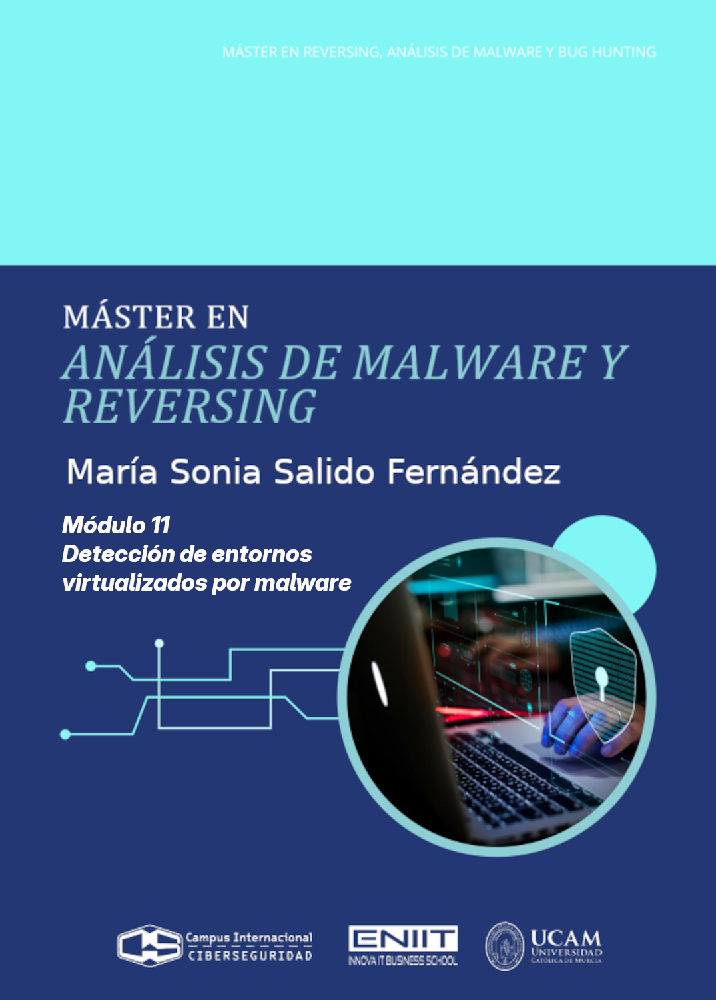
Alcance de esta entrega: Técnicas de evasión orientadas a la detección de máquinas virtuales, sandboxes y entornos de análisis.
| Dato académico | Información |
|---|---|
| Autoría | María Sonia Salido Fernández |
| Titulación | Master en Análisis de Malware y Reversing |
| Centro | ENIIT |
| Tutor | David García |
| Curso académico | 7ª Edición |
| Fecha | Agosto de 2026 |
Nota de alcance. El proyecto general del que parte esta memoria contempla distintos mecanismos anti-análisis utilizados por el malware. Sin embargo, debido a la amplitud que supondría desarrollar experimentalmente todos estos mecanismos y de acuerdo con la delimitación establecida con el tutor, el presente TFM se centra exclusivamente en las técnicas de detección de entornos virtualizados incluidas en el módulo de evasión ambiental (modulo-evasion/).
Por tanto, las técnicas específicas de anti-debugging y de anti-análisis estático quedan fuera del desarrollo práctico de esta memoria. Esta exclusión responde únicamente a una delimitación académica del alcance y no implica que dichas técnicas carezcan de relación con el proyecto general.
Uso ético. Las pruebas descritas tienen una finalidad académica y defensiva. Se realizaron con herramientas educativas, pruebas de concepto y un laboratorio aislado. No se persigue facilitar el despliegue de código malicioso, sino comprender indicadores, evidencias y contramedidas.
El análisis dinámico de malware se realiza habitualmente en máquinas virtuales y sandboxes para reducir los riesgos asociados a su ejecución. Sin embargo, estos entornos pueden exponer archivos, claves del Registro, procesos, dispositivos, identificadores de hardware y otros artefactos que los diferencian de un sistema convencional. El malware puede consultar estas señales antes de activar su funcionalidad principal y, si considera que está siendo analizado, finalizar su ejecución, introducir retrasos, ocultar su carga o seguir una ruta aparentemente legítima.
Este Trabajo Fin de Máster analiza de forma práctica las técnicas utilizadas para detectar entornos virtualizados. Debido a la extensión del proyecto general y conforme al alcance acordado con el tutor, la memoria desarrolla exclusivamente el módulo de evasión ambiental. Por tanto, quedan fuera de su desarrollo experimental las técnicas específicas de anti-debugging y de anti-análisis estático.
El estudio organiza las comprobaciones ambientales en quince familias: sistema de archivos, Registro de Windows, procesos, WMI, temporización, CPU, hardware, interacción humana, objetos globales del sistema operativo, tablas de firmware, consultas genéricas al sistema, detección de hooks, red, características del sistema operativo y artefactos de la interfaz gráfica.
Para su análisis se aplica una metodología común basada en la identificación estática de indicadores, la ejecución de referencia, el seguimiento de API, instrucciones y datos, la modificación controlada de una condición cuando resulta viable y la comprobación de la decisión adoptada por el programa. Las prácticas se apoyan principalmente en Pafish, al-khaser y pequeñas herramientas educativas autocontenidas, evitando el uso de malware real cuando una prueba de concepto resulta suficiente para reproducir el mecanismo estudiado.
Los resultados muestran que los indicadores explícitos vinculados a un fabricante o producto —como firmas de CPUID, identificadores de dispositivos, cadenas de firmware o clases de ventana— proporcionan evidencias más directas. En cambio, las comprobaciones basadas en recursos, actividad humana o mediciones temporales tienen un carácter heurístico y presentan una mayor probabilidad de falsos positivos. También se comprueba que la sanitización de una máquina virtual puede reducir numerosos artefactos de alto nivel, aunque no garantiza la eliminación completa de todas las diferencias observables.
Como resultado, se propone un procedimiento de análisis reproducible y orientado a la defensa, basado en relacionar cada consulta ambiental con el dato recuperado, la comparación realizada y la rama de ejecución resultante. El repositorio general del proyecto conserva el desarrollo técnico completo, el código, las evidencias adicionales y las contramedidas asociadas a cada familia.
Palabras clave: malware, detección de entornos virtualizados, evasión ambiental, anti-VM, sandbox, análisis dinámico, Pafish, al-khaser, x64dbg, contramedidas.
Dynamic malware analysis is commonly performed in virtual machines and sandboxes to reduce the risks associated with executing potentially malicious code. However, these environments may expose files, Registry keys, processes, devices, hardware identifiers, and other artefacts that distinguish them from conventional systems. Malware can inspect these signals before activating its main functionality and, if it determines that it is being analysed, terminate, introduce delays, conceal its payload, or follow an apparently legitimate execution path.
This Master's thesis provides a practical analysis of the techniques used by malware to detect virtualised environments. Owing to the breadth of the overall project and in accordance with the scope agreed with the supervisor, the dissertation focuses exclusively on environmental evasion techniques. Specific anti-debugging and static anti-analysis techniques are therefore excluded from its experimental development.
The study organises environmental checks into fifteen families: filesystem, Windows Registry, processes, WMI, timing, CPU, hardware, human interaction, global operating-system objects, firmware tables, generic operating-system queries, hook detection, network configuration, operating-system features, and user-interface artefacts.
A common methodology is applied throughout the analysis. It comprises the static identification of indicators, baseline execution, tracing of APIs, instructions, and data, controlled modification of one condition whenever feasible, and verification of the decision made by the program. The experiments mainly use Pafish, al-khaser, and small self-contained educational tools, avoiding real malware whenever a proof of concept is sufficient to reproduce the mechanism under study.
The results show that explicit indicators linked to a particular vendor or product —such as CPUID signatures, device identifiers, firmware strings, or window classes— provide more direct evidence. By contrast, checks based on system resources, human activity, or timing measurements are heuristic and more prone to false positives. The study also shows that sanitising a virtual machine can reduce many high-level artefacts, although it cannot guarantee the complete removal of every observable difference.
The thesis ultimately proposes a reproducible, defence-oriented analysis procedure that links each environmental query to the data retrieved, the comparison performed, and the resulting execution branch. The general project repository contains the complete technical development, source code, additional evidence, and countermeasures associated with each family.
Keywords: malware, virtual-environment detection, environmental evasion, anti-VM, sandbox, dynamic analysis, Pafish, al-khaser, x64dbg, countermeasures.
El análisis dinámico permite observar el comportamiento de una muestra mientras se ejecuta: archivos modificados, procesos creados, consultas al sistema, comunicaciones o cargas reconstruidas en memoria. Para reducir riesgos, este análisis suele realizarse en una máquina virtual o en una sandbox. Sin embargo, la propia infraestructura de análisis puede convertirse en una fuente de información para el programa observado.
Los hipervisores, las herramientas invitadas y los entornos automatizados dejan huellas. Algunas son explícitas, como drivers, servicios, cadenas de fabricante o prefijos MAC. Otras son indirectas: escasa memoria, un único procesador, ausencia de documentos, falta de actividad humana o alteraciones del tiempo. Una muestra puede combinar esas señales y decidir si muestra su comportamiento real.
El problema práctico no consiste solo en reconocer una API o una cadena sospechosa. Es necesario demostrar que el dato se obtiene, que se compara con un indicador y que el resultado modifica el flujo. Ese vínculo entre consulta, evidencia y decisión constituye el núcleo de este trabajo.
La documentación extensa, el código y las secuencias completas se conservan en el repositorio del proyecto. Esta memoria selecciona únicamente la información necesaria para explicar y validar cada familia sin duplicar el contenido técnico del repositorio.
Un resultado negativo en una sandbox no demuestra que una muestra sea inocua. Puede indicar que el entorno ha sido detectado antes de la activación del payload. Si el analista desconoce la comprobación, puede interpretar como comportamiento real una ruta deliberadamente benigna.
Este trabajo aborda tres dificultades:
La contribución principal es una memoria práctica, reproducible y defensiva que:
Tras presentar el marco, los objetivos y la metodología, el capítulo 8 desarrolla ampliamente las quince familias analizadas. Cada apartado mantiene la misma estructura: fundamento mínimo, práctica, resultado, limitaciones, contramedidas y enlaces al repositorio. Los capítulos finales comparan los resultados y extraen conclusiones defensivas.
Una técnica de evasión ambiental recopila información del sistema para valorar si la ejecución ocurre en una máquina virtual, sandbox o laboratorio. Si la condición se cumple, el programa puede terminar, retrasarse, ocultar funcionalidad o ejecutar una ruta alternativa. La Enciclopedia de Evasiones de Check Point agrupa métodos, ejemplos, firmas y contramedidas; MITRE ATT&CK los recoge bajo T1497 Virtualization/Sandbox Evasion.
MITRE diferencia tres subtécnicas especialmente útiles para este TFM:
| MITRE ATT&CK | Idea central | Familias relacionadas en este trabajo |
|---|---|---|
T1497.001 System Checks |
Consultas al sistema y búsqueda de artefactos | filesystem, registry, processes, WMI, CPU, hardware, objetos, firmware, OS, hooks, red, UI |
T1497.002 User Activity Based Checks |
Evidencias de uso humano | human interaction, UI artifacts, historial y actividad |
T1497.003 Time Based Checks |
Retardos y mediciones temporales | timing, uptime y comparaciones de relojes |
La clasificación completa y su relación con el repositorio se amplían en la introducción de evasión, la matriz de técnicas y la taxonomía.
La taxonomía empleada distingue dos formas de inferencia:
VBoxGuest.sys, una clave de Guest Additions, VBoxVBoxVBox o VBoxTrayToolWndClass.La primera suele ser más específica, pero puede neutralizarse eliminando o renombrando el artefacto. La segunda es más flexible, aunque produce más falsos positivos. En la práctica, las implementaciones combinan ambas.
Pafish y Al-khaser no son familias de malware. Son proyectos de investigación que reproducen comprobaciones anti-VM, anti-sandbox y anti-análisis. Se emplean porque permiten observar los mecanismos de forma controlada, contrastarlos con su código y repetir las pruebas sin introducir un payload real.
El repositorio incorpora además herramientas autocontenidas para aislar técnicas concretas, entre ellas timing_lab, inline_hook_lab, network_lab y ui_windows_lab. Su ventaja metodológica es que reducen el ruido y facilitan la comparación entre un estado de referencia y otro alterado.
Analizar experimentalmente técnicas de evasión utilizadas para identificar máquinas virtuales y entornos de análisis, demostrar su mecanismo de decisión y evaluar contramedidas defensivas y sus limitaciones.
modulo-evasion/.Se estudian las quince fichas actuales del submódulo de evasión:
No se desarrollan en esta memoria:
Algunas comprobaciones pueden pertenecer a más de una categoría, dependiendo de su finalidad y del contexto en el que se utilicen. Para resolver estos casos, se aplica un criterio funcional: una técnica solo se incluye cuando, dentro de esta memoria, se analiza como un indicador del entorno de ejecución, de virtualización o de instrumentación, y no como un mecanismo directo de detección de depuradores.
Este criterio afecta, entre otras, a la comprobación de SeDebugPrivilege. Aunque esta comprobación aparece clasificada dentro de la categoría DEBUG de al-khaser, en este TFM se estudia exclusivamente como una señal indirecta relacionada con los privilegios y las características del entorno de ejecución. No se utiliza para determinar directamente si existe un depurador conectado al proceso.
ASLR y por la compilación.Se adopta un estudio experimental y comparativo. Cada familia se analiza con la misma secuencia:
El objetivo es analizar cómo determinadas muestras de malware o técnicas documentadas pueden dificultar el análisis mediante tres grandes familias de mecanismos:
| Familia | Pregunta principal | Módulo |
|---|---|---|
| Evasión | ¿Estoy en una VM, sandbox o entorno artificial? | modulo-evasion/ |
| Anti-debugging | ¿Estoy siendo depurado o analizado paso a paso? | modulo-anti-debug/ |
| Anti-análisis estático | ¿Cómo puedo dificultar que el binario sea entendido sin ejecutarlo? | modulo-anti-analisis-estatico/ |
La metodología extensa del repositorio contiene los criterios y la plantilla completa de las fichas.
Una técnica se considera demostrada cuando existe evidencia de los tres eslabones siguientes:
consulta u observación → dato recuperado → decisión del flujo
La mera presencia de una API no basta. Por ejemplo, GetAdaptersAddresses puede ser legítima; se convierte en una comprobación anti-VM cuando la dirección obtenida se compara con un OUI de virtualización y el resultado activa una rama.
Cuando resulta posible, se comparan dos estados:
| Estado | Finalidad |
|---|---|
| Negativo o de referencia | El indicador no existe o no alcanza el umbral |
| Positivo o alterado | Se introduce el indicador o se modifica el valor de manera controlada |
Ejemplos: crear un proceso señuelo qemu-ga.exe, renombrar una cuenta a sandbox, omitir Sleep, instalar un inline hook sintético o abrir Pafish desde una ruta sospechosa.
Para cada prueba se documentan:
Las capturas de esta memoria son una selección. Las secuencias completas permanecen en las fichas del repositorio.
Las direcciones absolutas no deben utilizarse como único punto de repetición. Deben localizarse las funciones por símbolo, import, patrón, string o desplazamiento relativo al módulo. Antes de una entrega formal conviene añadir en el anexo de laboratorio las versiones exactas de Windows, VirtualBox, Pafish, al-khaser y los hashes de los binarios analizados.
| Componente | Configuración utilizada o recomendada |
|---|---|
| Sistema invitado | Windows x64 en una máquina VirtualBox |
| Aislamiento | Snapshot previo; red aislada, controlada o simulada |
| Herramientas educativas | Pafish, al-khaser y laboratorios autocontenidos |
| Depuración | x64dbg para x64 y x32dbg para Pafish x86 |
| Observación | Process Monitor, Process Explorer, API Monitor, PowerShell, Regshot, Wireshark |
| Seguridad | Sin acceso a datos personales ni a redes sensibles |
| Evidencias | Capturas, logs, CSV, comandos, hashes y notas de ejecución |
| Herramienta | Uso principal en el estudio |
|---|---|
| Ghidra | Strings, referencias, flujo y constantes |
| x32dbg / x64dbg | Argumentos, buffers, registros, flags y saltos |
| Process Monitor | Accesos a archivos, Registro y procesos |
| Process Explorer | Procesos, módulos y handles |
| Regshot | Diferencias de Registro entre estados |
| API Monitor | Trazado complementario de APIs |
| PowerShell | Preparación, inventario y contraste externo |
| Wireshark | Validación de red cuando procede |
| Pafish | Evaluación de exposición anti-VM y anti-sandbox |
| al-khaser | Demostraciones selectivas de familias de técnicas |
Los binarios de Pafish y al-khaser pueden ser detectados por antivirus porque implementan comportamientos similares a los del malware. Deben mantenerse en el laboratorio. Toda intervención sobre Registro, dispositivos, firmware virtual o drivers debe realizarse después de crear un snapshot y documentar un procedimiento de recuperación.
| Familia | Señal principal | Tipo dominante | Ejemplo demostrado |
|---|---|---|---|
| Filesystem | Archivos, rutas y nombres | Observable | Consulta de artefactos de VirtualBox |
| Registry | Claves y valores | Observable | Apertura y resolución de una clave |
| Processes | Procesos y herramientas | Observable | Coincidencia con x64dbg.exe |
| WMI | Propiedades CIM/WMI | Mixto | Win32_BIOS.SerialNumber = "0" |
| Timing | Retardos y relojes | Deductivo | Omisión controlada de Sleep(5000) |
| CPU | Identificadores e instrucciones | Observable/bajo nivel | CPUID devuelve VBoxVBoxVBox |
| Hardware | Dispositivos y recursos | Mixto | SCSI\DiskVBOX... |
| Human interaction | Ratón, teclado e inactividad | Deductivo | Dos lecturas de GetCursorPos |
| Global OS objects | Objetos y rutas especiales | Observable | Apertura de \\.\VBoxMiniRdrDN |
| Firmware tables | SMBIOS y ACPI | Observable | Obtención de RawSMBIOSData |
| Generic OS queries | Usuario, RAM, CPU, uptime | Deductivo | Usuario SANDBOX |
| Hooks | Integridad e instrumentación | Observable/heurístico | Prólogo redirigido a un handler |
| Network | MAC, adaptadores y configuración | Mixto | OUI 08:00:27 |
| OS features | Capacidades y comportamiento del SO | Mixto | Acceso a csrss.exe |
| UI artifacts | Clases, títulos y número de ventanas | Mixto | VBoxTrayToolWndClass |
Las familias describen la fuente o el mecanismo de la señal, no compartimentos estancos. El tamaño del disco puede consultarse por WMI o por APIs de almacenamiento. Una MAC pertenece a red y hardware. El uptime se puede clasificar como consulta genérica o timing. En esta memoria cada demostración se ubica donde aporta una evidencia distinta y se evitan repeticiones innecesarias.
Este capítulo desarrolla las quince familias del módulo de evasión con un criterio común. En cada una se presenta el fundamento, los indicadores relevantes, la forma de observarlos durante el análisis, una demostración representativa, las limitaciones y las contramedidas defensivas. Las secuencias se han seleccionado para explicar el razonamiento técnico sin trasladar al cuerpo principal todas las pruebas del repositorio.
La lectura de las capturas debe seguir siempre la misma cadena probatoria: entrada o consulta, dato recuperado, comparación y rama de decisión. Una llamada aislada no permite afirmar que exista evasión. La conclusión depende de que el valor obtenido se utilice para modificar el comportamiento.
| Apartado | Familia | Superficie principal |
|---|---|---|
| 8.1 | Filesystem | Archivos, directorios y ruta de ejecución |
| 8.2 | Registry | Claves, valores, servicios y firmware expuesto en el Registro |
| 8.3 | Processes | Procesos de hipervisores y herramientas de análisis |
| 8.4 | WMI | Inventario de sistema consultado mediante WQL y COM |
| 8.5 | Timing | Esperas, relojes e instrucciones de conteo temporal |
| 8.6 | CPU | CPUID, tablas de descriptores e instrucciones especiales |
| 8.7 | Hardware | Discos, memoria, periféricos y recursos asignados |
| 8.8 | Human Interaction | Ratón, teclado, actividad y huellas de uso humano |
| 8.9 | Global OS Objects | Mutexes, pipes, dispositivos y namespaces globales |
| 8.10 | Firmware Tables | SMBIOS, ACPI e identificadores OEM |
| 8.11 | Generic OS Queries | Usuario, host, RAM, CPU, pantalla, disco y uptime |
| 8.12 | Hooks | Integridad de código, IAT, EAT y rangos de módulos |
| 8.13 | Network | MAC, OUI, adaptadores, IP, gateway, DNS y DHCP |
| 8.14 | OS Features | Privilegios, pila y compatibilidad con Wine |
| 8.15 | UI Artifacts | Clases, títulos y enumeración de ventanas |
Ampliación y evidencias completas: ficha
02-filesystem.md. El repositorio conserva capturas adicionales, herramientas, código y secuencias no incluidas en la memoria.
La técnica filesystem consiste en comprobar artefactos presentes en el sistema de archivos con el objetivo de identificar si la muestra se está ejecutando en un entorno virtualizado, una sandbox o un laboratorio de análisis.
El malware puede utilizar esta técnica para buscar archivos, directorios, drivers, ejecutables o rutas asociadas a herramientas de virtualización y análisis. Estos elementos suelen estar presentes en máquinas virtuales o entornos automatizados, pero no necesariamente en un equipo de usuario convencional.
Entre los artefactos que puede comprobar se encuentran drivers y ejecutables relacionados con VMware, VirtualBox, Parallels u otras soluciones de virtualización, así como carpetas o rutas comúnmente utilizadas por sandboxes para almacenar o ejecutar muestras.
Ejemplos típicos de archivos comprobados:
C:\Windows\System32\drivers\VBoxGuest.sys
C:\Windows\System32\drivers\VBoxMouse.sys
C:\Windows\System32\VBoxService.exe
C:\Windows\System32\drivers\vmmouse.sys
C:\Windows\System32\drivers\vmhgfs.sys
También puede analizar la ruta desde la que se ejecuta la muestra para detectar nombres sospechosos como:
sample
malware
virus
sandbox
analysis
La lógica de la técnica es sencilla: si el malware encuentra artefactos característicos de una máquina virtual o de un entorno de análisis, puede inferir que no se encuentra en un sistema real de usuario. Como consecuencia, puede modificar su comportamiento, finalizar la ejecución, retrasar la carga maliciosa o ejecutar una rama de código aparentemente inocua.
Desde el punto de vista del análisis de malware, esta técnica es especialmente relevante porque demuestra cómo comprobaciones simples del sistema de archivos pueden condicionar el resultado del análisis dinámico. Por ello, es importante revisar tanto las cadenas embebidas en el binario como las llamadas a funciones relacionadas con el acceso a archivos y directorios.
APIs de Windows asociadas a esta técnica:
GetFileAttributesA/W
GetModuleFileNameA/W
GetProcessImageFileNameA/W
QueryFullProcessImageNameA/W
GetLogicalDriveStringsA/W
GetDriveTypeA/W
ExpandEnvironmentStringsA/W
SHGetSpecialFolderPathA/W
PathCombineA/W
En análisis estático, esta técnica puede detectarse mediante la búsqueda de strings, imports y referencias cruzadas en herramientas como Ghidra, PEStudio, Detect It Easy o strings.
En análisis dinámico, puede detectarse mediante herramientas como Process Monitor, x32dbg o x64dbg, identificando accesos a rutas, archivos o directorios asociados a entornos virtualizados.
| Nº | Técnica | Qué busca | APIs principales | Prioridad TFM |
|---|---|---|---|---|
| 1 | Archivos específicos | Drivers o ejecutables de VMware, VirtualBox o Parallels | GetFileAttributes |
Alta |
| 2 | Directorios específicos | Carpetas de VM o sandbox | GetFileAttributes, PathCombine, ExpandEnvironmentStrings |
Alta |
| 3 | Ruta completa del ejecutable | Palabras como sample, virus, sandbox, malware o analysis |
GetModuleFileName, QueryFullProcessImageName |
Alta |
| 4 | Directorio concreto de ejecución | Rutas propias de sandboxes antiguas | GetModuleFileName + comparación |
Media/Baja |
| 5 | Ejecutables en raíz del disco | sample.exe, malware.exe |
GetLogicalDriveStrings, GetDriveType, GetFileAttributes |
Media/Alta |
| Tipo de artefacto / indicador | Indicadores asociados | Ejemplos | Relevancia |
|---|---|---|---|
| Archivos | Drivers, ejecutables o DLLs asociados a entornos virtualizados | vmmouse.sys, vmhgfs.sys, VBoxGuest.sys, VBoxMouse.sys, VBoxService.exe, VBoxTray.exe, prlmouse.sys |
Alta |
| Archivos en raíz | Ejecutables con nombres típicos de laboratorio | C:\sample.exe, C:\malware.exe, D:\sample.exe, D:\malware.exe |
Media/Alta |
| Directorios | Carpetas asociadas a virtualización o sandbox | C:\analysis, %PROGRAMFILES%\VMware\, %PROGRAMFILES%\Oracle\VirtualBox Guest Additions\ |
Alta |
| Ruta del ejecutable | Palabras sospechosas en la ruta de ejecución | \sample, \virus, sandbox, malware, analysis |
Alta |
| APIs | Funciones utilizadas para consultar archivos, directorios, rutas o unidades | GetFileAttributesA/W, GetModuleFileNameA/W, QueryFullProcessImageNameA/W, GetLogicalDriveStringsA/W, GetDriveTypeA/W |
Muy alta |
| Strings | Cadenas embebidas relacionadas con rutas o nombres de entorno | VBox, VirtualBox, VMware, sample, malware, virus, sandbox, analysis, Program Files, system32\drivers |
Muy alta |
| Evidencia estática | Indicadores observables sin ejecutar la muestra | Imports, strings, referencias cruzadas en Ghidra | Alta |
| Evidencia dinámica | Indicadores observables durante la ejecución | Consultas en Procmon o argumentos observados en x64dbg | Alta |
En la Técnica 1: Comprobar si existen archivos concretos, la muestra comprueba si existen archivos asociados a entornos virtualizados. Consulta rutas asociadas a hipervisores o herramientas de integración de la VM. La API clave es:
GetFileAttributesA/W
Breakpoints utilizados:
bp kernel32.GetFileAttributesA
bp kernelbase.GetFileAttributesA
bp kernel32.GetFileAttributesW
bp kernelbase.GetFileAttributesW
En Windows muchas llamadas exportadas por kernel32.dll terminan resolviéndose realmente en KernelBase.dll, por lo que conviene poner breakpoints en ambos módulos.
En x64, el primer argumento de GetFileAttributesA/W se pasa en:
RCX = puntero a la ruta consultada
Durante la depuración, se observó:
RCX -> "C:\WINDOWS\system32\drivers\VBoxMouse.sys"
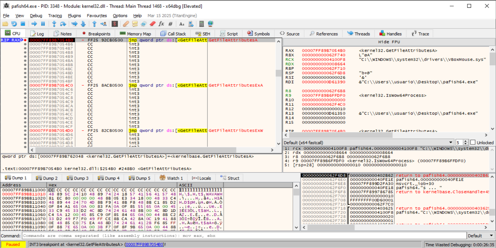
Esto significa que Pafish estaba comprobando si existía el driver:
C:\Windows\System32\drivers\VBoxMouse.sys
Este archivo es un artefacto típico de VirtualBox Guest Additions.
Tras ejecutar la llamada:
GetFileAttributesA("C:\\WINDOWS\\system32\\drivers\\VBoxMouse.sys");
el retorno observado fue:
RAX = 0000000000000020
EAX = 00000020
Esto significa:
EAX != FFFFFFFF
Por tanto, el archivo existe.
Pafish continuó recorriendo otros archivos de VirtualBox, como:
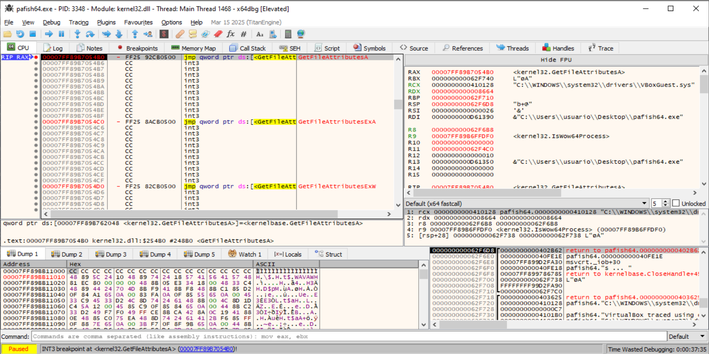
VBoxMouse.sys
VBoxGuest.sys
VBoxSF.sys
VBoxVideo.sys
vboxdisp.dll
vboxhook.dll
vboxmrxnp.dll
vboxogl.dll
Por cada uno de ellos llamó a GetFileAttributesA.
Conclusión: esta técnica queda demostrada, ya que Pafish consulta archivos concretos asociados a VirtualBox mediante GetFileAttributesA.
Nota sobre la demostración
En esta memoria se presenta una demostración resumida de la técnica, centrada en su funcionamiento, ejecución e interpretación de los resultados. Su desarrollo completo —incluidos el fundamento teórico, el código fuente, el procedimiento detallado de análisis y las evidencias obtenidas— puede consultarse en el repositorio general del proyecto - Técnica 1: comprobar si existen archivos concretos.
Nota sobre técnicas complementarias
Por razones de alcance esta memoria no desarrolla experimentalmente todas las técnicas pertenecientes a esta categoría. No obstante, las siguientes técnicas se encuentran documentadas y demostradas en el repositorio general del proyecto, donde pueden consultarse su fundamento teórico, implementación, procedimiento de análisis y evidencias obtenidas:
- Técnica 2: Comprobación de la existencia de directorios específicos.
- Técnica 3: Comprobar si la ruta completa del ejecutable contiene ciertas palabras.
- Técnica 4: Comprobación del directorio desde el que se ejecuta la muestra.
- Técnica 5: Comprobación de ejecutables con nombres sospechosos en la raíz del disco.
Estos contenidos se ofrecen como material técnico complementario y forman parte del trabajo práctico realizado durante el desarrollo del proyecto, aunque sus demostraciones completas no se reproducen en el presente documento.
Ampliación y evidencias completas: ficha
03-registry.md. El repositorio conserva capturas adicionales, herramientas, código y secuencias no incluidas en esta memoria.
La técnica registry es una técnica de evasión anti-VM y anti-sandbox basada en la inspección del Registro de Windows con el objetivo de identificar artefactos asociados a entornos virtualizados, sandboxes o plataformas de análisis automatizado. Su finalidad es permitir que el malware determine si se está ejecutando en un sistema físico real o en un entorno controlado por analistas, modificando su comportamiento en función del resultado.
El principio general de esta técnica parte de una premisa sencilla: determinadas claves, valores o cadenas del Registro no suelen estar presentes en un equipo físico convencional, pero sí pueden aparecer en entornos como VirtualBox, VMware, Hyper-V, Sandboxie, Wine, Xen, QEMU o Parallels. Por tanto, la presencia de estos artefactos puede actuar como indicador de virtualización o análisis.
En la práctica, el malware puede aplicar esta técnica de varias formas:
VMware, VirtualBox o Hyper-V.VBOX, VMWARE, QEMU, Xen, VirtualBox o nombres relacionados con herramientas de análisis.VBox dentro de claves relacionadas con servicios del sistema.Microsoft Office, mediante valores como VBAWarnings, para detectar configuraciones anómalas que puedan ser habituales en sandboxes automatizadas.Para llevar a cabo estas comprobaciones, el malware suele utilizar funciones de la API de Windows relacionadas con el Registro, entre ellas:
RegOpenKeyRegOpenKeyExRegQueryValueRegQueryValueExRegEnumKeyExRegCloseKeyEstas funciones pueden estar apoyadas o sustituidas por llamadas de más bajo nivel exportadas por ntdll.dll, como:
NtOpenKeyNtQueryValueKeyNtEnumerateKeyNtCloseDesde el punto de vista del análisis, la presencia de llamadas a estas funciones no implica por sí sola un comportamiento malicioso, ya que muchas aplicaciones legítimas consultan el Registro. Sin embargo, cuando dichas llamadas acceden a rutas o valores característicos de entornos virtualizados, pueden considerarse un indicio relevante de comportamiento evasivo.
En resumen, la técnica registry permite al malware utilizar el Registro de Windows como fuente de información sobre el entorno de ejecución. Si detecta huellas compatibles con una máquina virtual, sandbox o sistema de análisis, puede evitar ejecutar su carga maliciosa, retrasar su actividad, finalizar el proceso o alterar su comportamiento para dificultar su detección y estudio.
registryEl objetivo de esta práctica es demostrar cómo una aplicación puede consultar el Registro de Windows para identificar artefactos asociados a plataformas de virtualización. La demostración no se limita a comprobar que el programa llama a una función del Registro, sino que reconstruye la secuencia completa de decisión:
Para ello se utiliza pafish64.exe. La ejecución se analizó con x64dbg, iniciado con privilegios elevados. Se cargó pafish64.exe y se estableció el siguiente punto de interrupción:
bp advapi32.RegOpenKeyExA
También pueden utilizarse los siguientes puntos de interrupción para ampliar el seguimiento a otras variantes de la API:
bp advapi32.RegOpenKeyExW
bp advapi32.RegOpenKeyA
bp advapi32.RegOpenKeyW
bp advapi32.RegQueryValueExA
bp advapi32.RegQueryValueExW
En algunas versiones de Windows, las funciones exportadas por advapi32.dll actúan como intermediarias y terminan ejecutando código situado en KernelBase.dll. Esta redirección no altera el significado de los argumentos ni del valor de retorno analizado.
La función empleada en las evidencias presenta la siguiente firma:
LSTATUS RegOpenKeyExA(
HKEY hKey,
LPCSTR lpSubKey,
DWORD ulOptions,
REGSAM samDesired,
PHKEY phkResult
);
De acuerdo con la convención de llamada de Windows x64, los cuatro primeros argumentos se reciben en RCX, RDX, R8 y R9. El quinto argumento, phkResult, se encuentra en la pila, normalmente en [RSP+0x28] en el momento de entrada a la función.
| Registro - Ubicación | Argumento | Finalidad |
|---|---|---|
RCX |
hKey |
Clave raíz desde la que se resuelve la subclave. |
RDX |
lpSubKey |
Puntero a la cadena con la subclave consultada. |
R8 |
ulOptions |
Opciones de apertura. Habitualmente contiene 0. |
R9 |
samDesired |
Derechos de acceso solicitados sobre la clave. |
[RSP+0x28] |
phkResult |
Dirección donde se almacenará el identificador de la clave si la apertura tiene éxito. |
VirtualBox Guest AdditionsRegOpenKeyExALa primera evidencia corresponde a una llamada a RegOpenKeyExA dirigida a una clave específica de las herramientas invitadas de VirtualBox.
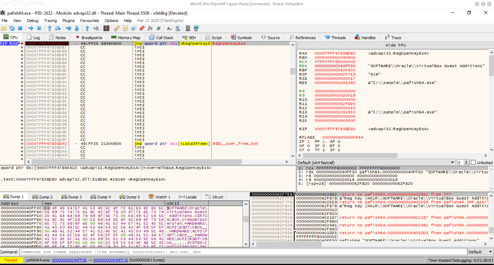
En la figura 8.2.1, pafish64.exe se encuentra detenido antes de que se ejecute la apertura de la clave. Los argumentos observados son los siguientes:
| Registro | Valor observado | Interpretación |
|---|---|---|
RCX |
FFFFFFFF80000002 |
Identificador predefinido de HKEY_LOCAL_MACHINE. |
RDX |
Puntero a SOFTWARE\Oracle\VirtualBox Guest Additions |
Subclave que se intenta abrir. |
R8 |
0000000000000000 |
No se han especificado opciones especiales de apertura. |
R9 |
0000000000020019 |
Máscara KEY_READ, correspondiente a permisos de lectura. |
El valor FFFFFFFF80000002 es la representación extendida a 64 bits del identificador predefinido HKEY_LOCAL_MACHINE. Al combinar esta clave raíz con la cadena apuntada por RDX, se obtiene la ruta completa:
HKLM\SOFTWARE\Oracle\VirtualBox Guest Additions
Esta ruta constituye un artefacto directo de VirtualBox. Su presencia indica que las herramientas invitadas están instaladas en el sistema analizado. Estas herramientas mejoran la integración entre el equipo anfitrión y el invitado, pero también introducen claves, servicios, controladores y archivos que pueden utilizarse para identificar la máquina virtual.
El valor de R9 es:
0x20019 = KEY_READ
Por tanto, pafish64.exe no pretende modificar la clave. La abre con permisos de lectura para determinar si existe y utilizar el resultado como indicador ambiental.
Para observar el resultado se ejecutó la función hasta su retorno y se regresó al código llamador. En x64dbg puede realizarse mediante Ctrl+F9 y, a continuación, ejecutando la instrucción ret cuando sea necesario.
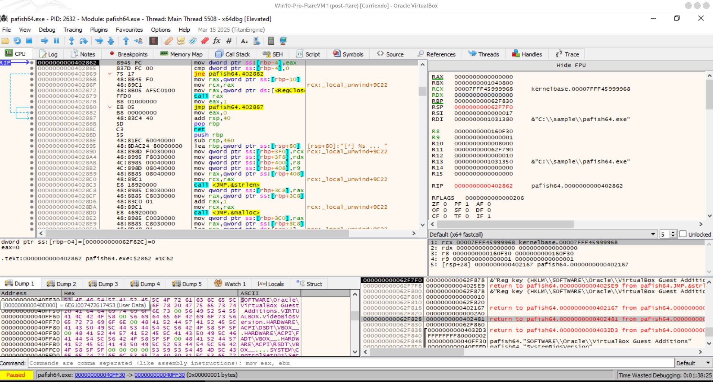
Después de la llamada se observa:
EAX = 0
RegOpenKeyExA devuelve un valor de tipo LSTATUS. Un retorno igual a cero corresponde a:
ERROR_SUCCESS
Esto significa que la clave existe y se ha abierto correctamente. El programa guarda el resultado y evalúa si es distinto de cero. En la figura también puede observarse la comparación posterior:
mov dword ptr ss:[rbp-4], eax
cmp dword ptr ss:[rbp-4], 0
jne ...
La lógica puede interpretarse del siguiente modo:
EAX = 0, la clave existe y la comprobación es positiva.EAX != 0, la apertura ha fallado y el programa continúa por la rama negativa.En este caso, la condición positiva confirma la presencia de VirtualBox Guest Additions.
Al continuar la ejecución, pafish64.exe muestra el resultado de la comprobación en su consola.
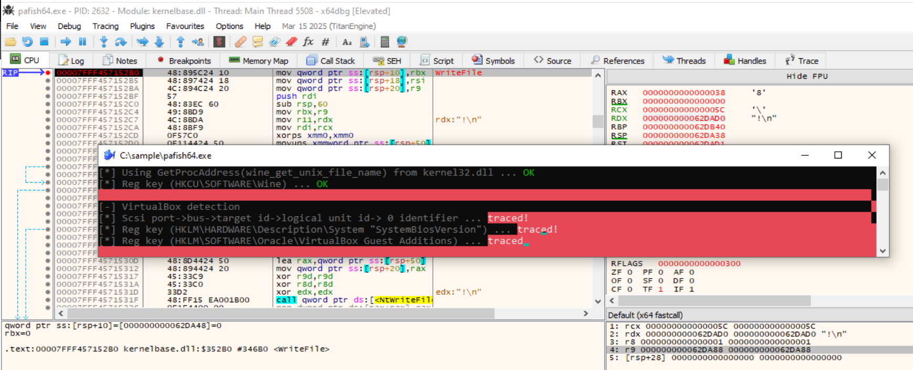
La salida contiene el siguiente mensaje:
[*] Reg key (HKLM\SOFTWARE\Oracle\VirtualBox Guest Additions) ... traced!
El mensaje traced! confirma que pafish ha interpretado la existencia de la clave como una huella del entorno virtualizado. La demostración queda cerrada porque se han observado la consulta, el resultado de la API, la evaluación del retorno y la decisión final.
Conclusión: La evidencia demuestra una detección positiva mediante el Registro de Windows. No se trata únicamente de una consulta genérica: la ruta contiene una referencia específica a VirtualBox Guest Additions, la función devuelve ERROR_SUCCESS y el programa utiliza el resultado para marcar el entorno como detectado.
Nota sobre el alcance de las demostraciones
En esta versión resumida de la memoria se demuestran algunas de las técnicas de detección de entornos virtualizados y herramientas de análisis basadas en consultas al Registro de Windows. En concreto, se incluyen comprobaciones relacionadas con claves de VirtualBox y VMware, información ACPI/BIOS y artefactos asociados a sandboxes o herramientas de análisis.
El desarrollo completo de todas las técnicas de esta categoría —incluidos su fundamento teórico, código fuente, procedimiento de ejecución, análisis detallado, capturas y resultados— puede consultarse en la ficha dedicada al Registro de Windows del repositorio general del proyecto.
- Técnica 1: Comprobar claves de VirtualBox - Evidencia Complementaria.
- Técnica 2: Comprobar claves de VMware.
- Técnica 3: Comprobar claves de servicios de VM.
- Técnica 4: Comprobar claves ACPI/BIOS.
- Técnica 5: Comprobar claves asociadas a sandbox o herramientas de análisis.
Estos contenidos se ofrecen como material técnico complementario y forman parte del trabajo práctico realizado durante el desarrollo del proyecto, aunque sus demostraciones completas no se reproducen en el presente documento.
Ampliación y evidencias completas: ficha
04-processes.md. El repositorio conserva capturas adicionales, herramientas, código y secuencias no incluidas en la memoria.
La técnica consiste principalmente en enumerar los procesos que se encuentran en ejecución y comparar sus nombres con una lista de procesos previamente definidos. En sistemas Windows, esta enumeración puede realizarse mediante funciones como CreateToolhelp32Snapshot, Process32First, Process32Next o EnumProcesses.
Entre los procesos que suelen buscarse se encuentran los asociados a VMware, VirtualBox, QEMU, Parallels, Virtual PC, Xen o determinadas herramientas de análisis. Algunos ejemplos son vmtoolsd.exe, vboxservice.exe, vboxtray.exe, qemu-ga.exe o prl_tools.exe.
Cuando el malware detecta alguno de estos procesos, puede asumir que se encuentra dentro de una máquina virtual o de una plataforma de análisis. Como respuesta, puede finalizar su ejecución, permanecer inactivo, retrasar la actividad maliciosa, ocultar determinadas funciones o ejecutar un comportamiento alternativo para evitar que sus capacidades reales sean observadas.
Esta técnica también puede extenderse a la detección de bibliotecas cargadas en memoria, como sbiedll.dll, relacionada con Sandboxie, o a la búsqueda de funciones específicas exportadas por determinadas bibliotecas. Por tanto, el análisis de procesos no se limita únicamente a los ejecutables activos, sino que puede incluir otros elementos del entorno de ejecución que permitan identificar sistemas de análisis o virtualización.
La técnica Processes puede resumirse mediante el siguiente flujo:
Inicio de la muestra
|
v
Enumeración de procesos activos
|
v
Comparación con una lista de indicadores
|
+-- VirtualBox
| +-- vboxservice.exe
| +-- vboxtray.exe
|
+-- VMware
| +-- vmtoolsd.exe
| +-- vmwaretray.exe
| +-- vmwareuser.exe
| +-- vmwareservice.exe
|
+-- Herramientas de análisis o sandbox
+-- joeboxserver.exe
+-- joeboxcontrol.exe
+-- WPE Pro.exe
+-- ksdumperclient.exe
|
v
¿Se detecta algún proceso sospechoso?
|
+-- No --> Continuar con la ejecución normal
|
+-- Sí
|
v
Activar comportamiento evasivo
+-- Finalizar la ejecución
+-- Permanecer inactivo
+-- Retrasar la carga maliciosa
+-- Ejecutar una funcionalidad limitada
| Elemento | Descripción |
|---|---|
| Objetivo | Detectar máquinas virtuales, sandboxes o herramientas de análisis. |
| Fuente de información | Lista de procesos activos del sistema. |
| Método principal | Comparación de nombres de ejecutables con una lista de indicadores conocidos. |
| API habituales | CreateToolhelp32Snapshot, Process32First, Process32Next y EnumProcesses. |
| Indicadores frecuentes | Procesos asociados a VirtualBox, VMware, JoeBox, WPE Pro o KsDumper. |
| Respuesta del malware | Finalización, inactividad, retraso o modificación del comportamiento. |
| Limitación | Los procesos pueden estar ausentes, ocultos, detenidos o renombrados. |
La eficacia de esta técnica depende de que los procesos buscados estén activos y mantengan sus nombres habituales. Por este motivo, suele combinarse con otras comprobaciones relacionadas con el sistema de archivos, el Registro, el hardware o las bibliotecas cargadas.
La forma más clara de demostrar esta técnica: Enumerar procesos en ejecución con al-khaser es realizar un experimento controlado con un proceso señuelo. Así se evita depender de los procesos reales de VirtualBox o VMware y se demuestra que el resultado cambia únicamente cuando aparece un nombre concreto en la lista de procesos.
al-khaser implementa una función compartida denominada GetProcessIdFromName(). Esta crea una instantánea con CreateToolhelp32Snapshot(TH32CS_SNAPPROCESS, 0), recorre las entradas mediante Process32First y Process32Next, y compara cada szExeFile con el nombre buscado utilizando StrCmpI.
Abrimos una consola de Windows en la carpeta donde hemos extraído al-khaser y comprobamos que el ejecutable admite la selección de categorías:
al-khaser_x64.exe -h
La versión actual permite ejecutar únicamente la categoría QEMU mediante --check QEMU. Esto evita mezclar la prueba con todas las demás técnicas incluidas en el proyecto.
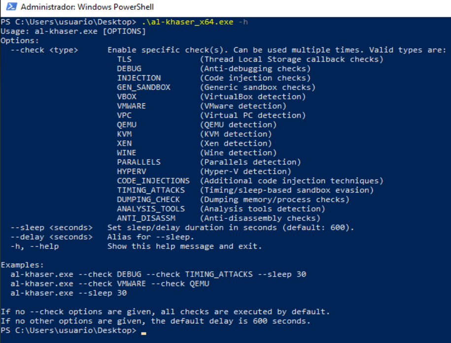
Primera ejecución: sin el proceso señuelo. Comprobamos inicialmente que los procesos buscados no se encuentran activos:
tasklist | findstr /i "qemu-ga.exe vdagent.exe vdservice.exe"
Como el comando no devuelve ninguna línea, ejecutamos al-khaser:
"C:\Users\Usuario\Desktop\al-khaser_x64.exe" --check QEMU > resultado_sin_proceso.txt
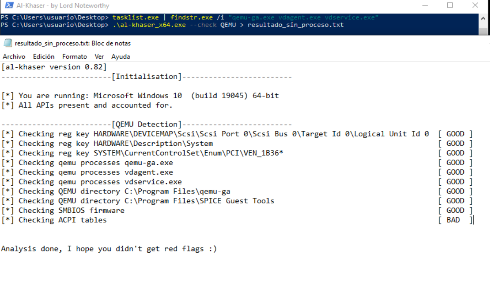
Buscamos en el resultado las comprobaciones relacionadas con procesos:
findstr /i "qemu processes" resultado_sin_proceso.txt
En esta primera ejecución, la comprobación correspondiente a qemu-ga.exe indica que el proceso no ha sido detectado:
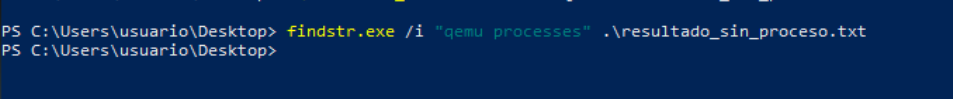
Creamos un proceso señuelo:
Creamos una carpeta para la prueba:
mkdir C:\Lab\processes-demo
Copiamos un ejecutable legítimo de Windows y lo renombramos como qemu-ga.exe:
copy C:\Windows\System32\cmd.exe C:\Lab\processes-demo\qemu-ga.exe
Ejecutamos el archivo renombrado y lo mantenemos abierto:
Start-Process `
-FilePath "C:\Lab\processes-demo\qemu-ga.exe" `
-ArgumentList "/k", "title QEMU-process-decoy"
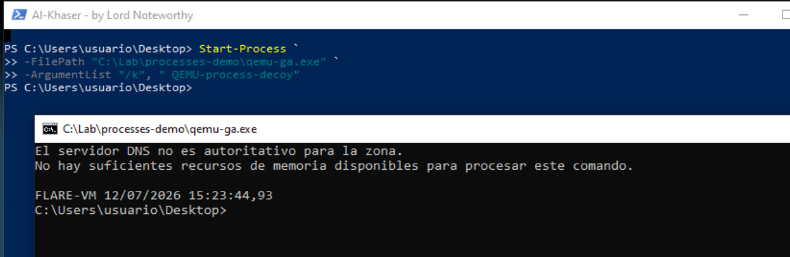
Comprobamos que Windows lo muestra con el nombre esperado:
tasklist /fi "IMAGENAME eq qemu-ga.exe"
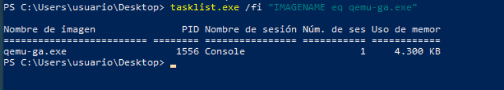
El resultado muestra la entrada:
qemu-ga.exe
Este ejecutable sigue siendo una copia legítima de cmd.exe. Únicamente se ha cambiado el nombre del archivo para comprobar si al-khaser se basa en el nombre del proceso.
Segunda ejecución: con el proceso señuelo:
Ejecutamos de nuevo la misma categoría:
al-khaser_x64.exe --check QEMU > resultado_con_proceso.txt
Extraemos las líneas relativas a los procesos:
findstr /i "qemu processes" resultado_con_proceso.txt
La comprobación de qemu-ga.exe pasa de un resultado negativo a uno positivo. Los demás indicadores de QEMU pueden seguir siendo negativos, ya que no se han introducido claves del Registro, archivos, firmware ni controladores asociados a esa plataforma.
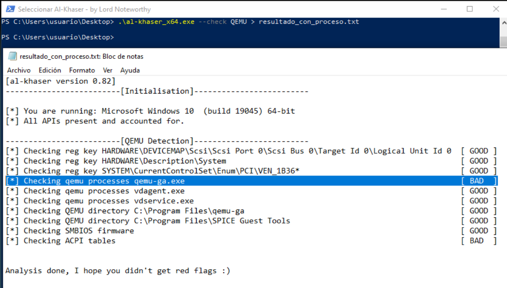
al-khaser consulta la lista de procesos activos y reacciona ante la aparición del nombre qemu-ga.exe.
Confirmación con x64dbg:
La salida de al-khaser demuestra el cambio de resultado, pero para acreditar técnicamente el mecanismo vamos a observar las llamadas a la API con x64dbg.
Cargamos al-khaser_x64.exe en x64dbg y configuramos la línea de comandos: File - Change Command Line:
"C:\Users\Usuario\Desktop\al-khaser_x64.exe" --check QEMU
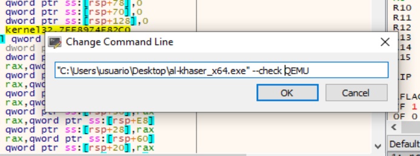
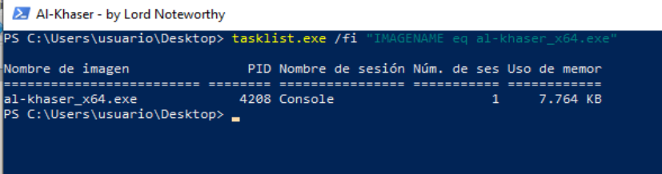
Establecemos puntos de ruptura sobre estas funciones:
CreateToolhelp32Snapshot
Process32FirstW
Process32NextW
StrCmpIW
Comprobamos CreateToolhelp32Snapshot. Cuando la ejecución se detenga en CreateToolhelp32Snapshot, inspeccionamos los argumentos:
RCX = dwFlags
RDX = th32ProcessID
Para demostrar la enumeración de procesos, debemos encontrar una llamada con:
RCX = 0x2
RDX = 0x0
Donde:
0x2 = TH32CS_SNAPPROCESS
La llamada esperada sería equivalente a:
CreateToolhelp32Snapshot(TH32CS_SNAPPROCESS, 0);
Pulsamos F9 para continuar hasta una llamada a CreateToolhelp32Snapshot que cumpla con RCX y RDX:
En Windows x64, la función recibe:
HANDLE CreateToolhelp32Snapshot(
DWORD dwFlags, // RCX
DWORD th32ProcessID // RDX
);
Por tanto:
0x00000002 = TH32CS_SNAPPROCESS
0x00000000 = enumerar los procesos de todo el sistema
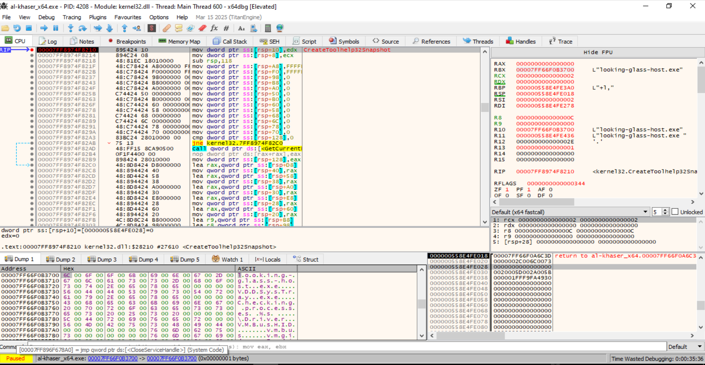
El registro RBX apunta a la cadena:
looking-glass-host.exe
Esto sugiere que, en esta iteración, al-khaser está enumerando los procesos para comprobar si se encuentra activo looking-glass-host.exe, asociado a entornos de virtualización y visualización de máquinas virtuales.
El proceso buscado no se pasa directamente a CreateToolhelp32Snapshot. La cadena se conserva en el código llamador para compararla posteriormente con cada nombre obtenido durante la enumeración.
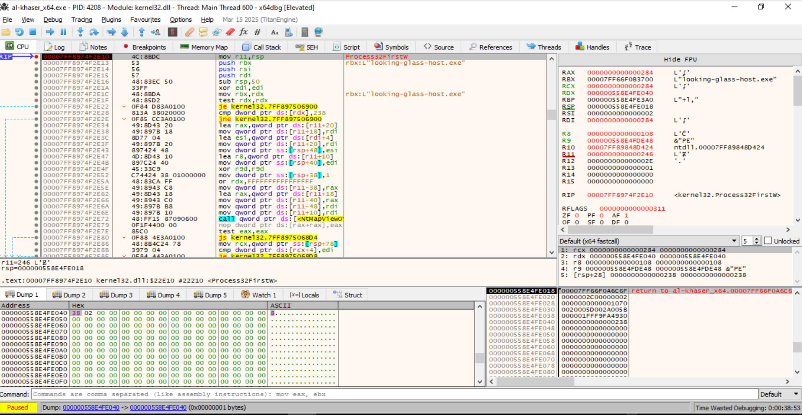
al-khaser ha llamado a Process32FirstW para recuperar la primera entrada de la instantánea de procesos.
La función tiene esta firma:
BOOL Process32FirstW(
HANDLE hSnapshot,
LPPROCESSENTRY32W lppe
);
En Windows x64, los argumentos aparecen en:
RCX = hSnapshot
RDX = puntero a PROCESSENTRY32W
En la captura:
RCX = 0x284
RDX = 0x000000558E4FE040
Por tanto:
RCX = 0x284 es el identificador devuelto anteriormente por CreateToolhelp32Snapshot.RDX = 0x000000558E4FE040 apunta a la estructura PROCESSENTRY32W donde Windows escribirá los datos del primer proceso enumerado.Además, RBX apunta a:
looking-glass-host.exe
Esto indica que al-khaser está recorriendo los procesos para comprobar si alguno coincide con ese nombre.
Debemos anotar la dirección 000000558E4FE040 antes de ejecutar la función ya que es el puntero a la estructura PROCESSENTRY32W.
Pulsamos Ctrl + F9 para ejecutar hasta el retorno de Process32FirstW. Al regresar al código de al-khaser, comprobamos RAX:
RAX != 0 → la función tuvo éxito
RAX = 0 → la enumeración falló
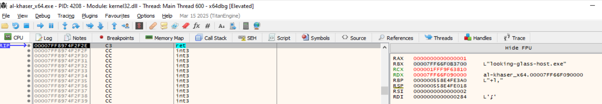
RAX = 1
El valor 1 indica que Process32FirstW se ejecutó correctamente y escribió la información del primer proceso en la estructura PROCESSENTRY32W.
RBX -> "looking-glass-host.exe"
RBX sigue conservando el nombre del proceso que al-khaser pretende localizar.
RDI = 0x284
Ese valor coincide con el handle de la instantánea de procesos creada mediante CreateToolhelp32Snapshot.
Comprobamos que ahora RDX ya no contiene el puntero a la estructura PROCESSENTRY32W. Ha cambiado. Por eso hemos tenido que anotarlo en el paso anterior:
000000558E4FE040
El nombre del proceso se encuentra en el campo szExeFile, cuyo desplazamiento es 0x2C:
000000558E4FE040 + 0x2C
= 000000558E4FE06C
Pulsamos F8 para ejecutar la instrucción ret y volver al código de al-khaser.
En el panel Dump, pulsamos Ctrl + G e introducimos:
000000558E4FE06C
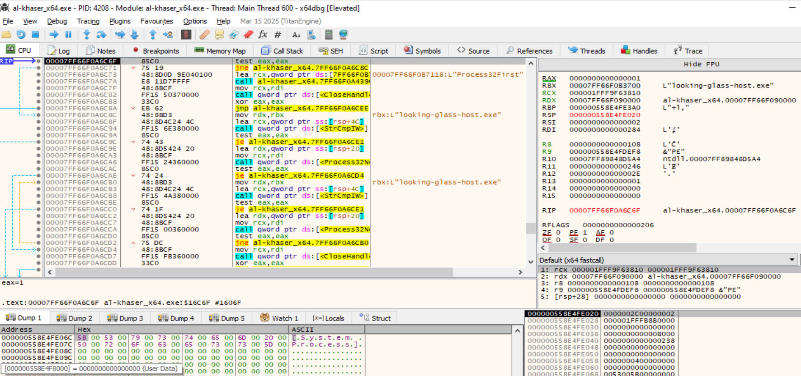
Vemos que la primera entrada recuperada por Process32FirstW corresponde a [System Process].
Comparación del nombre del proceso:
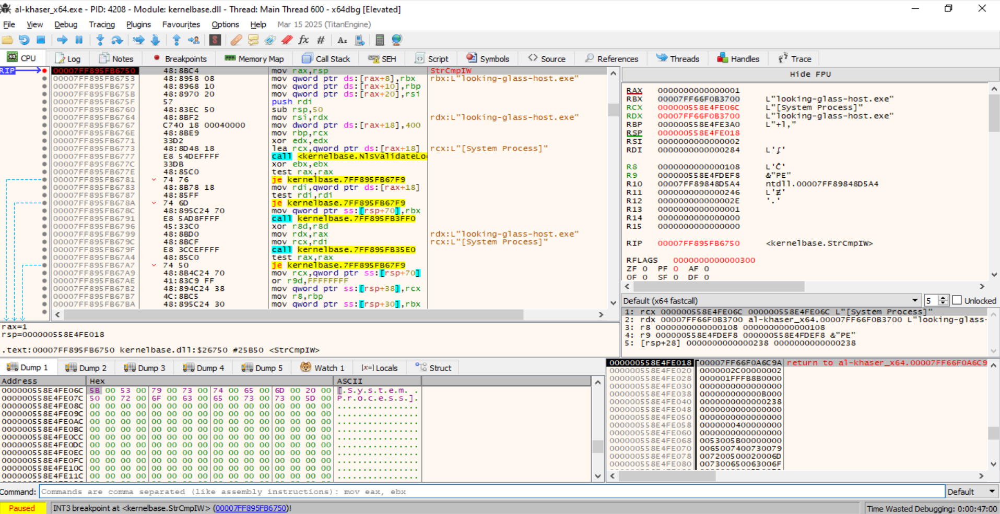
Los argumentos de StrCmpIW son:
RCX = nombre del proceso enumerado
RDX = nombre del proceso buscado
En esta ejecución:
RCX -> "[System Process]"
RDX -> "looking-glass-host.exe"
La comparación equivalente sería:
StrCmpIW(L"[System Process]", L"looking-glass-host.exe");
Como las cadenas no coinciden, StrCmpIW devolverá un valor distinto de cero. Después, el programa ejecutará:
lea rdx, [rsp+20]
mov rcx, rdi
call Process32NextW
Esta llamada sustituirá el contenido de la estructura por el siguiente proceso de la lista.
La lógica completa visible en la captura es:
Process32FirstW
|
v
Obtener szExeFile
|
v
StrCmpIW(proceso_actual, proceso_buscado)
|
+-- Coincidencia --> Rama de proceso detectado
|
+-- Sin coincidencia
|
v
Process32NextW
|
+-- Repetir comparación
Pulsamos Ctrl + F9 para ejecutar StrCmpIW hasta su instrucción ret. Pulsamos F8 para volver al código de al-khaser, justo después de la llamada. Comprobamos el valor de RAX. Para una comparación sin coincidencia debe ser:
EAX != 0
StrCmpIW("[System Process]", "looking-glass-host.exe")
|
v
EAX != 0
|
v
test eax, eax
|
v
ZF = 0
|
v
No se toma el salto JE
|
v
Continúa Process32NextW
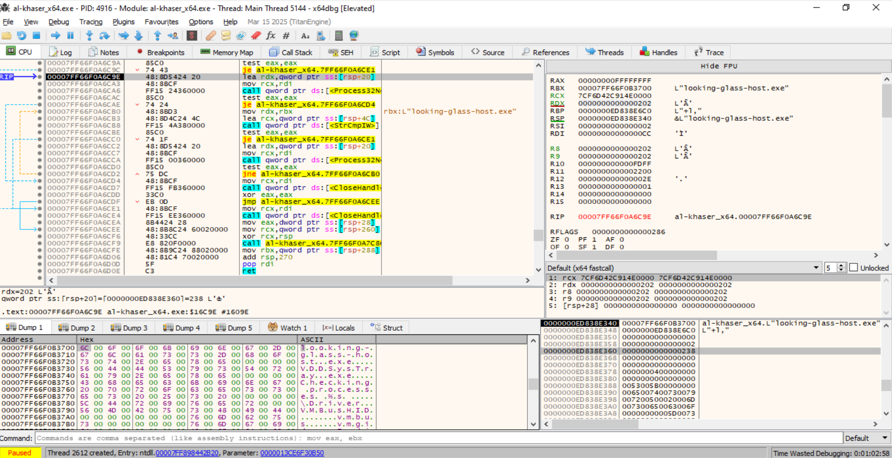
Vemos que al-khaser no ha encontrado el proceso buscado en esta comparación:
EAX = FFFFFFFF
ZF = 0
Tras la llamada a StrCmpIW, el registro EAX contenía el valor 0xFFFFFFFF, equivalente a -1 como entero con signo. Este resultado distinto de cero indica que el nombre del proceso enumerado no coincidía con el indicador looking-glass-host.exe.
La instrucción test eax, eax estableció posteriormente el indicador ZF a cero. Por este motivo, no se tomó el salto condicional je correspondiente a la detección del proceso. La ejecución continuó con Process32NextW para obtener y comparar la siguiente entrada de la instantánea de procesos.
Tras una comparación sin coincidencia, al-khaser continúa el recorrido mediante Process32NextW:
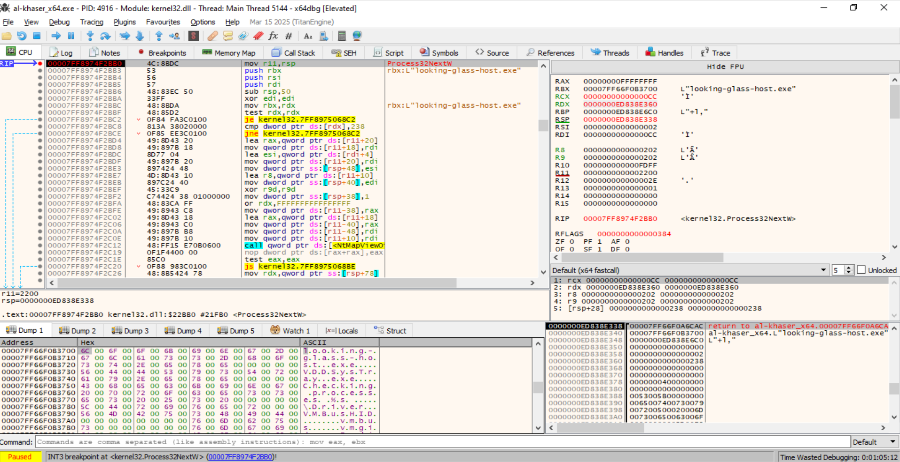
En la entrada de la función se observan:
RCX = 0xCC
RDX = 0x000000ED838E360
RBX -> "looking-glass-host.exe"
Su interpretación es:
Process32NextW(
0xCC, // handle de la instantánea
0x000000ED838E360 // estructura PROCESSENTRY32W
);
En esta dirección aparecerá el nuevo valor de szExeFile:
0x000000ED838E360 + 0x2C = 0x000000ED838E38C
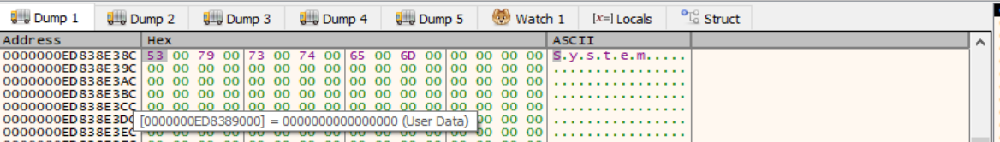
Vemos que tras llamar a Process32NextW, la estructura contiene:
System
El cambio de contenido demuestra que Process32NextW actualiza la estructura con cada nueva entrada y que al-khaser recorre secuencialmente los procesos activos del sistema.
Como conclusión, el análisis dinámico de la técnica Enumerar procesos en ejecución permitió verificar que al-khaser crea una instantánea de los procesos activos mediante CreateToolhelp32Snapshot con el indicador TH32CS_SNAPPROCESS, obtiene las entradas con Process32FirstW y continúa el recorrido con Process32NextW. Los nombres recuperados en el campo szExeFile se comparan mediante StrCmpIW con distintos indicadores asociados a entornos virtualizados o herramientas de análisis. Las evidencias observadas confirman que la herramienta recorre secuencialmente la lista de procesos y utiliza el resultado de las comparaciones como mecanismo de detección ambiental.
Nota sobre técnicas complementarias
Por razones de alcance y para evitar la repetición de contenidos, esta memoria no desarrolla experimentalmente todas las técnicas pertenecientes a esta categoría. No obstante, las siguientes técnicas se encuentran documentadas y demostradas en el repositorio general del proyecto, donde pueden consultarse su fundamento teórico, implementación, procedimiento de análisis y evidencias obtenidas:
- Técnica 2: Detectar procesos de VirtualBox.
- Técnica 3: Detectar procesos de VMware.
- Técnica 4: Detectar herramientas de análisis y procesos de sandbox
Estos contenidos se ofrecen como material técnico complementario y forman parte del trabajo práctico realizado durante el desarrollo del proyecto, aunque sus demostraciones completas no se reproducen en el presente documento.
Ampliación y evidencias completas: ficha
05-wmi.md. El repositorio conserva capturas adicionales, herramientas, código y secuencias no incluidas en la memoria.
Windows Management Instrumentation (WMI) es una infraestructura de administración incluida en los sistemas operativos Windows que permite consultar, supervisar y modificar numerosos elementos del sistema. A través de WMI es posible obtener información sobre el hardware, el sistema operativo, los procesos, los dispositivos instalados, las interfaces de red, la BIOS, los discos, los usuarios o los servicios.
Aunque WMI es una tecnología legítima utilizada por administradores, herramientas de inventario y soluciones de monitorización, también puede ser empleada por malware para realizar tareas de reconocimiento, evasión y ejecución. En el contexto del anti-análisis, una muestra puede ejecutar consultas WMI para determinar si se encuentra dentro de una máquina virtual, una sandbox o un entorno de laboratorio.
Las consultas se realizan normalmente mediante WQL —WMI Query Language—, un lenguaje similar a SQL que permite solicitar información a las distintas clases WMI. Algunos ejemplos habituales son:
SELECT * FROM Win32_Processor
SELECT * FROM Win32_ComputerSystem
SELECT * FROM Win32_BIOS
SELECT * FROM Win32_NetworkAdapterConfiguration
Estas consultas permiten recuperar propiedades concretas del equipo, como el número de núcleos del procesador, el tamaño del disco, el fabricante del sistema, el modelo del dispositivo, la dirección MAC o la versión de la BIOS. El malware compara posteriormente los valores obtenidos con una serie de indicadores asociados a entornos virtualizados.
Entre los principales elementos que pueden analizarse mediante WMI se encuentran los siguientes:
BIOS.Plug and Play.MAC de los adaptadores de red.Por ejemplo, una muestra puede consultar la clase Win32_ComputerSystem y comprobar si las propiedades Manufacturer o Model contienen cadenas como VMware, VirtualBox o innotek GmbH. También puede consultar Win32_BIOS para buscar valores como VBOX, QEMU, BOCHS o PARALLELS.
De forma similar, mediante la clase Win32_NetworkAdapterConfiguration, el malware puede recuperar las direcciones MAC del sistema y comparar sus primeros bytes con prefijos asignados habitualmente a determinados hipervisores. Entre ellos se encuentran 08:00:27, asociado a VirtualBox, y distintos prefijos utilizados por VMware, como 00:05:69, 00:0C:29, 00:1C:14 o 00:50:56.
La técnica también puede emplearse para detectar configuraciones de laboratorio poco realistas. Una máquina con un único núcleo, un disco de tamaño reducido, números de serie vacíos o ausencia de determinados sensores puede ser interpretada como una máquina virtual o una sandbox. No obstante, estas comprobaciones no son determinantes de forma aislada, ya que algunos equipos físicos pueden presentar características similares.
Además de recopilar información, WMI permite ejecutar acciones sobre el sistema. Una muestra puede utilizar la clase Win32_Process y su método Create para iniciar nuevos procesos. Esta forma de ejecución puede dificultar el seguimiento del árbol de procesos cuando la sandbox depende exclusivamente de la interceptación de funciones tradicionales como CreateProcessInternalW dentro del proceso analizado.
WMI también puede utilizarse para crear tareas programadas mediante la clase Win32_ScheduledJob. Sin embargo, este mecanismo se encuentra ligado al antiguo comando AT y presenta importantes limitaciones en las versiones modernas de Windows, por lo que su uso es menos frecuente.
Otra variante consiste en consultar información temporal del sistema. Mediante la propiedad LastBootUpTime de la clase Win32_OperatingSystem, el malware puede calcular el tiempo de actividad del equipo. Un tiempo demasiado corto puede indicar que la sandbox acaba de iniciarse, mientras que un tiempo excesivamente largo o incoherente puede revelar que la máquina virtual ha sido restaurada desde un snapshot antiguo.
De forma similar, la propiedad TimeOfLastReset de Win32_NetworkAdapter permite comprobar cuándo se reinició por última vez un adaptador de red. Los valores anómalos pueden utilizarse como indicio adicional de restauración de snapshots o manipulación del entorno.
Desde el punto de vista técnico, la interacción nativa con WMI suele realizarse mediante interfaces COM. El flujo general incluye la inicialización de COM, la creación de una instancia de IWbemLocator, la conexión con un espacio de nombres como ROOT\CIMV2, la ejecución de la consulta mediante IWbemServices::ExecQuery y la recuperación de los resultados mediante objetos como IEnumWbemClassObject e IWbemClassObject.
El uso de WMI puede identificarse durante el análisis estático mediante la presencia de funciones, interfaces, clases o cadenas relacionadas con esta infraestructura. Algunos indicadores relevantes son:
CoInitialize
CoInitializeEx
CoCreateInstance
IWbemLocator
IWbemServices
ExecQuery
ExecMethod
ExecMethodAsync
ROOT\CIMV2
Win32_Processor
Win32_ComputerSystem
Win32_BIOS
Win32_Process
También pueden encontrarse consultas WQL completas embebidas en el binario o construidas dinámicamente durante la ejecución.
En PowerShell, la misma información puede obtenerse mediante cmdlets como Get-WmiObject o Get-CimInstance. Por ejemplo:
Get-CimInstance -ClassName Win32_BIOS
Get-CimInstance -ClassName Win32_ComputerSystem
Get-CimInstance -ClassName Win32_Processor
En consecuencia, la técnica WMI debe entenderse como un mecanismo versátil que permite al malware combinar reconocimiento del entorno, detección de virtualización, comprobación de snapshots y ejecución de procesos. Su principal ventaja reside en que ofrece acceso uniforme a una gran cantidad de información del sistema mediante una única infraestructura de administración.
Sin embargo, sus resultados deben interpretarse conjuntamente con otras comprobaciones. La presencia de un solo indicador, como un disco pequeño o un número reducido de núcleos, no demuestra por sí sola que el sistema sea virtual. Por ello, las muestras más avanzadas suelen combinar varias consultas WMI con técnicas basadas en registro, procesos, archivos, hardware y temporización antes de modificar su comportamiento o finalizar la ejecución.
Vamos a analizar la consulta del número de serie de la BIOS mediante WMI, que es distinta de las comprobaciones del registro o de las tablas SMBIOS. La secuencia que buscamos es:
ROOT\CIMV2
↓
SELECT * FROM Win32_BIOS
↓
IWbemServices::ExecQuery
↓
IEnumWbemClassObject::Next
↓
IWbemClassObject::Get(L"SerialNumber")
↓
comparación con indicadores de virtualización
↓
resultado booleano
Al-khaser incluye esta técnica como serial_number_bios_wmi: consulta Win32_BIOS, recupera la propiedad SerialNumber y analiza el texto obtenido buscando valores asociados con entornos virtualizados. La clase Win32_BIOS representa los atributos de la BIOS visibles para Windows. Reiniciamos Al-khaser y en x64dbg buscamos:
CPU → clic derecho → Search for
→ Current Module
→ String references
SerialNumber from BIOS
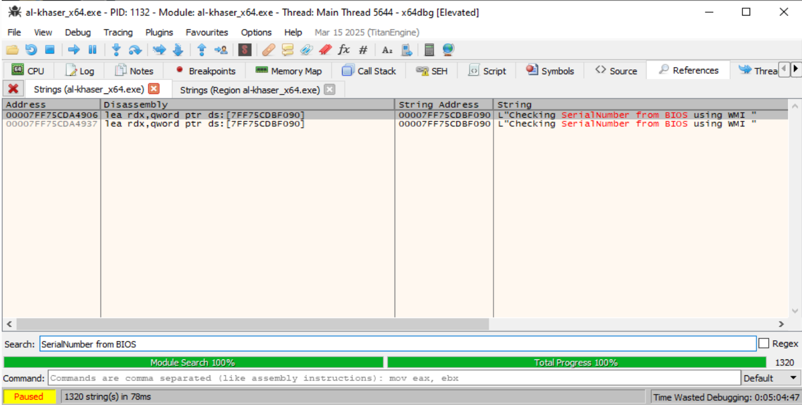
Las dos referencias están muy próximas, separadas por 0x31 bytes, por lo que probablemente pertenecen al mismo bloque de control o a dos rutas adyacentes de impresión. No conviene asumir todavía cuál conduce a la comprobación real. La primera llamada tras el lea rdx será normalmente la función de impresión. No es la comprobación de BIOS.
Ya podemos afirmar que:
Sin embargo, todavía no se ve:
Colocamos un breakpoint directamente en la entrada de la función: 00007FF75CDADF500. Para ello hacemos doble clic en la instrucción:
call al-khaser_x64.7FF75CDADF500
Colocamos el Breakpoint. Eliminamos los puntos de ruptura anteriores, reiniciamos al-khaser, y ejecutamos con F9:
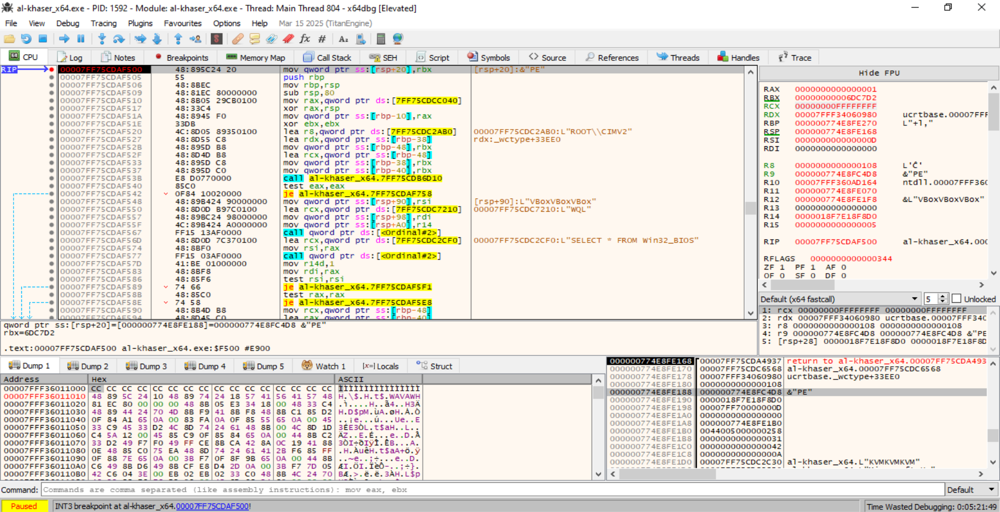
Hemos entrado en la función correcta para consultar el número de serie de la BIOS mediante WMI:
al-khaser_x64+ADF500
La función situada en al-khaser_x64+ADF500 inicializa una conexión WMI con el namespace ROOT\CIMV2. Posteriormente crea dos cadenas BSTR: WQL como lenguaje de consulta y SELECT * FROM Win32_BIOS como sentencia destinada a enumerar la información de la BIOS expuesta al sistema operativo. Las asignaciones se validan antes de preparar la llamada a IWbemServices::ExecQuery. Esta captura confirma la consulta de la clase Win32_BIOS, aunque todavía no muestra la recuperación ni el análisis de la propiedad SerialNumber.
Colocamos un breakpoint inmediatamente después de call r10 y ejecutamos con F9:
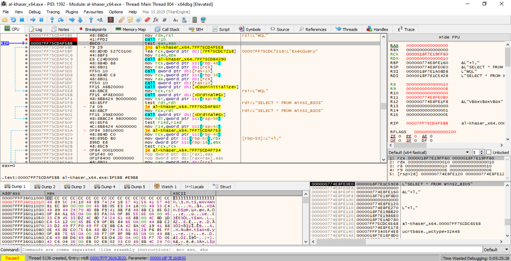
Estamos justo después de ejecutar IWbemServices::ExecQuery para la BIOS. Comprobamos que la consulta de la BIOS mediante WMI se ha ejecutado correctamente.
La llamada a IWbemServices::ExecQuery se ejecuta utilizando el lenguaje WQL y la consulta SELECT * FROM Win32_BIOS. Tras la llamada, EAX contiene 0x00000000, correspondiente a S_OK. Asimismo, la variable local situada en [RBP-0x38] contiene un puntero no nulo a un objeto IEnumWbemClassObject. Esto confirma que la consulta WMI se ha completado correctamente y que al-khaser dispone de un enumerador válido para recuperar las propiedades de la BIOS.
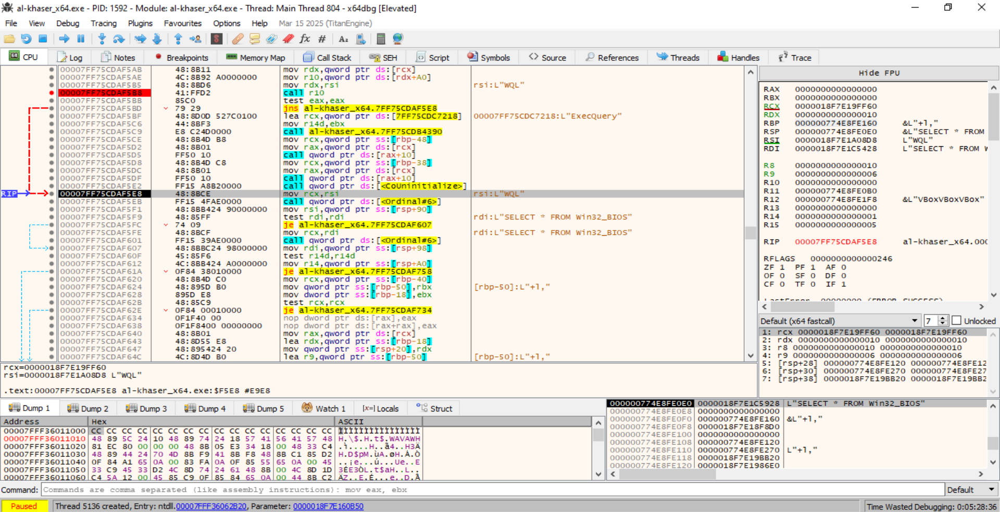
Esta captura confirma que ExecQuery ha terminado correctamente y que el flujo entra ahora en la enumeración de los objetos Win32_BIOS.
Tras completarse correctamente IWbemServices::ExecQuery, la rutina libera las cadenas BSTR utilizadas para el lenguaje WQL y la consulta SELECT * FROM Win32_BIOS. Posteriormente recupera desde la variable local [RBP-0x40] un puntero válido a IEnumWbemClassObject. El código inicializa una variable destinada a recibir un objeto IWbemClassObject y otra para almacenar el número de resultados, comenzando así la preparación de una llamada a IEnumWbemClassObject::Next. Esta secuencia confirma que Al-khaser procede a recorrer los objetos BIOS devueltos por WMI.
ADF620 mov rcx,qword ptr [rbp-40]
Ese puntero no contiene aún el número de serie. Es un objeto IEnumWbemClassObject que permite recorrer los resultados de:
SELECT * FROM Win32_BIOS
Ver el objeto devuelto por Next:
mov rax,[rcx]
lea rdx,[rbp-18]
mov [rsp+20],rdx
lea r9,[rbp-50]
...
call qword ptr [...]
Esa llamada corresponde a algo equivalente a:
enumerator->Next(
timeout,
1,
&biosObject,
&returnedObjects
);
Las variables importantes son:
[RBP-50] → puntero al objeto Win32_BIOS
[RBP-18] → cantidad de objetos devueltos
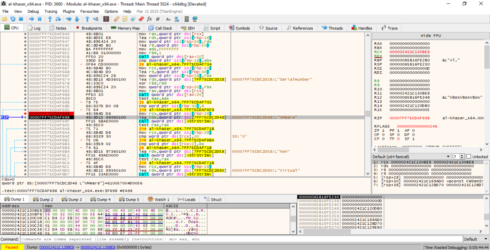
mov rcx,[rbp-28]
Comprobamos que ahora:
RCX = 000002421C130BE8
Hacemos clic derecho sobre RCX y seleccionamos: Follow in Dump. En el Dump, en esa dirección, aparecen los bytes:
30 00 00 00
Interpretados como UTF-16LE:
30 00 → U+0030 → carácter "0"
00 00 → terminador nulo
Por tanto, la propiedad WMI ha devuelto:
SerialNumber = L"0"
Consulta WMI: SELECT * FROM Win32_BIOS
Propiedad obtenida: SerialNumber
Tipo del VARIANT: VT_BSTR
Valor recuperado: "0"
Condición: número de serie exactamente igual a "0"
Resultado: detección positiva
La consulta a la clase Win32_BIOS recupera la propiedad SerialNumber mediante IWbemClassObject::Get. El valor se devuelve en un VARIANT de tipo VT_BSTR, cuyo campo bstrVal apunta a la cadena Unicode 0. La rutina busca inicialmente la subcadena VMware mediante StrStrIW; al no encontrarla, comprueba de forma explícita que el primer carácter sea 0x0030 y que el siguiente sea el terminador nulo 0x0000. Al cumplirse ambas condiciones, el flujo salta a la ruta de detección positiva. De este modo, al-khaser considera sospechosa una BIOS cuyo número de serie sea exactamente 0.
Secuencia completa:
SELECT * FROM Win32_BIOS
↓
Get(L"SerialNumber")
↓
VARIANT de tipo VT_BSTR
↓
SerialNumber = L"0"
↓
comparación del carácter '0'
↓
comprobación del terminador nulo
↓
ZF = 1
↓
salto a ADF71B
La propiedad SerialNumber recuperada mediante WMI contiene la cadena Unicode 0, representada en memoria por los bytes 30 00 00 00. La rutina comprueba que el primer carácter sea 0x0030 y que el siguiente sea el terminador nulo 0x0000. Ambas comparaciones se cumplen, dejando ZF=1. En consecuencia, la instrucción je situada en al-khaser_x64+ADF6B8 toma el salto hacia al-khaser_x64+ADF71B, ruta utilizada para procesar el número de serie como indicador de un entorno potencialmente virtualizado.
Nota sobre técnicas complementarias
Por razones de alcance esta memoria no desarrolla experimentalmente todas las técnicas pertenecientes a esta categoría. No obstante, las siguientes técnicas se encuentran documentadas y demostradas en el repositorio general del proyecto, donde pueden consultarse su fundamento teórico, implementación, procedimiento de análisis y evidencias obtenidas:
Ampliación y evidencias completas: ficha
06-timing.md. El repositorio conserva capturas adicionales, herramientas, código y secuencias no incluidas en la memoria.
La técnica timing es un mecanismo de evasión anti-VM, anti-sandbox y anti-debug basado en la medición del tiempo que tarda el sistema en ejecutar determinadas instrucciones, funciones o bloques de código. Su objetivo es detectar retrasos anómalos provocados por la intervención de un hipervisor, una sandbox o un depurador.
Para ello, el malware puede utilizar funciones e instrucciones como Sleep, GetTickCount, GetTickCount64, QueryPerformanceCounter, RDTSC, RDTSCP o CPUID. También puede comparar varias fuentes temporales para identificar inconsistencias entre ellas.
Si el tiempo medido supera un umbral esperado, o si un retardo ha sido acelerado artificialmente, la muestra puede interpretar que se encuentra en un entorno de análisis. Como respuesta, puede finalizar su ejecución, retrasar su actividad, ocultar su funcionalidad o ejecutar un comportamiento alternativo.
Estas comprobaciones deben considerarse heurísticas, ya que la carga del sistema, la planificación de procesos o el hardware utilizado también pueden producir variaciones temporales y generar falsos positivos.
El objetivo general consiste en identificar tres tipos de anomalías:
Sleep.VM Exit, un breakpoint o la ejecución paso a paso.A continuación, se muestra un resumen visual de las principales técnicas:
timing
|
+-- 1. Detección de aceleración de Sleep
| |
| +-- Sleep
| +-- SleepEx
| +-- NtDelayExecution
| +-- WaitForSingleObject
| +-- Temporizadores de Windows
|
+-- 2. Medición con contadores del sistema
| |
| +-- GetTickCount
| +-- GetTickCount64
|
+-- 3. Medición de alta resolución
| |
| +-- QueryPerformanceCounter
| +-- QueryPerformanceFrequency
|
+-- 4. Medición de ciclos de CPU
| |
| +-- RDTSC
| +-- RDTSCP
| +-- LFENCE
|
+-- 5. Medición del coste de instrucciones sensibles
| |
| +-- CPUID
| +-- Posible VM Exit
|
+-- 6. Comparación entre fuentes temporales
| |
| +-- GetTickCount64
| +-- QueryPerformanceCounter
| +-- RDTSC / RDTSCP
| +-- timeGetTime
| +-- GetSystemTimeAsFileTime
|
+-- 7. Detección de pausas del depurador
|
+-- Breakpoints
+-- Ejecución paso a paso
+-- Instrumentación dinámica
+-- Pausas anómalas entre dos mediciones
La siguiente tabla resume la finalidad de cada variante:
| Técnica | Qué mide | Indicador observado | Posible interpretación |
|---|---|---|---|
Aceleración de Sleep |
Duración real de una función de espera | Tiempo inferior al solicitado | Posible sandbox que acelera o elimina retardos |
GetTickCount / GetTickCount64 |
Milisegundos transcurridos desde el arranque | Intervalo demasiado corto o demasiado largo | Aceleración temporal o pausa de ejecución |
QueryPerformanceCounter |
Tiempo transcurrido con alta resolución | Diferencia superior o inferior al intervalo esperado | Instrumentación, depuración o manipulación temporal |
RDTSC / RDTSCP |
Ciclos de procesador consumidos | Número de ciclos anormalmente elevado | Posible virtualización, interrupción o depuración |
CPUID y VM Exit |
Coste temporal de ejecutar CPUID |
Sobrecoste repetido respecto a una referencia | Posible intervención del hipervisor |
| Comparación entre fuentes | Coherencia entre varios contadores | Resultados incompatibles entre relojes | Manipulación parcial de las fuentes temporales |
| Pausas del depurador | Tiempo consumido por un bloque breve | Intervalo excesivamente elevado | Posible breakpoint, ejecución paso a paso o instrumentación |
Desde el punto de vista del análisis, ninguna de estas comprobaciones debe interpretarse de forma aislada como una confirmación absoluta de virtualización o depuración. La carga del sistema, las interrupciones, la planificación de procesos, el ahorro energético y las características del hardware también pueden alterar las mediciones.
Por ello, una evidencia más sólida requiere repetir las pruebas, utilizar valores estadísticos como la mediana o el percentil 95 y comparar los resultados obtenidos en una máquina física, una máquina virtual y una ejecución bajo depurador.
Usaremos la herramienta educativa timing_lab.cpp. Está desarrollada en C++ y utiliza funciones específicas de Windows e instrucciones disponibles en procesadores de arquitectura x86 y x64. Para reproducir el laboratorio se recomienda compilarla como ejecutable de 64 bits, en modo Release y con optimizaciones activadas.
El objetivo de esta prueba es comprobar si timing_lab puede detectar que una función de espera ha sido acelerada u omitida. Para ello, se comparan dos ejecuciones:
Sleep se ejecuta normalmente.Sleep se neutraliza mediante x64dbg.La segunda ejecución reproduce experimentalmente el comportamiento de una sandbox que elimina o reduce los retardos para acelerar el análisis. Por tanto, la prueba no demuestra que la máquina virtual empleada esté manipulando el tiempo, sino que la herramienta es capaz de detectar dicha alteración cuando se introduce de forma controlada.
La prueba se ejecuta inicialmente sin modificar el flujo del programa:
timing_lab.exe --sleep --sleep-ms 5000 --csv sleep_normal.csv
La herramienta registra una instantánea temporal antes de invocar Sleep, solicita una espera de 5000 milisegundos y obtiene una segunda instantánea al finalizar. Para medir el intervalo utiliza simultáneamente:
GetTickCount.GetTickCount64.QueryPerformanceCounter.RDTSC.En la ejecución de referencia se obtuvieron los siguientes valores:
| Fuente temporal | Tiempo observado |
|---|---|
GetTickCount |
5016 ms |
GetTickCount64 |
5016 ms |
QueryPerformanceCounter |
5005,482 ms |
| TSC calibrado | 5005,607 ms |
| Evaluación | Compatible con el retardo solicitado |
Los resultados muestran que las distintas fuentes temporales registraron aproximadamente los 5000 milisegundos solicitados. Por tanto, en esta ejecución no se detectó aceleración ni omisión de la espera.
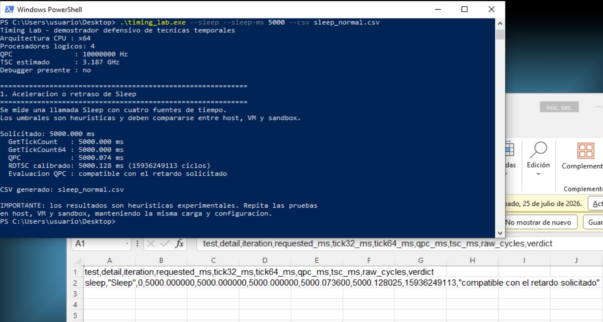
SleepA continuación, se abre timing_lab.exe en x64dbg y se configura la línea de comandos:
"C:\Users\usuario\Desktop\timing_lab.exe" --sleep --sleep-ms 5000 --csv "C:\Users\usuario\Desktop\sleep_acelerado.csv"
Para interceptar la función se establece un punto de ruptura:
bp kernel32.Sleep
En algunos sistemas, kernel32.Sleep actúa como un thunk que transfiere la ejecución a kernelbase.Sleep. Si el primer punto de ruptura no se activa, puede utilizarse:
bp kernelbase.Sleep
Al alcanzar la función, el registro RCX contiene su primer argumento según la convención de llamadas de Windows x64:
RCX = 0000000000001388
El valor hexadecimal 0x1388 equivale a 5000 en decimal, por lo que confirma que la herramienta ha solicitado una espera de cinco segundos.
| Elemento | Valor observado | Interpretación |
|---|---|---|
RIP |
Dirección de kernel32.Sleep |
Punto de entrada de la función |
RCX |
0x1388 |
Retardo solicitado |
0x1388 en decimal |
5000 |
Duración expresada en milisegundos |
[RSP] |
Dirección dentro de timing_lab.exe |
Retorno posterior a la llamada |
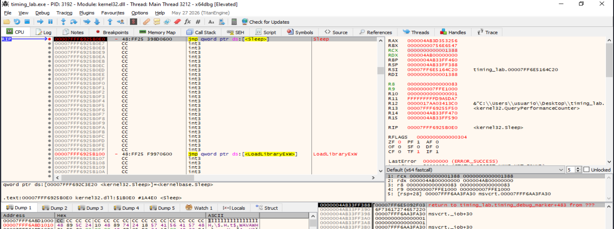
callEl primer valor almacenado en la pila, [RSP], corresponde a la dirección de retorno dentro de timing_lab.exe. Para localizar el código que realiza la llamada se selecciona dicho valor y se utiliza:
Follow QWORD in Disassembler
En la ejecución analizada se localizó la siguiente secuencia:
00007FF6E5092EFD call qword ptr ds:[<&Sleep>]
00007FF6E5092F03 movups xmmword ptr ss:[rsp+70], xmm6
La dirección 00007FF6E5092F03, almacenada en [RSP], coincide con la instrucción inmediatamente posterior al call. Esto confirma que la llamada a Sleep se realiza desde 00007FF6E5092EFD.
Estas direcciones son específicas de la compilación y ejecución analizadas. Pueden variar en otras versiones del ejecutable o debido a mecanismos como ASLR.
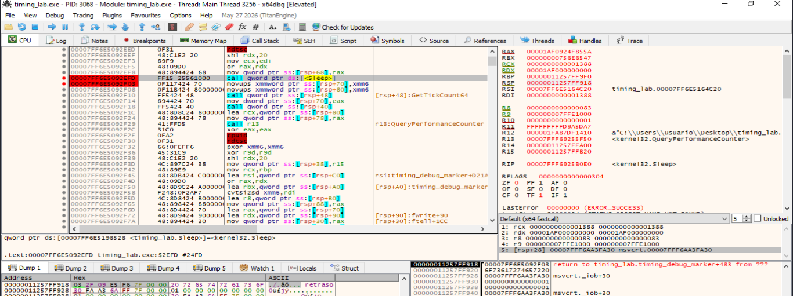
Para simular la aceleración de Sleep, se sustituye únicamente la instrucción:
call qword ptr ds:[<&Sleep>]
por instrucciones NOP. En x64dbg se realiza mediante:
Clic derecho → Binary → Fill with NOPs
Como la llamada ocupa varios bytes, el resultado presenta una secuencia equivalente a:
nop
nop
nop
nop
nop
nop
Esta modificación impide que se invoque Sleep, pero conserva el resto del flujo de ejecución. No es necesario alterar manualmente RIP o RSP, lo que evita corromper la pila del proceso.
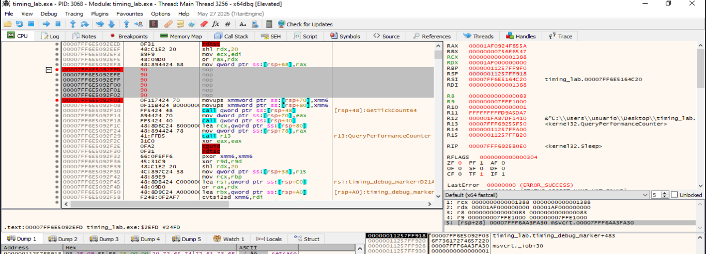
La ejecución en la que se localiza la llamada ya ha quedado afectada por las pausas introducidas durante la depuración. Por este motivo, no debe utilizarse para obtener la medición final.
El parche se guarda mediante:
File → Patch file
La copia modificada se almacena con un nombre diferente:
timing_lab_sleep_bypass.exe
De esta manera se conserva intacto el ejecutable original y se dispone de dos archivos diferenciados:
| Ejecutable | Finalidad |
|---|---|
timing_lab.exe |
Ejecución de referencia |
timing_lab_sleep_bypass.exe |
Simulación de omisión de Sleep |
La copia modificada se ejecuta desde el principio con los mismos parámetros:
"C:\Users\usuario\Desktop\timing_lab_sleep_bypass.exe" --sleep --sleep-ms 5000 --csv "C:\Users\usuario\Desktop\sleep_acelerado.csv"
Para mantener abierta la consola al finalizar puede colocarse un punto de ruptura en una función de terminación, por ejemplo:
bp kernel32.FatalExit
No deben establecerse puntos de ruptura en Sleep, GetTickCount, GetTickCount64 o QueryPerformanceCounter durante esta ejecución. Cualquier pausa situada entre la instantánea inicial y la final incrementaría artificialmente el intervalo y alteraría los resultados.
La ejecución debe continuar sin intervención hasta alcanzar el punto de ruptura final.
La ejecución parcheada produjo los siguientes valores:
| Campo | Resultado |
|---|---|
| Tiempo solicitado | 5000 ms |
GetTickCount |
0 ms |
GetTickCount64 |
0 ms |
QueryPerformanceCounter |
0,0023 ms |
| TSC calibrado | 0,0012 ms |
| Ciclos registrados | 2994 |
| Evaluación | Posible aceleración u omisión |
Aunque la herramienta conserva como referencia los 5000 milisegundos solicitados mediante la opción --sleep-ms, la llamada a Sleep no llega a ejecutarse. En consecuencia, las distintas fuentes temporales registran únicamente el tiempo necesario para continuar con las instrucciones posteriores.
El criterio heurístico aplicado por la herramienta considera una posible aceleración cuando el tiempo observado es inferior al 80 % del retardo solicitado:
Umbral = 5000 ms × 0,80 = 4000 ms
El valor registrado mediante QueryPerformanceCounter, de 0,0023 milisegundos, se encuentra muy por debajo de este umbral. Por ello, el resultado se clasifica como:
posible aceleracion/omision
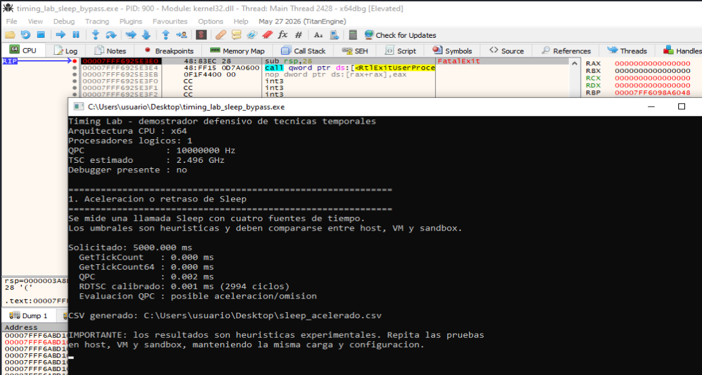
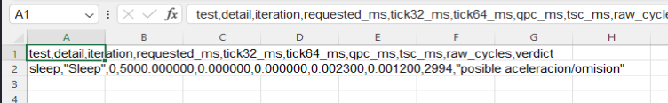
La herramienta genera el archivo:
sleep_acelerado.csv
La fila correspondiente a la prueba contiene:
sleep,"Sleep",0,5000.000000,0.000000,0.000000,0.002300,0.001200,2994,"posible aceleracion/omision"
| Ejecución | QPC observado | Evaluación |
|---|---|---|
| Ejecutable original | 5005,482 ms | Compatible con el retardo solicitado |
| Ejecutable parcheado | 0,0023 ms | Posible aceleración u omisión |
La diferencia entre ambas ejecuciones confirma que la herramienta distingue correctamente entre una espera respetada y una espera eliminada artificialmente.
Conclusión de la prueba: Los resultados obtenidos demuestran que timing_lab puede detectar una alteración artificial de Sleep. La prueba debe interpretarse como una simulación controlada de la técnica y no como evidencia de que la máquina virtual o una sandbox real estén acelerando el tiempo.
Nota sobre técnicas complementarias
Por razones de alcance esta memoria no desarrolla experimentalmente todas las técnicas pertenecientes a esta categoría. No obstante, las siguientes técnicas se encuentran documentadas y demostradas en el repositorio general del proyecto, donde pueden consultarse su fundamento teórico, implementación, procedimiento de análisis y evidencias obtenidas:
Ampliación y evidencias completas: ficha
07-cpu.md. El repositorio conserva capturas adicionales, herramientas, código y secuencias no incluidas en la memoria.
La instrucción CPUID permite obtener información del procesador. Cuando se ejecuta con EAX = 0x40000000, muchos hipervisores devuelven una cadena que
identifica la plataforma virtual. El malware puede comparar ese valor con firmas conocidas y modificar su comportamiento si detecta una máquina virtual.
Registros utilizados:
| Registro | Función |
|---|---|
EAX |
Contiene el valor 0x40000000 antes de ejecutar CPUID |
EBX |
Primera parte del identificador |
ECX |
Segunda parte del identificador |
EDX |
Tercera parte del identificador |
La concatenación de EBX, ECX y EDX forma una cadena de hasta doce
caracteres.
Identificadores de hipervisores:
| Hipervisor | Identificador |
|---|---|
| VMware | VMwareVMware |
| VirtualBox | VBoxVBoxVBox |
| KVM | KVMKVMKVM |
| Hyper-V | Microsoft Hv |
| Xen | XenVMMXenVMM |
| Parallels | prl hyperv |
| bhyve | bhyve bhyve |
Evidencias en análisis estático: Durante el análisis estático deben buscarse:
CPUID.0x40000000.EBX, ECX y EDX hacia memoria.La presencia aislada de CPUID no confirma una técnica anti-VM, ya que también
puede utilizarse para consultar características legítimas del procesador.
Evidencias en análisis dinámico: En el depurador se debe comprobar:
EAX contiene 0x40000000.EBX, ECX y EDX.La evidencia es sólida cuando la cadena identifica un hipervisor y el resultado condiciona la ejecución de la muestra.
Recomendación de firma: Una firma puede combinar:
CPUID
+
0x40000000
+
escritura de EBX, ECX y EDX
+
identificador de hipervisor
No se recomienda basar la detección únicamente en una cadena, ya que puede estar cifrada, fragmentada o modificada por el hipervisor.
Instrucciones y elementos comprobados:
| Técnica | Instrucción o elemento | Finalidad |
|---|---|---|
| Identificador del hipervisor | CPUID con EAX = 0x40000000 |
Obtener la firma del hipervisor |
| Bit de hipervisor | CPUID con EAX = 1 |
Comprobar el bit 31 de ECX |
| Tablas internas | SIDT, SGDT, SLDT |
Consultar IDT, GDT y LDT |
| Instrucciones exóticas | MMX u otras extensiones | Detectar emulación incompleta |
| Instrucciones ilegales | Opcodes no válidos o privilegiados | Analizar la gestión de excepciones |
| Backdoor de VMware | IN, VMXh, puertos VX y VY |
Detectar VMware |
Indicadores de virtualización: Los principales indicadores son:
VMwareVMware, VBoxVBoxVBox o KVMKVMKVM.ECX activado.IDT, GDT o LDT.Detección durante el análisis estático: Durante el análisis estático deben buscarse:
CPUID
0x40000000
0x80000000
SIDT
SGDT
SLDT
VMXh
VMwareVMware
VBoxVBoxVBox
KVMKVMKVM
También deben revisarse comparaciones, manejadores de excepciones y saltos condicionales posteriores.
El objetivo de esta práctica es demostrar dinámicamente cómo Pafish identifica el hipervisor mediante la instrucción CPUID. La prueba se ha ejecutado en una máquina virtual de VirtualBox y se ha seguido con x64dbg.
La demostración debe acreditar cuatro hechos:
CPUID con EAX = 0x40000000.EBX, ECX y EDX devuelven el identificador del hipervisor.VBoxVBoxVBox.El flujo observado es:
CPUID(EAX = 0x40000000)
↓
EBX, ECX y EDX contienen "VBox"
↓
Reconstrucción de "VBoxVBoxVBox"
↓
memcmp con la firma interna de VirtualBox
↓
Coincidencia
↓
Detección positiva
Las direcciones indicadas corresponden al ejecutable
pafish64.exeutilizado en esta práctica. Pueden variar en otras compilaciones.
Como punto de partida se buscaron las referencias a cadenas que contienen el término cpuid. Entre los resultados aparece el texto:
Check hypervisor by checking cpuid hypervisor vendor for known VM vendors
Esta cadena permite localizar la parte de Pafish encargada de comprobar identificadores conocidos de hipervisores.
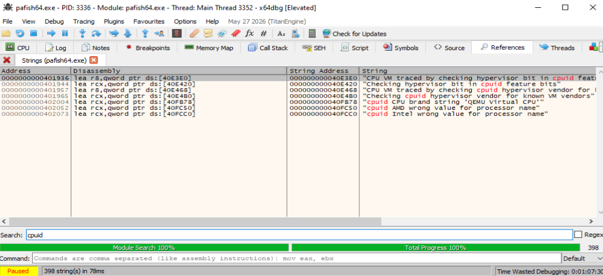
A continuación se buscó el patrón de bytes correspondiente a la instrucción:
0F A2 ; CPUID
La búsqueda devolvió varias apariciones, ya que Pafish utiliza CPUID para diferentes finalidades: fabricante de la CPU, bit de hipervisor, marca del procesador y comprobación del identificador del hipervisor.
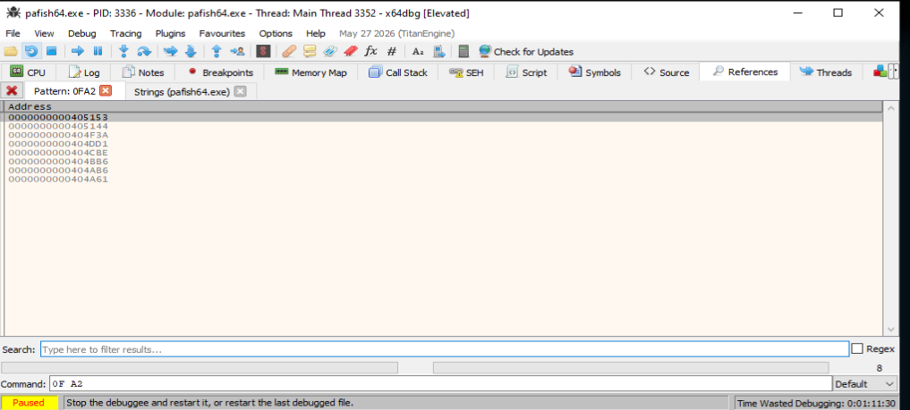
00404BB1 mov eax,40000000h
00404BB6 cpuid
El valor 0x40000000 identifica la hoja utilizada habitualmente para consultar información específica del hipervisor.
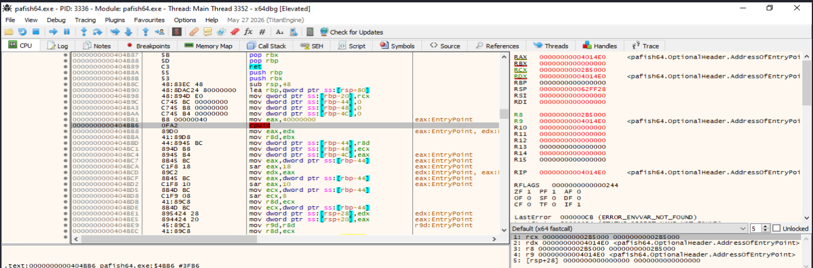
CPUIDSe colocó un breakpoint en:
0x404BB6
Antes de ejecutar la instrucción se verificó que:
EAX = 0x40000000
RIP = 0x404BB6
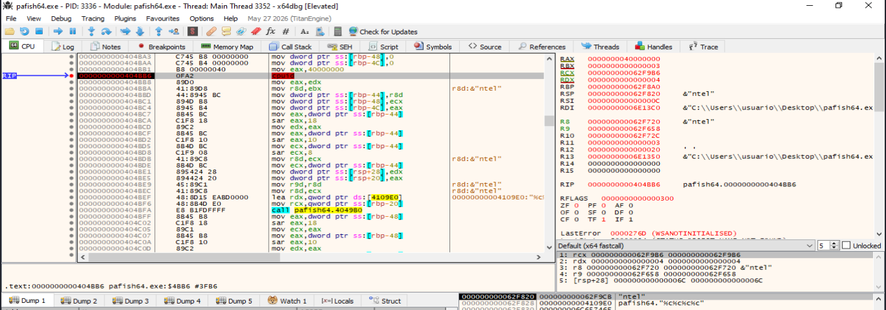
Tras ejecutar una única instrucción, el flujo avanzó a 0x404BB8. Los registros mostraron:
EBX = 0x786F4256
ECX = 0x786F4256
EDX = 0x786F4256
EAX = 0x40000006
El valor 0x786F4256, interpretado según el orden little-endian, corresponde a:
56 42 6F 78 → "VBox"
Por tanto:
EBX + ECX + EDX
= VBox + VBox + VBox
= VBoxVBoxVBox
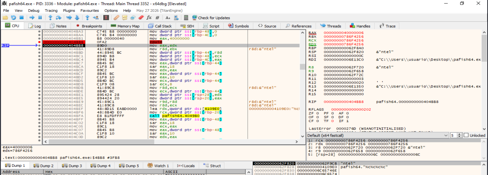
El valor de EAX = 0x40000006 indica la hoja máxima específica del hipervisor disponible en el entorno. No forma parte de la cadena, pero confirma que la consulta ha sido atendida por la capa de virtualización.
Pafish conserva los tres bloques devueltos por CPUID en variables locales:
00404BBD mov dword ptr [rbp-44],r8d
00404BC1 mov dword ptr [rbp-48],ecx
00404BC4 mov dword ptr [rbp-4C],eax
En este punto x64dbg ya interpreta el contenido almacenado como "VBox".
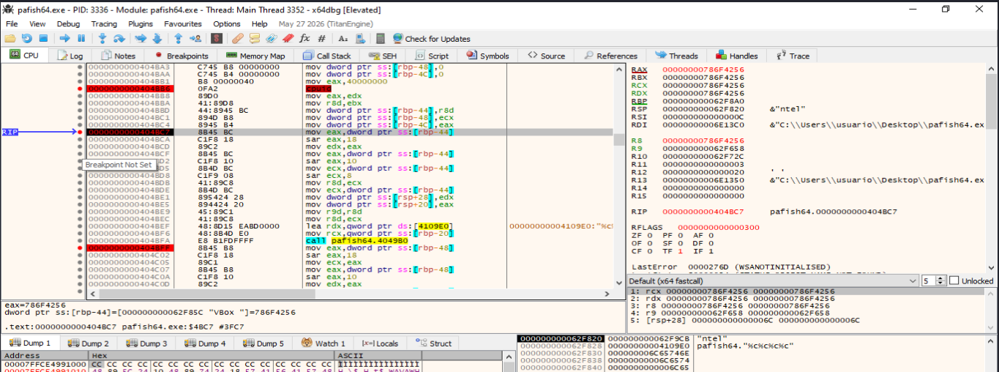
Esta captura demuestra que los valores devueltos por el procesador no son residuales: Pafish los conserva para construir y evaluar posteriormente el identificador.
Pafish convierte cada valor de cuatro bytes en caracteres mediante una rutina de formato. La primera llamada utiliza:
RCX → buffer de destino
RDX → "%c%c%c%c"
R8 → 0x786F4256
La llamada se realiza en:
00404BFA call pafish64.4049B0
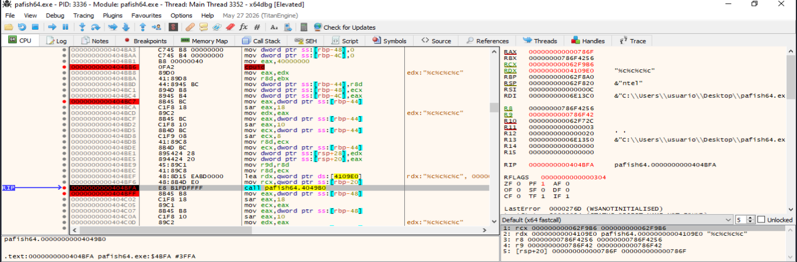
Después de la primera llamada, el buffer contiene:
VBox
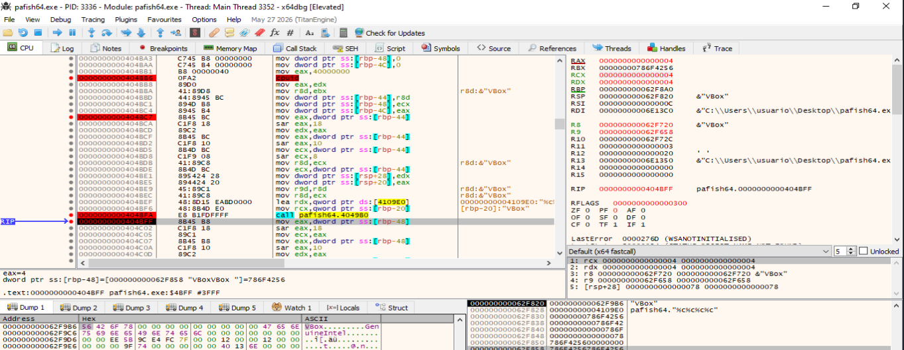
La segunda llamada procesa el valor guardado desde ECX. Tras ejecutarla, el buffer contiene:
VBoxVBox
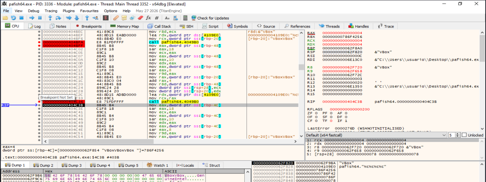
La tercera llamada procesa el último bloque, procedente de EDX. El resultado final es:
VBoxVBoxVBox
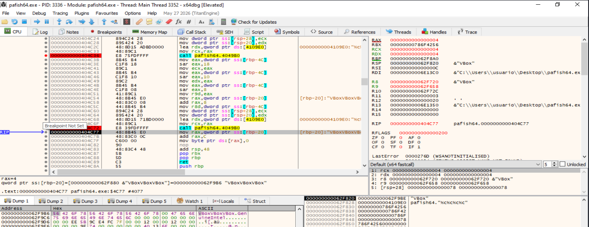
Esta evidencia demuestra que Pafish ha transformado los valores devueltos por CPUID en una cadena utilizable para la detección.
Se buscó la cadena VBoxVBoxVBox dentro del módulo. La firma se encuentra en:
0x410A2A
y es referenciada desde el código de comparación.
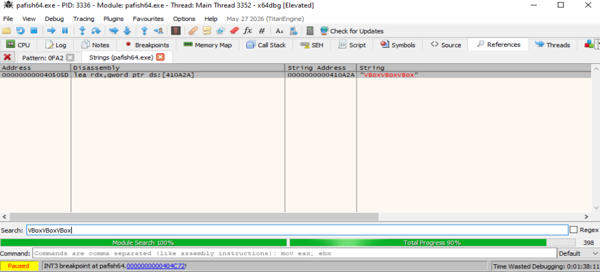
Pafish mantiene una lista de identificadores conocidos, entre ellos:
KVMKVMKVM
Microsoft Hv
VMwareVMware
XenVMMXenVMM
prl hyperv
VBoxVBoxVBox
El programa recorre estas firmas y compara cada una con el identificador obtenido dinámicamente.
El bucle de comparación termina llamando a memcmp en:
00405098 call <JMP.&memcmp>
La longitud utilizada es de doce bytes, que coincide con el tamaño del identificador.
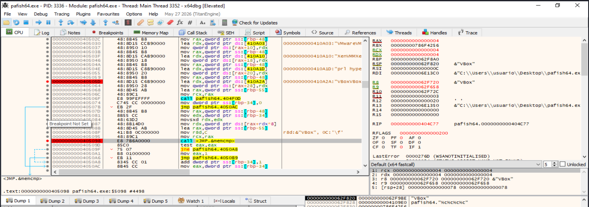
En la iteración correspondiente a VirtualBox, los argumentos antes de memcmp son:
RCX → "VBoxVBoxVBox" ; identificador obtenido
RDX → "VBoxVBoxVBox" ; firma interna
R8 = 0x000000000000000C
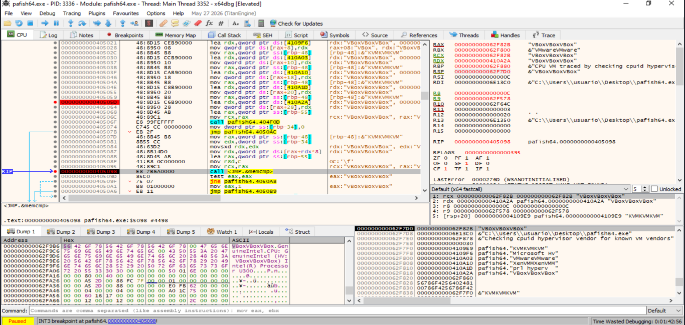
Esta captura es la evidencia principal de que Pafish no se limita a obtener la cadena: la utiliza de forma explícita para clasificar el entorno.
Después de ejecutar memcmp, la ejecución alcanza:
0040509D test eax,eax
0040509F jne 4050A8
004050A1 mov eax,1
El resultado observado es:
EAX = 0
ZF = 1
memcmp devuelve cero cuando ambas cadenas son idénticas. La instrucción test eax,eax activa la bandera cero y, por ello, el salto JNE no se toma. El flujo continúa hacia:
mov eax,1
lo que representa el retorno positivo de la función.
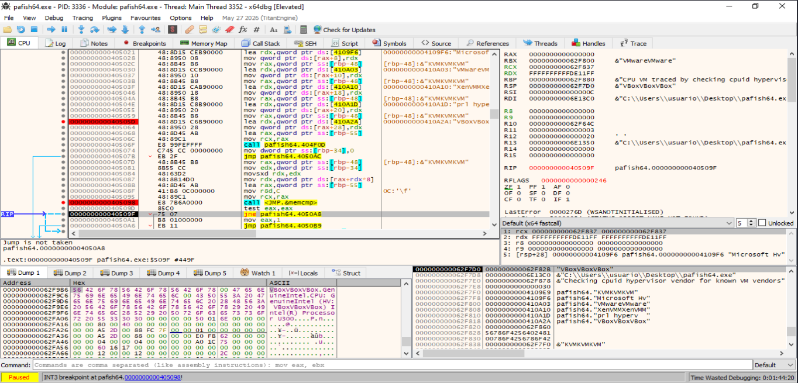
Conclusión de la demostración: La ejecución controlada de Pafish en x64dbg demuestra que la herramienta identifica VirtualBox mediante la hoja 0x40000000 de CPUID. Los registros EBX, ECX y EDX devuelven tres bloques VBox, que Pafish concatena para formar VBoxVBoxVBox.
Posteriormente, el identificador se compara con una lista de firmas internas. La comparación con VBoxVBoxVBox devuelve cero, activa ZF y dirige el flujo hacia la rama positiva. En consecuencia, Pafish determina correctamente que se está ejecutando dentro de un hipervisor conocido.
La demostración puede considerarse completa porque acredita:
Nota sobre técnicas complementarias
Por razones de alcance esta memoria no desarrolla experimentalmente todas las técnicas pertenecientes a esta categoría. No obstante, las siguientes técnicas se encuentran documentadas y demostradas en el repositorio general del proyecto, donde pueden consultarse su fundamento teórico, implementación, procedimiento de análisis y evidencias obtenidas:
Ampliación y evidencias completas: ficha
08-hardware.md. El repositorio conserva capturas adicionales, herramientas, código y secuencias no incluidas en la memoria.
La técnica Hardware comprende el conjunto de comprobaciones mediante las cuales un programa obtiene y analiza información sobre los componentes físicos —o aparentemente físicos— del sistema en el que se ejecuta. En el contexto del análisis de malware, estas comprobaciones se utilizan principalmente para determinar si el código se encuentra en un equipo real o dentro de una máquina virtual, una sandbox automatizada o un laboratorio de análisis.
Los entornos virtualizados deben emular distintos dispositivos, como discos, procesadores, adaptadores gráficos, interfaces de red, controladores de audio y firmware. Esta emulación puede dejar artefactos reconocibles en los nombres de los dispositivos, identificadores de fabricante, controladores instalados, valores devueltos por el firmware o características de los recursos disponibles. El malware puede consultar estos datos y compararlos con valores asociados a plataformas como VMware, VirtualBox, QEMU o Microsoft Hyper-V.
El funcionamiento general de la técnica puede resumirse en las siguientes fases:
Estas verificaciones no siempre buscan una marca explícita de virtualización. Algunas se basan en heurísticas, como una cantidad anormalmente baja de memoria RAM, un disco de poca capacidad, un único procesador lógico o la ausencia de dispositivos habituales. Por tanto, una comprobación aislada no demuestra necesariamente que el programa esté aplicando una técnica de evasión. La detección resulta más fiable cuando se correlacionan varias consultas de hardware con decisiones posteriores en el flujo de ejecución.
Las técnicas Hardware analizan las características de los componentes físicos o emulados del sistema para determinar si el malware se está ejecutando en un equipo real, una máquina virtual o una sandbox. Estas comprobaciones pueden buscar artefactos directos, como nombres de fabricantes asociados a hipervisores, o utilizar indicadores heurísticos, como una cantidad reducida de memoria, almacenamiento o periféricos.
Criterio de clasificación: esta tabla agrupa las técnicas según el componente de hardware examinado. El mecanismo utilizado para obtener la información puede coincidir con otras categorías, como CPU, WMI, Registro o consultas genéricas del sistema operativo.
| Componente analizado | Técnica de detección | Indicador observado | Tipo de detección | Fiabilidad aproximada |
|---|---|---|---|---|
| Disco duro | Comprobación del nombre o modelo del disco | Cadenas como VBOX, VMware, QEMU o VIRTUAL HD |
Directa | Media-alta |
| Disco duro | Comprobación del fabricante o Vendor ID |
Identificadores relacionados con dispositivos virtuales | Directa | Alta cuando el valor está expuesto |
| Almacenamiento | Comprobación de la capacidad del disco | Disco de tamaño muy reducido | Heurística | Baja de forma aislada |
| Memoria RAM | Comprobación de la memoria física instalada | Cantidad de RAM inferior a un umbral | Heurística | Baja de forma aislada |
| Procesador | Comprobación del número de procesadores o núcleos | Uno o pocos procesadores lógicos | Heurística | Baja-media |
| Procesador | Análisis del modelo, fabricante o topología | Valores genéricos, simplificados o incoherentes | Directa o heurística | Media |
| BIOS, UEFI y SMBIOS | Comprobación del fabricante y modelo del sistema | Referencias a VMware, VirtualBox, QEMU u otros hipervisores | Directa | Alta |
| Adaptador gráfico | Comprobación del fabricante, controlador o descripción | Identificadores PCI, controladores o descripciones virtuales | Directa | Media-alta |
| Dispositivo de audio | Comprobación de su presencia y funcionamiento | Ausencia de dispositivo o configuración multimedia mínima | Heurística | Baja |
| Sensores | Comprobación de temperatura, batería u otros sensores | Información inexistente, vacía o no disponible | Heurística | Baja |
| Adaptador de red | Comprobación del fabricante o prefijo MAC | Prefijo asociado a un proveedor de virtualización | Directa | Media |
| Periféricos | Enumeración de USB, cámara, impresoras o monitores | Ausencia o escasa diversidad de dispositivos | Heurística | Media cuando se combina |
| Conjunto del sistema | Correlación de múltiples indicadores | Varios componentes presentan artefactos o recursos anómalos | Compuesta | Alta cuando las evidencias son coherentes |
flowchart TD
A[Inicio de la detección Hardware] --> B[Enumerar componentes del sistema]
B --> C[Almacenamiento]
B --> D[Procesador y memoria]
B --> E[Firmware]
B --> F[Gráficos y red]
B --> G[Periféricos y sensores]
C --> H{¿Existen nombres o identificadores virtuales?}
D --> I{¿Los recursos son anormalmente reducidos?}
E --> J{¿La BIOS o SMBIOS identifica un hipervisor?}
F --> K{¿Los dispositivos pertenecen a un proveedor virtual?}
G --> L{¿Faltan dispositivos habituales?}
H --> M[Registrar indicador directo]
J --> M
K --> M
I --> N[Registrar indicador heurístico]
L --> N
M --> O[Correlacionar resultados]
N --> O
O --> P{¿Se supera el umbral de sospecha?}
P -- No --> Q[Continuar la ejecución]
P -- Sí --> R[Modificar o detener el comportamiento]
El objetivo de este análisis dinámico es demostrar que al-khaser enumera los dispositivos de almacenamiento presentes en el sistema, recupera su identificador hardware y busca en él cadenas asociadas a plataformas de virtualización.
Aunque el título de la técnica hace referencia al nombre y al modelo del disco, la implementación analizada no solicita directamente el nombre amigable mediante SPDRP_FRIENDLYNAME. En su lugar, consulta la propiedad:
SPDRP_HARDWAREID = 0x00000001
El identificador hardware puede contener información sobre el tipo de dispositivo, el fabricante virtual, el producto y su revisión. En el entorno analizado apareció la cadena:
SCSI\DiskVBOX__________HARDDISK_1.0
La presencia de VBOX permite asociar el dispositivo con Oracle VirtualBox.
Las llamadas relevantes se localizaron mediante la búsqueda de llamadas intermodulares de al-khaser_x64.exe.
| Función | Finalidad |
|---|---|
SetupDiGetClassDevsW |
Obtener el conjunto de dispositivos pertenecientes a la clase de unidades de disco |
SetupDiEnumDeviceInfo |
Enumerar cada dispositivo del conjunto |
SetupDiGetDeviceRegistryPropertyW |
Consultar el tamaño necesario y recuperar SPDRP_HARDWAREID |
StrStrIW |
Buscar cadenas de virtualización sin distinguir mayúsculas y minúsculas |
SetupDiDestroyDeviceInfoList |
Liberar el conjunto de información de dispositivos |
En la ejecución documentada se observaron, entre otras, las siguientes instrucciones de llamada:
0x00007FF71C84F323 SetupDiGetClassDevsW
0x00007FF71C84F363 SetupDiEnumDeviceInfo
0x00007FF71C84F3A7 SetupDiGetDeviceRegistryPropertyW
0x00007FF71C84F40F SetupDiGetDeviceRegistryPropertyW
0x00007FF71C84F428 StrStrIW
La primera API relevante es SetupDiGetClassDevsW. En la convención de llamada x64 de Windows, los cuatro primeros argumentos se reciben mediante RCX, RDX, R8 y R9.
Durante la ejecución se observaron los siguientes valores:
| Registro | Valor | Interpretación |
|---|---|---|
RCX |
0x00007FF71C85A980 |
Puntero al GUID de la clase |
RDX |
0x0 |
No se proporciona enumerador |
R8 |
0x0 |
No se proporciona ventana |
R9 |
0x2 |
DIGCF_PRESENT |
El contenido apuntado por RCX era:
67 E9 36 4D 25 E3 CE 11 BF C1 08 00 2B E1 03 18
Interpretado según el orden little-endian, corresponde al GUID:
{4D36E967-E325-11CE-BFC1-08002BE10318}
Este valor identifica GUID_DEVCLASS_DISKDRIVE. Por tanto, la llamada equivale conceptualmente a:
SetupDiGetClassDevsW(
&GUID_DEVCLASS_DISKDRIVE,
nullptr,
nullptr,
DIGCF_PRESENT
);
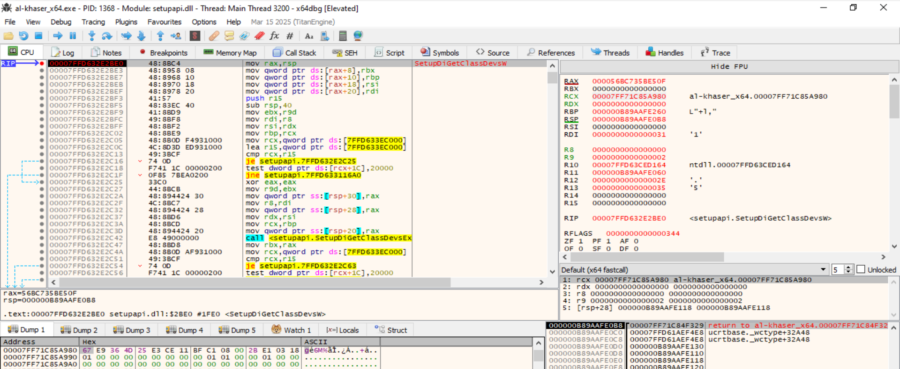
SetupDiGetClassDevsW devolvió un identificador HDEVINFO, que posteriormente fue utilizado como primer argumento de SetupDiEnumDeviceInfo.
En la primera iteración se observaron:
| Registro | Valor | Interpretación |
|---|---|---|
RCX |
0x000002913ABA3EF0 |
Identificador HDEVINFO |
RDX |
0x0 |
Índice del primer dispositivo |
R8 |
0x000000B89AAFE110 |
Puntero a SP_DEVINFO_DATA |
El uso del índice cero demuestra que la muestra comienza enumerando el primer dispositivo del conjunto. La misma rutina puede repetirse con índices sucesivos cuando existen varios dispositivos.
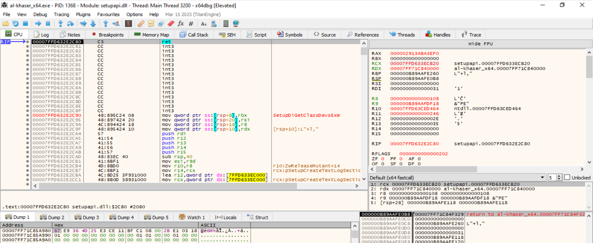
SPDRP_HARDWAREIDLa muestra invoca dos veces SetupDiGetDeviceRegistryPropertyW. La primera llamada no proporciona un buffer de salida. Su finalidad es determinar el tamaño necesario para almacenar la propiedad.
En la entrada de la función se observaron:
| Argumento | Ubicación | Valor |
|---|---|---|
DeviceInfoSet |
RCX |
0x000002913ABA3EF0 |
DeviceInfoData |
RDX |
0x000000B89AAFE110 |
Property |
R8D |
0x1 |
PropertyRegDataType |
R9 |
0x000000B89AAFE108 |
PropertyBuffer |
[RSP+28] |
0x0 |
El valor R8D = 1 identifica la propiedad SPDRP_HARDWAREID. La presencia de un buffer nulo confirma que se trata de una consulta preparatoria.
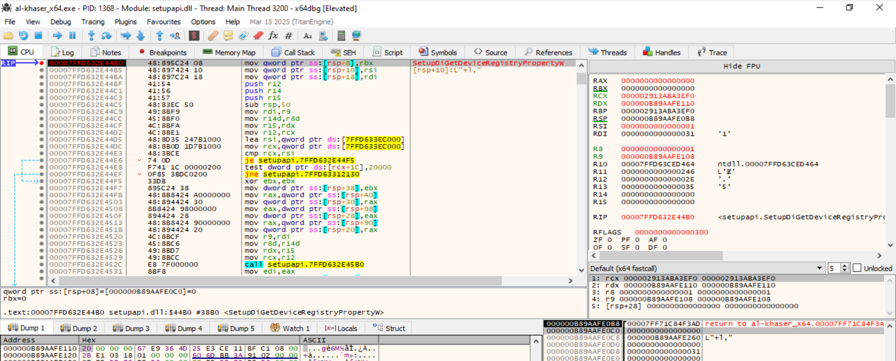
En la segunda invocación de SetupDiGetDeviceRegistryPropertyW, al-khaser proporciona memoria válida para recibir la propiedad.
Los valores observados fueron:
| Argumento | Ubicación | Valor |
|---|---|---|
Property |
R8D |
0x1 |
PropertyBuffer |
[RSP+28] |
0x000002913AB98B80 |
PropertyBufferSize |
[RSP+30] |
0x138 |
RequiredSize |
[RSP+38] |
0x000000B89AAFE104 |
El tamaño 0x138 equivale a 312 bytes. Tras el retorno, el buffer contenía una lista Unicode de identificadores hardware. El primer valor relevante era:
SCSI\DiskVBOX__________HARDDISK_1.0
VBOXUna vez recuperado el identificador, la muestra utiliza StrStrIW para buscar cadenas relacionadas con entornos virtualizados. En la llamada analizada se observaron:
| Registro | Contenido |
|---|---|
RCX |
L"SCSI\\DiskVBOX__________HARDDISK_1.0" |
RDX |
L"vbox" |
La función StrStrIW realiza una búsqueda Unicode sin distinguir mayúsculas y minúsculas. Por ello, la subcadena vbox coincide con el valor VBOX presente en el identificador.
La función devolvió:
RAX = 0x000002913AB98B92
Este valor apunta directamente al inicio de:
VBOX__________HARDDISK_1.0
La dirección inicial del buffer era:
0x000002913AB98B80
La diferencia entre ambos punteros es:
0x000002913AB98B92 - 0x000002913AB98B80 = 0x12
El desplazamiento 0x12 equivale a 18 bytes o nueve caracteres UTF-16. Esos nueve caracteres corresponden exactamente a:
SCSI\Disk
Por tanto, el valor devuelto por StrStrIW apunta al comienzo de VBOX, confirmando que la búsqueda tuvo éxito.
Tras el retorno de StrStrIW, al-khaser ejecuta:
test rax, rax
jne 0x00007FF71C84F496
La lógica es:
RAX = 0 → no se encontró el indicador
RAX != 0 → se encontró el indicador
En la ejecución documentada:
RAX = 0x000002913AB98B92
ZF = 0
Como RAX es distinto de cero, test rax, rax desactiva el Zero Flag y la instrucción jne dirige el flujo hacia la rama de detección positiva.
El código visible muestra además las búsquedas alternativas de:
vmware
qemu
virtual
Estas comparaciones solo son necesarias cuando la búsqueda anterior no produce una coincidencia. En este caso, la detección de VBOX permite saltar directamente a la ruta positiva.
SetupDiGetClassDevsW
↓
GUID_DEVCLASS_DISKDRIVE + DIGCF_PRESENT
↓
SetupDiEnumDeviceInfo
↓
SetupDiGetDeviceRegistryPropertyW
↓
SPDRP_HARDWAREID
↓
SCSI\DiskVBOX__________HARDDISK_1.0
↓
StrStrIW(buffer, "vbox")
↓
RAX = dirección de "VBOX"
↓
test rax, rax
↓
ZF = 0
↓
jne → rama de detección positiva
Conclusión: La técnica queda demostrada de forma completa. Al-khaser identifica VirtualBox mediante el valor VBOX presente en el identificador hardware del disco y utiliza el resultado para modificar su flujo de ejecución.
Desde un punto de vista terminológico, la denominación más precisa sería comprobación del identificador hardware del disco. No obstante, puede mantenerse el título “comprobación del nombre y modelo del disco”, siempre que se aclare que la evidencia procede de SPDRP_HARDWAREID y que dicha propiedad incorpora información identificativa del fabricante virtual y del producto.
Nota sobre técnicas complementarias
Por razones de alcance esta memoria no desarrolla experimentalmente todas las técnicas pertenecientes a esta categoría. No obstante, las siguientes técnicas se encuentran documentadas y demostradas en el repositorio general del proyecto, donde pueden consultarse su fundamento teórico, implementación, procedimiento de análisis y evidencias obtenidas:
Ampliación y evidencias completas: ficha
09-human-interaction.md. El repositorio conserva capturas adicionales, herramientas, código y secuencias no incluidas en la memoria.
La técnica Human Interaction es una técnica de evasión orientada a identificar la presencia de actividad humana en el sistema comprometido. Su finalidad no es verificar únicamente si el programa se ejecuta dentro de una máquina virtual, sino evaluar si el entorno presenta las características propias de un equipo utilizado de manera habitual.
Una sandbox tradicional suele ejecutar automáticamente una muestra durante un periodo limitado. En este contexto, puede ocurrir que no se mueva el ratón, no se pulse ninguna tecla, no se abran documentos, no exista un historial de navegación suficiente o no se interactúe correctamente con las ventanas mostradas por el programa. Estas condiciones permiten que el malware diferencie un entorno automatizado de un sistema real.
El funcionamiento general de la técnica puede dividirse en cuatro fases:
Recopilación de indicadores de actividad.
El malware consulta información relacionada con el uso del sistema, como la posición del cursor, el tiempo transcurrido desde la última entrada, los documentos recientes o el historial del navegador.
Evaluación de los indicadores.
Los datos obtenidos se comparan con uno o varios criterios predefinidos. Por ejemplo, la muestra puede comprobar si el ratón ha cambiado de posición, si existen suficientes archivos recientes o si el usuario ha interactuado con una ventana.
Decisión sobre el entorno.
Si los indicadores se consideran compatibles con un usuario real, el malware continúa su ejecución. Si la actividad es inexistente, escasa o demasiado predecible, puede interpretar que está siendo analizado.
Modificación del flujo de ejecución.
Como respuesta, la muestra puede terminar, entrar en espera, ejecutar únicamente código señuelo, solicitar nuevas interacciones o evitar la descarga y ejecución de la carga maliciosa.
Por tanto, el objetivo de esta técnica es establecer una condición de activación basada en la actividad humana. La funcionalidad maliciosa queda supeditada a que el entorno demuestre un nivel de uso considerado legítimo.
Aunque ambos conceptos aparecen relacionados, no son completamente equivalentes:
En una taxonomía de evasión de malware, Human Interaction resulta una denominación adecuada cuando la ficha se centra en la comprobación de la presencia, actividad o participación del usuario.
El principio de esta técnica se basa en una diferencia operativa:
Un equipo utilizado de forma habitual genera actividad, historial y patrones de interacción; un entorno automatizado de análisis puede carecer de ellos o reproducirlos de forma limitada.
Esta diferencia no constituye una prueba absoluta. Un equipo real puede permanecer inactivo y una sandbox avanzada puede simular actividad. Por ello, las muestras más sofisticadas combinan distintas comprobaciones y no dependen de un único indicador.
Su efectividad depende de la calidad de las comprobaciones. Una condición demasiado estricta puede impedir que el malware se ejecute incluso en la máquina de una víctima real. Por el contrario, una condición demasiado simple puede ser superada fácilmente mediante movimientos simulados del ratón o la generación artificial de eventos de entrada.
Además, las API empleadas para obtener información del usuario también pueden utilizarse legítimamente. Por este motivo, la presencia aislada de una función como GetCursorPos o GetLastInputInfo no demuestra por sí sola la existencia de una técnica de evasión. Es necesario analizar su contexto, la secuencia de ejecución y la decisión que toma el programa con los datos obtenidos.
La comprobación del movimiento del ratón es una técnica de detección de interacción humana utilizada para diferenciar un equipo usado de forma normal de un entorno automatizado de análisis. Su fundamento es que, durante una sesión real, el cursor suele cambiar de posición, mientras que en ciertos sandboxes o máquinas virtuales sin simulación de actividad permanece estático.
La muestra analizada, Al-Khaser x64, implementa esta comprobación obteniendo dos posiciones del cursor separadas por una espera de cinco segundos. Después compara las coordenadas X e Y. Si alguna ha cambiado, considera que se ha producido interacción del usuario.
De forma simplificada, la lógica observada es la siguiente:
POINT posicion_inicial;
POINT posicion_final;
GetCursorPos(&posicion_inicial);
Sleep(5000);
GetCursorPos(&posicion_final);
if (posicion_inicial.x != posicion_final.x ||
posicion_inicial.y != posicion_final.y) {
movimiento_detectado = true;
} else {
movimiento_detectado = false;
}
La comprobación se analizó dinámicamente con x64dbg, ejecutado con privilegios elevados, sobre el binario al-khaser_x64.exe. Para localizar la rutina se utilizaron inicialmente los siguientes breakpoints sobre las API de Windows:
bp user32.GetCursorPos
bp kernel32.Sleep
En x64dbg se emplea el punto para separar el módulo de la función. La notación con signo de exclamación, habitual en WinDbg, no fue válida en este entorno. Si Sleep se resuelve a través de KernelBase.dll, también puede utilizarse:
bp kernelbase.Sleep
Los breakpoints en las API solo se usaron para localizar la función llamadora. Una vez identificada, el seguimiento se realizó en el código de Al-Khaser mediante Step Out (Ctrl+F9) y Step Over (F8), evitando entrar en las implementaciones internas de Windows.
Nota sobre las direcciones. Las direcciones mostradas pertenecen a una ejecución concreta. Debido a ASLR, pueden cambiar al reiniciar el proceso. Para repetir el análisis es preferible colocar los breakpoints visualmente sobre las instrucciones con
F2o trabajar con direcciones relativas al módulo.
El breakpoint en user32.GetCursorPos detuvo la ejecución dentro de user32.dll. En la Figura 1, el registro RIP apunta a la implementación de GetCursorPos. Esta parada confirma que la muestra consulta la posición del cursor, aunque el código relevante para la técnica se encuentra en la función llamadora de Al-Khaser.
Después de ejecutar Ctrl+F9, se regresó al código de al-khaser_x64.exe. La vista general de la rutina permite reconocer su secuencia principal: espera mediante Sleep, preparación de un puntero a una estructura POINT, segunda llamada a GetCursorPos y comparación de las coordenadas almacenadas en la pila.
Durante la llamada a Sleep, el registro RCX contenía el valor 0x1388. Según la convención de llamadas x64 de Windows, RCX transporta el primer argumento entero o puntero de la función. El valor hexadecimal observado equivale a:
0x1388 = 5000 ms = 5 s
Por tanto, Al-Khaser deja un intervalo de cinco segundos entre las dos consultas de la posición del cursor. Durante este tiempo espera que un usuario real produzca algún desplazamiento.
Tras finalizar la espera, la muestra vuelve a invocar GetCursorPos. La API recibe en RCX la dirección de una estructura POINT, compuesta por dos enteros de 32 bits:
typedef struct tagPOINT {
LONG x;
LONG y;
} POINT;
En la captura se observa la segunda parada dentro de user32.GetCursorPos. La pila de llamadas muestra que la función regresará a al-khaser_x64.exe, inmediatamente antes de las instrucciones que comparan ambas posiciones.
Una vez obtenida la segunda posición, la rutina compara primero la coordenada X y, solo si coincide, compara la coordenada Y. En la ejecución analizada se observó el siguiente fragmento:
mov eax, dword ptr ss:[rbp-18] ; X de la segunda lectura
cmp dword ptr ss:[rbp-38], eax ; X inicial frente a X final
jne movimiento_detectado ; salta si son diferentes
mov eax, dword ptr ss:[rbp-14] ; Y de la segunda lectura
cmp dword ptr ss:[rbp-34], eax ; Y inicial frente a Y final
jne movimiento_detectado ; salta si son diferentes
La distribución de las variables locales deducida del ensamblador es:
| Operando | Significado |
|---|---|
[rbp-38] |
Coordenada X inicial |
[rbp-34] |
Coordenada Y inicial |
[rbp-18] |
Coordenada X final |
[rbp-14] |
Coordenada Y final |
La implementación utiliza una evaluación de cortocircuito: si las coordenadas X son diferentes, el primer JNE desvía inmediatamente el flujo y no es necesario comparar Y. La segunda comparación solo se ejecuta cuando las coordenadas X coinciden.
Durante el intervalo de cinco segundos se desplazó el cursor al desplazar manualmente el cursor durante el intervalo de prueba. En la Figura 5, el RIP se encuentra sobre el primer JNE, por lo que el CMP anterior ya se ha ejecutado. x64dbg muestra:
[rbp-38] = 58 ; coordenada X inicial
EAX = 0 ; coordenada X final cargada desde [rbp-18]
ZF = 0
Como 58 != 0, la resta lógica realizada por CMP no produce cero y el indicador Zero Flag queda desactivado (ZF = 0). En consecuencia, JNE (Jump if Not Equal) toma el salto hacia la rama asociada a la detección de movimiento.
La secuencia confirmada dinámicamente puede resumirse así:
GetCursorPos obtiene la posición inicial.Sleep(5000) introduce una espera de cinco segundos.GetCursorPos obtiene la posición final.CMP comparan primero X y después Y.JNE desvía el flujo si cambia cualquiera de las coordenadas.X fueron distintos y se tomó la rama correspondiente.Conclusión: La comprobación dinámica puede darse por finalizada. Se verificaron todos los elementos necesarios para reconstruir la técnica: dos consultas a GetCursorPos, una espera intermedia de cinco segundos, la comparación de las coordenadas X e Y mediante CMP y la decisión del flujo mediante JNE. Además, se confirmó experimentalmente la rama de movimiento detectado, al observar valores distintos, ZF = 0 y la preparación del salto condicional.
Una ejecución adicional sin mover el ratón permitiría ilustrar el camino alternativo (ZF = 1 en ambas comparaciones), pero no es imprescindible para demostrar el funcionamiento de la técnica.
Nota sobre técnicas complementarias
Por razones de alcance esta memoria no desarrolla experimentalmente todas las técnicas pertenecientes a esta categoría. No obstante, las siguientes técnicas se encuentran documentadas y demostradas en el repositorio general del proyecto, donde pueden consultarse su fundamento teórico, implementación, procedimiento de análisis y evidencias obtenidas:
Ampliación y evidencias completas: ficha
10-global-os-objects.md. El repositorio conserva capturas adicionales, herramientas, código y secuencias no incluidas en la memoria.
La técnica global os objects consiste en identificar objetos globales, objetos con nombre y otros artefactos expuestos por el sistema operativo Windows que pueden revelar la presencia de una máquina virtual, una sandbox, herramientas de análisis o componentes instalados por un hipervisor.
Windows representa numerosos recursos internos mediante objetos gestionados por el Object Manager. Entre ellos se encuentran procesos, hilos, dispositivos, eventos, mutexes, semáforos, secciones de memoria, trabajos, enlaces simbólicos y otros tipos de objetos. Algunos de estos recursos pueden recibir un nombre y quedar accesibles desde otros procesos, lo que permite utilizarlos como mecanismos de sincronización, comunicación entre procesos o intercambio de memoria.
Desde el punto de vista de la evasión, una muestra puede aprovechar esta característica para comprobar si existe un objeto cuyo nombre esté asociado con:
La lógica general puede representarse de la siguiente forma:
Seleccionar un nombre o artefacto conocido
↓
Intentar abrirlo, crearlo o enumerarlo
↓
Comprobar el resultado de la operación
↓
Determinar si el objeto ya existía
↓
Interpretar el artefacto encontrado
↓
Modificar o mantener el flujo de ejecución
Una de las variantes más habituales consiste en comprobar objetos de sincronización con nombre, especialmente mutexes. Una aplicación puede intentar abrir un mutex mediante OpenMutex o utilizar CreateMutex y consultar posteriormente GetLastError. Si el objeto ya existía, Windows puede devolver un identificador válido y establecer el código ERROR_ALREADY_EXISTS.
La misma idea puede aplicarse a otros objetos con nombre como:
Windows dispone además de diferentes espacios de nombres para estos objetos. Un proceso puede utilizar el prefijo:
Global\
para acceder al espacio global, o:
Local\
para utilizar explícitamente el espacio de la sesión actual.
Por ejemplo:
Global\NombreObjeto
Local\NombreObjeto
Esta distinción es especialmente relevante en sistemas con múltiples sesiones, ya que un objeto creado en el espacio global puede ser visible desde procesos pertenecientes a sesiones distintas, siempre que los permisos lo permitan.
Debe diferenciarse este mecanismo de las named pipes. Las canalizaciones con nombre utilizan su propio espacio de nombres y normalmente se referencian mediante rutas como:
\\.\pipe\NombrePipe
Aunque las named pipes no utilizan el prefijo Global\ de los objetos de sincronización, suelen incluirse dentro de la categoría práctica global os objects porque constituyen artefactos globalmente observables del sistema y pueden revelar servicios de virtualización, sandboxes o mecanismos de IPC.
También puede realizarse una enumeración directa del espacio de nombres del Object Manager mediante funciones nativas como:
NtOpenDirectoryObject
NtQueryDirectoryObject
NtOpenSymbolicLinkObject
Estas funciones permiten inspeccionar directorios del espacio de objetos y recuperar el nombre y el tipo de los elementos presentes. Una herramienta puede utilizar este procedimiento para buscar artefactos concretos sin conocer necesariamente de antemano qué proceso mantiene abierto cada objeto.
En herramientas educativas como pafish aparecen comprobaciones que intentan abrir dispositivos y pipes relacionados con VirtualBox utilizando CreateFile. El principio es el mismo: si una ruta asociada a un componente de virtualización puede abrirse correctamente, el resultado puede utilizarse como indicio de que dicho componente está presente.
No obstante, la existencia de un único objeto no demuestra por sí sola que el sistema sea virtualizado o esté sometido a análisis. Los nombres pueden coincidir con aplicaciones legítimas, los objetos pueden haber sido creados artificialmente y algunas herramientas de virtualización pueden no instalar determinados componentes. Por ello, esta técnica debe considerarse heurística y correlacionarse con otras evidencias.
El objetivo de esta práctica es demostrar de forma controlada el funcionamiento de los mutexes con nombre como objetos globales de Windows y observar dinámicamente cómo un proceso puede determinar si un objeto ya existe o intentar abrirlo posteriormente.
La demostración se centra en tres elementos fundamentales:
CreateMutexW
OpenMutexW
GetLastError
y, especialmente, en los códigos:
ERROR_ALREADY_EXISTS = 183 = 0xB7
ERROR_FILE_NOT_FOUND = 2 = 0x02
El laboratorio utiliza la herramienta educativa mutex_lab.cpp, compilada para Windows x64, junto con x64dbg. El mutex empleado durante la práctica es:
Global\TFM_GlobalObject_Mutex
La elección del prefijo Global\ permite trabajar explícitamente con el namespace global de objetos con nombre de Windows.
La práctica reproduce cuatro situaciones:
1. Crear el mutex cuando todavía no existe.
2. Crear de nuevo el mismo mutex cuando ya existe.
3. Abrir el mutex mientras continúa existiendo.
4. Intentar abrirlo después de liberar todos sus handles.
La secuencia completa permite observar la diferencia entre crear un objeto nuevo, obtener un handle a un objeto ya existente y fallar al intentar abrir un objeto que ya no existe.
kernel32.CreateMutexW
kernelbase.CreateMutexW
kernel32.OpenMutexW
kernelbase.OpenMutexW
kernel32.GetLastError
kernelbase.GetLastError
Se configuraron breakpoints tanto en kernel32.dll como en KernelBase.dll porque, en versiones modernas de Windows, determinadas funciones exportadas por kernel32.dll pueden actuar como thunks que redirigen posteriormente la ejecución hacia su implementación en KernelBase.dll.
La primera fase consiste en ejecutar la herramienta desde PowerShell:
.\mutex_lab.exe --create
La herramienta invoca conceptualmente:
CreateMutexW(
NULL,
FALSE,
L"Global\\TFM_GlobalObject_Mutex"
);
El proceso permanece abierto después de crear el objeto con el objetivo de mantener vivo el handle correspondiente. La primera ejecución de mutex_lab.exe --create devuelve el handle 0xB4 y GetLastError = 0x00000000, resultado compatible con la creación inicial del objeto. El proceso permanece abierto para conservar el handle y evitar que Windows destruya el mutex.
La salida observada fue:
Mutex: Global\TFM_GlobalObject_Mutex
[CREATE] Llamando a CreateMutexW(NULL, FALSE, nombre)...
[CREATE] Handle devuelto: 0x00000000000000B4
[CREATE] GetLastError: 0x00000000
[CREATE] Manteniendo el handle abierto para poder verlo con WinObj/Handle...
El valor:
GetLastError = 0
indica que, en esta ejecución, no se notificó que existiera previamente otro mutex con el mismo nombre.
La ventana de PowerShell se mantuvo abierta durante las siguientes pruebas. Esto resulta esencial porque los objetos del kernel basados en handles permanecen activos mientras exista al menos una referencia válida a ellos. Al cerrar el último handle, Windows puede eliminar el objeto.
CreateMutexW en la segunda instanciaManteniendo abierta la primera instancia, se inició una segunda ejecución de:
mutex_lab.exe --create
bajo x64dbg.
La ejecución se detuvo en:
kernel32.CreateMutexW
En Windows x64, los tres parámetros de CreateMutexW se reciben mediante:
RCX = lpMutexAttributes
RDX = bInitialOwner
R8 = lpName
En la captura se observa:
RCX = 0
RDX = 0
R8 → L"Global\\TFM_GlobalObject_Mutex"
Esta captura demuestra que el programa consulta el objeto global mediante su nombre.
Conceptualmente, la llamada observada es:
CreateMutexW(
NULL,
FALSE,
L"Global\\TFM_GlobalObject_Mutex"
);
CreateMutexW cuando el mutex ya existeTras ejecutar CreateMutexW, la ejecución vuelve a mutex_lab.exe.
En este punto se observa:
RAX = 00000000000000B8
El valor es distinto de NULL, por lo que representa un handle válido.
Al mismo tiempo, x64dbg muestra:
LastError = 000000B7 (ERROR_ALREADY_EXISTS)
El retorno de CreateMutexW cuando el objeto ya existe. La función devuelve en RAX el handle válido 0xB8. El estado de error del hilo contiene 0xB7, correspondiente a ERROR_ALREADY_EXISTS, lo que indica que el mutex con ese nombre ya había sido creado previamente.
Esta observación permite destacar un aspecto fundamental de CreateMutexW:
El mutex ya existe
↓
CreateMutexW NO tiene por qué devolver NULL
↓
Devuelve un handle válido al objeto existente
↓
GetLastError informa ERROR_ALREADY_EXISTS
Por tanto, la comprobación no debe realizarse únicamente sobre:
RAX == NULL
sino que debe analizarse también el valor proporcionado mediante GetLastError.
Los handles obtenidos en las dos instancias fueron diferentes:
Primera instancia → 0xB4
Segunda instancia → 0xB8
Esto no implica que existan dos mutexes distintos. Los valores de handle pertenecen a tablas de handles diferentes, una por proceso:
Proceso 1 → handle 0xB4 -+
+-- mismo objeto del kernel
Proceso 2 → handle 0xB8 -+
El identificador conceptual común es el nombre:
Global\TFM_GlobalObject_Mutex
GetLastErrorDespués de CreateMutexW, la herramienta invoca:
GetLastError
La ejecución se detuvo inicialmente en:
kernel32.GetLastError
La entrada en GetLastError. La ejecución alcanza la API utilizada para recuperar el código de error asociado a la llamada anterior. En este instante, el valor anterior de RAX todavía corresponde al handle obtenido mediante CreateMutexW, por lo que el resultado relevante debe observarse después del retorno de GetLastError.
Esta distinción es importante durante el análisis dinámico. Cuando el breakpoint se activa en la entrada de una función, los registros todavía pueden contener valores procedentes de operaciones anteriores.
Por ello, la función se ejecutó hasta retornar a mutex_lab.exe.
ERROR_ALREADY_EXISTSDespués del retorno de GetLastError, la ejecución se encuentra de nuevo dentro de mutex_lab.exe.
En la captura se observa:
RAX = 00000000000000B7
y, por tanto:
EAX = 0x000000B7
El valor corresponde a:
0xB7 = 183 decimal
= ERROR_ALREADY_EXISTS
OpenMutexWLa siguiente fase de la práctica consiste en comprobar que otra instancia puede localizar el objeto mediante:
OpenMutexW
Mientras la primera instancia continúa abierta, se ejecutó:
mutex_lab.exe --open
bajo x64dbg.
La ejecución se detuvo en:
kernel32.OpenMutexW
La firma de la función es:
HANDLE OpenMutexW(
DWORD dwDesiredAccess,
BOOL bInheritHandle,
LPCWSTR lpName
);
En Windows x64:
RCX = dwDesiredAccess
RDX = bInheritHandle
R8 = lpName
La captura muestra:
RCX = 0x00100000
RDX = 0
R8 → L"Global\\TFM_GlobalObject_Mutex"
El valor:
0x00100000
corresponde al derecho:
SYNCHRONIZE
La llamada observada puede representarse conceptualmente como:
OpenMutexW(
SYNCHRONIZE,
FALSE,
L"Global\\TFM_GlobalObject_Mutex"
);
OpenMutexWDespués de ejecutar la función, el control vuelve a mutex_lab.exe.
Se observa:
RAX = 00000000000000B8
Por tanto:
RAX != NULL
y se ha obtenido un handle válido.
La secuencia queda:
OpenMutexW
↓
R8 → Global\TFM_GlobalObject_Mutex
↓
RAX = 0xB8
↓
Handle válido
↓
Objeto localizado
En esta situación no debe interpretarse indiscriminadamente el campo LastError mostrado por el depurador. Cuando OpenMutexW tiene éxito, la evidencia principal es el handle válido devuelto. Un valor residual en el estado de error del hilo puede pertenecer a una operación anterior y no debe emplearse para concluir que la API ha fallado.
Para demostrar el caso contrario, se finalizaron las instancias que mantenían handles abiertos sobre:
Global\TFM_GlobalObject_Mutex
Una vez cerrado el último handle, se volvió a ejecutar:
mutex_lab.exe --open
bajo x64dbg.
El objetivo de esta segunda prueba con OpenMutexW es demostrar qué ocurre cuando el objeto ya no existe.
OpenMutexW cuando el mutex no existeLa ejecución vuelve a detenerse en:
kernel32.OpenMutexW
y los parámetros continúan siendo:
RCX = SYNCHRONIZE
RDX = FALSE
R8 → L"Global\\TFM_GlobalObject_Mutex"
Esta comparación es importante porque mantiene constantes los parámetros de la API:
Mismo nombre
Mismos permisos
Misma función
↓
Única variable modificada:
existencia del objeto
NULL de OpenMutexWTras ejecutar la función, el control vuelve a mutex_lab.exe.
En este caso:
RAX = 0000000000000000
Es decir:
RAX = NULL
La secuencia es:
OpenMutexW
↓
Global\TFM_GlobalObject_Mutex
↓
RAX = NULL
↓
Apertura fallida
A diferencia del caso anterior, ahora resulta apropiado consultar GetLastError para determinar la causa del fallo.
ERROR_FILE_NOT_FOUNDTras el fallo de OpenMutexW, la herramienta llama nuevamente a:
GetLastError
Después del retorno se observa:
RAX = 0000000000000002
Por tanto:
EAX = 0x00000002
El valor corresponde a:
2 = ERROR_FILE_NOT_FOUND
La secuencia completa es:
Cerrar todos los handles
↓
Windows elimina el objeto
↓
OpenMutexW
↓
RAX = NULL
↓
GetLastError
↓
EAX = 0x02
↓
ERROR_FILE_NOT_FOUND
Conclusión: La demostración dinámica ha permitido observar el funcionamiento completo de un mutex con nombre dentro del namespace global de Windows.
La práctica demuestra por tanto la secuencia:
CreateMutexW
↓
Objeto creado
↓
Segunda CreateMutexW
↓
ERROR_ALREADY_EXISTS
↓
OpenMutexW
↓
Objeto localizado
↓
Cerrar todos los handles
↓
OpenMutexW
↓
NULL
↓
ERROR_FILE_NOT_FOUND
Este mecanismo constituye una base sencilla para técnicas de Global OS Objects, ya que una muestra puede utilizar nombres conocidos para comprobar la presencia de objetos globales asociados a determinados entornos y condicionar posteriormente su flujo de ejecución.
Nota sobre técnicas complementarias
Por razones de alcance esta memoria no desarrolla experimentalmente todas las técnicas pertenecientes a esta categoría. No obstante, las siguientes técnicas se encuentran documentadas y demostradas en el repositorio general del proyecto, donde pueden consultarse su fundamento teórico, implementación, procedimiento de análisis y evidencias obtenidas:
Ampliación y evidencias completas: ficha
11-firmware-tables.md. El repositorio conserva capturas adicionales, herramientas, código y secuencias no incluidas en la memoria.
La técnica Firmware Tables es un mecanismo de detección de entornos virtualizados basado en la consulta y análisis de las tablas de firmware que el sistema operativo expone al software. Estas estructuras contienen información sobre la plataforma, el fabricante, el modelo, la BIOS, la placa base, el chasis, los dispositivos y diferentes características de configuración y energía del sistema.
En Windows, dos de las fuentes más relevantes son:
Los hipervisores deben presentar al sistema invitado una representación coherente del hardware disponible. Para ello generan o exponen tablas SMBIOS y ACPI que, dependiendo del producto y de su configuración, pueden contener cadenas, identificadores, estructuras o combinaciones características de una máquina virtual.
Entre los indicadores que pueden aparecer se encuentran nombres de fabricantes, modelos virtuales, identificadores OEM, nombres de BIOS, referencias a dispositivos emulados o una composición de tablas diferente de la esperada en un equipo físico.
Ejemplos de cadenas que pueden aparecer en determinados entornos son:
VMware
VMware, Inc.
VMware Virtual Platform
VirtualBox
innotek GmbH
Oracle Corporation
QEMU
Bochs
SeaBIOS
Microsoft Corporation
Virtual Machine
La presencia exacta de estas cadenas depende del hipervisor, de su versión, de la configuración de la máquina virtual y de las modificaciones realizadas por el administrador. Por tanto, no deben tratarse como valores universales.
En Windows, una aplicación puede acceder a las tablas de firmware mediante funciones como:
GetSystemFirmwareTable
EnumSystemFirmwareTables
Las firmas de proveedor más relevantes son:
RSMB → Raw SMBIOS
ACPI → tablas ACPI
FIRM → firmware bruto
Para SMBIOS, una consulta habitual utiliza el proveedor RSMB y el identificador de tabla 0. El sistema devuelve un bloque RawSMBIOSData que contiene la versión de SMBIOS y los datos de la tabla.
Conceptualmente:
GetSystemFirmwareTable("RSMB", 0, ...)
↓
Obtener RawSMBIOSData
↓
Recorrer estructuras SMBIOS
↓
Extraer campos y cadenas
↓
Buscar artefactos de virtualización
↓
Modificar el flujo si existe coincidencia
Para ACPI, el programa puede enumerar primero las tablas disponibles y posteriormente solicitar una tabla concreta:
EnumSystemFirmwareTables("ACPI", ...)
↓
Obtener identificadores de tablas
↓
GetSystemFirmwareTable("ACPI", tabla, ...)
↓
Analizar cabecera y contenido
↓
Buscar OEMID, OEM Table ID o cadenas características
La finalidad de una muestra de malware no es necesariamente identificar con exactitud el hipervisor. En muchos casos basta con obtener una evidencia suficientemente fuerte de que el equipo no corresponde a una estación física convencional.
Si la comprobación resulta positiva, la muestra puede:
payload.La técnica debe considerarse heurística. Un fabricante legítimo puede utilizar cadenas similares, un hipervisor puede personalizar sus tablas y una máquina física puede presentar configuraciones poco habituales. Del mismo modo, un entorno virtualizado correctamente endurecido puede exponer información suficientemente genérica como para evitar una detección basada exclusivamente en firmware.
Por este motivo, la evidencia es más sólida cuando se correlacionan varios campos de SMBIOS y ACPI y, además, se combinan con otras técnicas como la detección de dispositivos, procesos, servicios, claves de Registro, direcciones MAC, WMI o CPUID.
Esta técnica pretende demostrar qué hace al-khaser después de obtener SMBIOS. El objetivo es reconstruir:
RawSMBIOSData
↓
recorrido del contenido
↓
búsqueda de cadenas
↓
"VirtualBox"
"vbox"
"VBOX"
↓
coincidencia
↓
rama positiva
Después de recuperar el bloque SMBIOS, el Dump muestra varias cadenas asociadas con VirtualBox.
Entre los valores observados aparecen:
innotek GmbH
VirtualBox 1.2.0
Virtual Machine
Oracle Corporation
Esta captura demuestra la existencia del indicador en la fuente de datos, pero por sí sola no demuestra todavía que al-khaser lo utilice. El paso siguiente consiste en seguir el flujo desde el helper que devuelve el buffer hasta la rutina que lo examina.
Después de recuperar el firmware, se utiliza Execute till return para salir de la función auxiliar.
La información relevante es:
RAX → buffer RawSMBIOSData
Este punto es importante porque conecta las dos fases de la técnica:
adquisición de SMBIOS
↓
retorno del buffer
↓
análisis anti-VM
Tras ejecutar el ret mediante un único paso, se llega a la rutina que procesa los datos.
El código situado en el caller muestra que el compilador ha integrado la rutina de búsqueda directamente en el flujo.
La secuencia relevante incluye:
mov r13,426C617574726956
...
cmp qword ptr [rcx+rdx],r13
...
cmp word ptr [rcx+rdx+8],786F
...
cmp dword ptr [...],786F6276
...
cmp dword ptr [...],584F4256
VirtualBoxDetalle ampliado de las comparaciones:
La primera constante es:
426C617574726956
En memoria little-endian:
56 69 72 74 75 61 6C 42
V i r t u a l B
Por tanto:
426C617574726956 → "VirtualB"
La siguiente comparación utiliza:
786F
que en memoria es:
6F 78
o x
Así:
"VirtualB" + "ox"
=
"VirtualBox"
La lógica observada es equivalente a:
cmp qword ptr [buffer+offset], "VirtualB"
jne continuar
cmp word ptr [buffer+offset+8], "ox"
je coincidencia
vbox y VBOXAdemás de VirtualBox, el código contiene:
cmp dword ptr [...],786F6276
El valor:
0x786F6276
en memoria corresponde a:
76 62 6F 78
v b o x
Por tanto:
786F6276 → "vbox"
La tercera comparación es:
cmp dword ptr [...],584F4256
que corresponde a:
56 42 4F 58
V B O X
es decir:
584F4256 → "VBOX"
Por tanto, la rutina busca al menos estas tres variantes:
VirtualBox
vbox
VBOX
El código incrementa progresivamente el desplazamiento utilizado para examinar el buffer.
Conceptualmente:
offset = 0
↓
comparar posición actual
↓
si no coincide:
offset++
↓
comprobar límite
↓
seguir buscando
Las instrucciones de incremento y comparación del índice demuestran que no se está comprobando una posición fija, sino que se realiza una búsqueda dentro del conjunto de datos SMBIOS.
La secuencia puede expresarse como:
SMBIOS[0]
SMBIOS[1]
SMBIOS[2]
...
↓
en cada offset:
"VirtualBox" ?
"vbox" ?
"VBOX" ?
Las comparaciones positivas convergen en 00007FF6682B6043. Se configura un breakpoint en:
bp 00007FF6682B6043
y se continúa con F9.
La llegada efectiva a:
RIP = 00007FF6682B6043
confirma que la búsqueda ha encontrado una coincidencia dentro del contenido procesado.
Detalle de la rama y de los registros:
Se observa:
R15 = 0000000000000001
y:
mov edi,r15d
Esto es compatible con la propagación de un resultado lógico positivo hacia el procesamiento posterior.
La demostración no se basa únicamente en este valor, sino en la combinación de tres evidencias:
VirtualBox, vbox y VBOX.Conclusión: La práctica demuestra que al-khaser analiza los datos SMBIOS recuperados y busca explícitamente cadenas asociadas a VirtualBox. La evidencia incluye tanto los artefactos reales del firmware como las comparaciones de código y el cambio efectivo del flujo cuando existe una coincidencia.
Nota sobre técnicas complementarias
Por razones de alcance esta memoria no desarrolla experimentalmente todas las técnicas pertenecientes a esta categoría. No obstante, las siguientes técnicas se encuentran documentadas y demostradas en el repositorio general del proyecto, donde pueden consultarse su fundamento teórico, implementación, procedimiento de análisis y evidencias obtenidas:
Ampliación y evidencias completas: ficha
12-generic-os-queries.md. El repositorio conserva capturas adicionales, herramientas, código y secuencias no incluidas en la memoria.
La técnica Generic OS Queries consiste en realizar consultas genéricas al sistema operativo con el objetivo de obtener información sobre el entorno de ejecución y determinar si sus características son compatibles con un equipo de usuario real o, por el contrario, presentan indicadores habituales de una máquina virtual, una sandbox o un entorno de análisis.
A diferencia de otras técnicas anti-VM que buscan artefactos muy específicos —por ejemplo, nombres de procesos, claves de Registro, controladores o cadenas de un hipervisor concreto—, Generic OS Queries se basa principalmente en propiedades generales del sistema. Entre ellas pueden encontrarse el nombre de usuario, el nombre del equipo, el nombre DNS del host, la cantidad de memoria RAM, el número de procesadores, la resolución de pantalla, el número de monitores, el tamaño del disco, el tiempo de actividad del sistema o el tipo de arranque utilizado.
La lógica general de la técnica puede representarse de la siguiente forma:
Consultar una característica del sistema
↓
Obtener el valor observado
↓
Compararlo con un valor, lista o umbral
↓
Valorar si el resultado parece poco habitual
↓
Continuar, retrasar, modificar o finalizar la ejecución
Por ejemplo, una muestra puede considerar sospechoso un sistema con un único procesador lógico, poca memoria RAM, un disco de tamaño reducido, un nombre de usuario genérico o un tiempo de actividad de pocos minutos. Ninguno de estos indicadores demuestra por sí mismo la existencia de virtualización, pero la combinación de varios puede aumentar la confianza de la heurística.
En Windows, estas comprobaciones pueden realizarse mediante APIs como GetUserName, GetComputerName, GetComputerNameEx, GlobalMemoryStatusEx, GetSystemInfo, GetNativeSystemInfo, GetSystemMetrics, EnumDisplayMonitors, GetDiskFreeSpaceEx, GetTickCount64 o IsNativeVhdBoot. También pueden obtenerse datos equivalentes mediante WMI, estructuras internas como el PEB o KUSER_SHARED_DATA, consultas nativas y otras interfaces del sistema.
Desde el punto de vista del análisis de malware, la presencia aislada de estas APIs no debe interpretarse automáticamente como una técnica de evasión. Son funciones legítimas utilizadas por multitud de aplicaciones para inventario, telemetría, compatibilidad, diagnóstico o adaptación de recursos. La evidencia adquiere mayor relevancia cuando la consulta va seguida de una comparación con valores sospechosos y esa comparación modifica el flujo de ejecución.
Por tanto, Generic OS Queries debe considerarse una técnica heurística. Su análisis requiere observar no solo qué información se solicita, sino también cómo se procesa, qué umbral se aplica, qué ramas condicionales aparecen y qué comportamiento adopta la muestra después de la comprobación.
El objetivo de esta prueba es demostrar dinámicamente una comprobación del nombre de usuario utilizada como heurística de detección de entornos de análisis. Para ello se emplea pafish.exe bajo x32dbg, observando cómo el programa obtiene el nombre de la cuenta mediante GetUserNameA, normaliza la cadena a mayúsculas y la compara con varios indicadores asociados a entornos de sandbox.
La demostración se divide en dos ejecuciones:
usuario, que no coincide con los indicadores comprobados por Pafish.sandbox, de forma que la comparación con la cadena SANDBOX produzca una coincidencia.La finalidad de la prueba no es considerar el nombre de usuario como una evidencia concluyente de virtualización, sino observar de forma reproducible cómo una herramienta anti-sandbox puede utilizar una consulta genérica al sistema operativo para modificar su flujo de ejecución.
La secuencia general observada es:
GetUserNameA
↓
Obtención del nombre de usuario
↓
Conversión a mayúsculas
↓
Comparación con "SANDBOX"
↓
Comparación con "VIRUS"
↓
Comparación con "MALWARE"
↓
Resultado booleano de la heurística
El primer punto de ruptura utilizado fue:
bp advapi32.GetUserNameA
Una vez localizado el código de Pafish encargado de procesar el resultado, se utilizó además un breakpoint sobre la comparación posterior:
bp 00403BDC
La dirección 00403BDC corresponde, en la ejecución analizada, a la instrucción:
00403BDC test eax,eax
Esta instrucción evalúa el valor devuelto por strstr inmediatamente después de comprobar si el nombre de usuario contiene una de las cadenas consideradas sospechosas.
GetUserNameALa primera ejecución se realizó con la cuenta local denominada usuario. Al alcanzar el breakpoint en advapi32.GetUserNameA, la ejecución quedó detenida en la entrada de la API.
La función presenta la siguiente interfaz conceptual:
BOOL GetUserNameA(
LPSTR lpBuffer,
LPDWORD pcbBuffer
);
Al tratarse de una ejecución x86, los argumentos se reciben a través de la pila. En la captura se observó:
[ESP] = 00403B79 → dirección de retorno a pafish.exe
[ESP+4] = 0062F864 → lpBuffer
[ESP+8] = 0062F860 → pcbBuffer
Por tanto, la dirección relevante para seguir el resultado fue:
lpBuffer = 0062F864
La propia pila también permitió identificar la dirección de retorno:
00403B79
Esta dirección corresponde al código de pafish.exe que continúa procesando el nombre una vez finaliza GetUserNameA.
Después de ejecutar GetUserNameA hasta su retorno, la ejecución volvió a pafish.exe en la dirección 00403B79. En el volcado de memoria puede observarse el contenido escrito en el buffer.
En memoria se observa:
0062F864 75 73 75 61 72 69 6F 00
u s u a r i o \0
Por tanto:
0062F864 → "usuario"
Esta evidencia confirma que Pafish no está utilizando el nombre de la carpeta del perfil como fuente principal de esta comprobación, sino el valor obtenido directamente mediante la API de Windows.
Tras recuperar el nombre, Pafish recorre la cadena y aplica una conversión a mayúsculas mediante toupper. En el desensamblado se observa una llamada dentro de un bucle que procesa los caracteres del nombre.
Conceptualmente, la transformación es:
"usuario"
↓
toupper
↓
"USUARIO"
La normalización permite realizar posteriormente comparaciones sin depender de si el nombre de la cuenta fue creado utilizando letras mayúsculas o minúsculas.
SANDBOXUna vez normalizado el nombre, Pafish prepara una llamada a strstr. En la ejecución de referencia se observaron los siguientes argumentos:
[ESP] = 0062F864 "USUARIO"
[ESP+4] = 004106C8 "SANDBOX"
La operación realizada puede representarse como:
strstr("USUARIO", "SANDBOX");
La llamada se encuentra en:
00403BD7 call <JMP.&strstr>
00403BDC test eax,eax
00403BDE je 00403BE7
00403BE0 mov eax,1
00403BE5 jmp 00403C2E
strstr devuelve un puntero a la primera coincidencia cuando encuentra la subcadena solicitada. Si no existe coincidencia, devuelve NULL, representado por un valor cero en EAX.
USUARIOEn la ejecución de referencia, la llamada anterior no encontró la cadena SANDBOX dentro de USUARIO. Al retornar de strstr, el registro mostraba:
EAX = 00000000
La ejecución quedó detenida en:
00403BDC test eax,eax
La secuencia puede representarse como:
strstr("USUARIO", "SANDBOX")
↓
EAX = 0
↓
TEST EAX,EAX
↓
ZF = 1
↓
JE tomado
El salto condicional conduce a la siguiente comprobación. En el mismo bloque de código se observan posteriormente las cadenas:
"VIRUS"
"MALWARE"
La lógica reconstruida es equivalente a:
¿username contiene "SANDBOX"?
|
+-- Sí → resultado positivo
|
+-- No
↓
¿username contiene "VIRUS"?
|
+-- Sí → resultado positivo
|
+-- No
↓
¿username contiene "MALWARE"?
|
+-- Sí → resultado positivo
|
+-- No → resultado negativo
Para demostrar la rama positiva sin modificar manualmente el buffer del proceso, se cambió temporalmente el nombre de la cuenta local de Windows.
Desde PowerShell ejecutado con privilegios de administrador se utilizó:
Rename-LocalUser -Name "usuario" -NewName "sandbox"
Después fue necesario cerrar completamente la sesión:
logoff
Tras iniciar nuevamente la sesión, el nombre puede verificarse con:
whoami
$env:USERNAME
El directorio del perfil puede continuar siendo C:\Users\usuario. Este hecho no afecta a la demostración, ya que la comprobación analizada utiliza GetUserNameA y no el nombre de la carpeta del perfil.
A continuación se abrió una nueva instancia de x32dbg y se ejecutó de nuevo pafish.exe desde la sesión correspondiente al usuario sandbox.
SANDBOXEn la segunda ejecución, después de obtener el nombre y convertirlo a mayúsculas, Pafish preparó conceptualmente la siguiente operación:
strstr("SANDBOX", "SANDBOX");
Esta vez se produjo una coincidencia. Al retornar de strstr, el registro EAX contenía:
EAX = 0062F864
La dirección 0062F864 apuntaba directamente a:
"SANDBOX"
La condición evaluada es ahora:
EAX != 0
Al ejecutar:
00403BDC test eax,eax
el resultado deja el indicador ZF a cero:
ZF = 0
Por tanto, el salto:
00403BDE je 00403BE7
no se toma y la ejecución continúa secuencialmente hacia la rama positiva.
La captura final muestra la ejecución situada en:
00403BE0 mov eax,1
mientras EAX todavía apunta a la cadena SANDBOX y ZF = 0.
Conclusión: La demostración dinámica permitió reconstruir completamente la comprobación del nombre de usuario implementada por Pafish.
En la ejecución de referencia, GetUserNameA devolvió el nombre usuario, que fue convertido a USUARIO. La búsqueda de SANDBOX mediante strstr devolvió NULL, dejando EAX = 0 y provocando que el salto condicional continuase hacia las siguientes comprobaciones.
Posteriormente, la cuenta local se renombró de forma controlada a sandbox. Tras iniciar una nueva sesión, Pafish obtuvo y normalizó el valor SANDBOX. En esta segunda ejecución, strstr("SANDBOX", "SANDBOX") devolvió un puntero válido a la coincidencia. La instrucción TEST EAX,EAX dejó ZF = 0, el JE no se tomó y la ejecución alcanzó MOV EAX,1, estableciendo un resultado positivo.
Nota sobre técnicas complementarias
Por razones de alcance esta memoria no desarrolla experimentalmente todas las técnicas pertenecientes a esta categoría. No obstante, las siguientes técnicas se encuentran documentadas y demostradas en el repositorio general del proyecto, donde pueden consultarse su fundamento teórico, implementación, procedimiento de análisis y evidencias obtenidas:
Ampliación y evidencias completas: ficha
13-hooks.md. El repositorio conserva capturas adicionales, herramientas, código y secuencias no incluidas en la memoria.
La técnica Hook dentro de la detección de entornos virtualizados consiste en comprobar si determinadas funciones, estructuras o rutas de ejecución del sistema han sido interceptadas, redirigidas o modificadas mediante hooks. Este tipo de alteraciones es frecuente en sandboxes, herramientas de instrumentación, soluciones de monitorización, EDR, antivirus y entornos de análisis dinámico, ya que permiten observar o modificar las llamadas realizadas por un proceso.
Un hook introduce un punto de interceptación entre el código que realiza una llamada y la implementación que debería ejecutarse originalmente. Dependiendo de la técnica utilizada, la modificación puede aparecer directamente en los primeros bytes de una función, en una tabla de punteros como la Import Address Table —IAT— o la Export Address Table —EAT—, en una estructura interna del sistema o mediante una redirección hacia una región de memoria distinta de la esperada.
En un entorno de análisis, una API como CreateFileW, RegOpenKeyExW, CreateProcessW, VirtualAlloc, Sleep, GetTickCount64 o determinadas funciones de ntdll.dll puede ser interceptada para registrar argumentos, modificar resultados o controlar el comportamiento de la muestra. El malware puede comprobar la integridad de estas funciones y utilizar cualquier modificación anómala como indicio de que está siendo observado.
Una secuencia conceptual de detección puede representarse de la siguiente forma:
Localizar una función sensible
↓
Obtener su dirección real
↓
Inspeccionar código, punteros o tablas
↓
Comparar con el estado esperado
↓
Detectar una posible redirección
↓
Modificar el flujo de ejecución
Entre los indicadores que pueden resultar sospechosos se encuentran:
JMP o CALL insertado al comienzo de una API.ntdll.dll.Si se identifica una alteración compatible con un hook, la muestra puede interpretar que se encuentra bajo una sandbox, un depurador o una herramienta de monitorización. Como respuesta, puede finalizar su ejecución, retrasar determinadas acciones, ocultar funcionalidad, omitir el comportamiento principal o ejecutar una rama alternativa.
No obstante, la presencia de hooks no demuestra por sí sola la existencia de una máquina virtual o una sandbox. Aplicaciones legítimas, herramientas de accesibilidad, antivirus, EDR, sistemas de seguridad, software de captura, superposiciones gráficas y otros componentes pueden interceptar funciones por motivos legítimos. Por ello, la detección de hooks debe considerarse una heurística de anti-análisis y correlacionarse con otras evidencias del entorno.
El objetivo de esta práctica es demostrar dinámicamente la subtécnica de detección de inline hooks mediante la herramienta educativa inline_hook_lab.cpp.
La demostración permite observar tres estados diferentes de una misma función de prueba:
handler.La secuencia general es:
Función original
↓
Comprobación de integridad
↓
Resultado negativo
↓
Instalación del inline hook
↓
Modificación del prólogo
↓
Redirección hacia handler
↓
Resultado positivo
↓
Restauración de bytes
↓
Resultado negativo
La herramienta está diseñada exclusivamente como laboratorio educativo autocontenido. La modificación se realiza sobre una función sintética creada dentro del propio proceso y no se intervienen procesos externos.
La ejecución utilizada para generar la evidencia fue:
.\inline_hook_lab.exe --csv inline_hook_resultados.csv
La función de prueba original está formada por:
mov eax, 42
ret
En hexadecimal:
B8 2A 00 00 00 C3
Por tanto, en condiciones normales devuelve:
42
La rutina handler utilizada para demostrar la redirección contiene:
mov eax, 99
ret
En hexadecimal:
B8 63 00 00 00 C3
Cuando se instala el inline hook, los primeros 14 bytes de la función target se sustituyen por el patrón:
FF 25 00 00 00 00 <dirección absoluta de 64 bits>
Los primeros seis bytes representan:
jmp qword ptr [rip+0]
Los ocho bytes siguientes contienen la dirección absoluta del handler.
El detector compara los bytes actuales de la función con una copia de referencia y, además, intenta reconocer el patrón de salto utilizado por el laboratorio.
La primera fase consiste en ejecutar la herramienta sin intervenir manualmente el proceso.
.\inline_hook_lab.exe --csv inline_hook_resultados.csv
La herramienta muestra inicialmente:
[BASELINE]
valor devuelto : 42
modificacion : NO
salto reconocido : NO
patron : none
evaluacion : SIN MODIFICACIONES
Los bytes observados son:
B8 2A 00 00 00 C3 90 90 90 90 90 90 90 90
Estos bytes coinciden con la referencia almacenada por la herramienta.
En la fase BASELINE, la función target devuelve 42, los bytes actuales coinciden con la referencia y la evaluación es SIN MODIFICACIONES. La misma ejecución muestra posteriormente la detección positiva y la restauración final.
La fase negativa puede representarse como:
target
↓
B8 2A 00 00 00
↓
mov eax, 42
↓
C3
↓
ret
↓
resultado = 42
↓
comparación con referencia
↓
sin diferencias
↓
SIN MODIFICACIONES
inline hookPara observar dinámicamente cuándo se modifica el código se establece un breakpoint en:
kernel32.FlushInstructionCache
En sistemas donde la llamada se resuelva a través de KernelBase, también puede utilizarse:
kernelbase.FlushInstructionCache
En Windows x64, los tres argumentos relevantes se reciben mediante:
RCX = handle del proceso
RDX = dirección de la región modificada
R8 = tamaño de la región
Durante la inicialización aparecen llamadas asociadas a regiones de 64 bytes. La llamada relevante para el hook es aquella en la que:
R8 = 0xE
El valor hexadecimal 0xE equivale a:
14 bytes
que es exactamente el tamaño del parche utilizado por la herramienta en x64.
En la ejecución analizada se observó:
RCX = FFFFFFFFFFFFFFFF
RDX = 000001AA0DFC0000
R8 = 000000000000000E
El valor:
RCX = FFFFFFFFFFFFFFFF
corresponde al pseudo-handle del proceso actual.
Por tanto, la llamada documenta que el programa acaba de modificar código dentro de su propio proceso y sincroniza la caché de instrucciones antes de continuar.
Siguiendo en el volcado de memoria la dirección almacenada en:
RDX = 0x000001AA0DFC0000
se observan los siguientes 14 bytes:
FF 25 00 00 00 00 00 00 FD 0D AA 01 00 00
Los primeros seis bytes:
FF 25 00 00 00 00
corresponden a:
jmp qword ptr [rip+0]
Los ocho bytes siguientes son:
00 00 FD 0D AA 01 00 00
Al encontrarse almacenados en formato little endian, se reconstruyen como:
0x000001AA0DFD0000
Por tanto, la redirección es:
target
0x000001AA0DFC0000
|
| FF 25 00 00 00 00
|
+---------------> 0x000001AA0DFD0000
Esta evidencia confirma que el prólogo original ha sido sustituido por una instrucción que modifica el flujo de ejecución.
A continuación se sigue en el desensamblador la dirección:
0x000001AA0DFD0000
En ella se observa:
000001AA0DFD0000 B8 63000000 mov eax,63
000001AA0DFD0005 C3 ret
La dirección 0x000001AA0DFD0000 contiene mov eax, 0x63; ret. El valor 0x63 equivale a 99 en decimal.
La conversión es:
0x63 = 99
Por tanto, la secuencia completa es:
target
0x000001AA0DFC0000
|
| jmp
v
handler
0x000001AA0DFD0000
|
| mov eax, 99
| ret
v
resultado = 99
Esto coincide con la salida de la herramienta:
[HOOK INSTALADO]
valor devuelto : 99
modificacion : SI
salto reconocido : SI
patron : x64: jmp qword ptr [rip+0] + abs64
evaluacion : POSIBLE INLINE HOOK
La detección se considera positiva cuando aparecen simultáneamente:
handler.POSIBLE INLINE HOOK.En la ejecución documentada:
| Campo | Resultado |
|---|---|
Dirección target |
0x000001AA0DFC0000 |
| Tamaño modificado | 0xE = 14 bytes |
| Bytes iniciales | FF 25 00 00 00 00 |
| Patrón | jmp qword ptr [rip+0] |
Dirección handler |
0x000001AA0DFD0000 |
| Código del handler | mov eax, 0x63; ret |
| Valor devuelto | 99 |
| Modificación | SI |
| Salto reconocido | SI |
| Evaluación | POSIBLE INLINE HOOK |
Después de demostrar la detección positiva, la herramienta restaura los 14 bytes originales de la función.
La ejecución vuelve a detenerse en:
kernel32.FlushInstructionCache
con:
RDX = 000001AA0DFC0000
R8 = 000000000000000E
La dirección es la misma utilizada durante la instalación del hook y el tamaño continúa siendo de 14 bytes.
Sin embargo, el volcado de memoria muestra ahora:
B8 2A 00 00 00 C3 90 90 90 90 90 90 90 90
Las instrucciones recuperadas son:
mov eax, 0x2A
ret
y:
0x2A = 42
Por tanto, el flujo vuelve a ser:
target
↓
mov eax, 42
↓
ret
↓
resultado = 42
La herramienta muestra:
[RESTAURADO]
valor devuelto : 42
modificacion : NO
salto reconocido : NO
patron : none
evaluacion : SIN MODIFICACIONES
Esta fase constituye una segunda demostración negativa y confirma que el detector no permanece en estado positivo una vez desaparece la modificación.
| Característica | Negativa: baseline | Positiva: hook activo | Negativa: restaurado |
|---|---|---|---|
| Bytes iniciales | B8 2A 00 00 00 C3 |
FF 25 00 00 00 00 |
B8 2A 00 00 00 C3 |
| Función inicial | mov eax,42 |
jmp qword ptr [rip+0] |
mov eax,42 |
| Redirección | No | Sí | No |
Destino externo al target |
No | 0x000001AA0DFD0000 |
No |
| Valor devuelto | 42 |
99 |
42 |
| Bytes distintos de referencia | No | Sí | No |
| Salto reconocido | No | Sí | No |
| Resultado | SIN MODIFICACIONES |
POSIBLE INLINE HOOK |
SIN MODIFICACIONES |
La transición observada es:
NEGATIVO
B8 2A 00 00 00 C3
|
v
retorna 42
|
v
SIN MODIFICACIONES
↓ instalación
POSITIVO
FF 25 00 00 00 00 <handler>
|
v
handler
|
v
retorna 99
|
v
POSIBLE INLINE HOOK
↓ restauración
NEGATIVO
B8 2A 00 00 00 C3
|
v
retorna 42
|
v
SIN MODIFICACIONES
Conclusión: La práctica permite demostrar de forma controlada tanto un resultado negativo como un resultado positivo de detección de inline hooks.
La secuencia completa queda demostrada como:
Código limpio
↓
detección negativa
↓
instalación del inline hook
↓
detección positiva
↓
redirección hacia handler
↓
cambio de comportamiento
↓
restauración
↓
detección negativa
Por tanto, inline_hook_lab permite reproducir de forma íntegra y documentada el mecanismo fundamental de detección de inline hooks, incluyendo la comparación negativa, la detección positiva y la recuperación posterior del estado original.
Nota sobre técnicas complementarias
Por razones de alcance esta memoria no desarrolla experimentalmente todas las técnicas pertenecientes a esta categoría. No obstante, las siguientes técnicas se encuentran documentadas y demostradas en el repositorio general del proyecto, donde pueden consultarse su fundamento teórico, implementación, procedimiento de análisis y evidencias obtenidas:
Ampliación y evidencias completas: ficha
14-network.md. El repositorio conserva capturas adicionales, herramientas, código y secuencias no incluidas en la memoria.
La técnica network es un mecanismo de evasión anti-VM y anti-sandbox basado en la inspección de la configuración de red del sistema para identificar artefactos compatibles con un entorno virtualizado o de análisis. Su objetivo es inferir si el programa se está ejecutando dentro de una máquina virtual, una sandbox o una infraestructura de laboratorio mediante propiedades asociadas a las interfaces, adaptadores y parámetros de red.
A diferencia de otras técnicas que consultan directamente información del procesador, firmware o dispositivos de almacenamiento, network se centra en elementos de la pila de comunicaciones. Entre los indicadores que pueden analizarse se encuentran:
Una comprobación especialmente habitual consiste en obtener la dirección MAC de los adaptadores y analizar sus primeros bytes. Los tres primeros octetos identifican normalmente al fabricante o bloque de direcciones asignado al dispositivo. Determinados productos de virtualización utilizan o reservan rangos reconocibles, por lo que una coincidencia puede actuar como indicio de que el sistema está virtualizado.
También pueden examinarse configuraciones de red predeterminadas. Por ejemplo, determinados modos NAT de productos de virtualización crean redes privadas con direcciones, puertas de enlace y servidores DNS característicos. Un programa puede comparar estos valores con patrones conocidos y aumentar su nivel de sospecha cuando aparecen varios de ellos simultáneamente.
Otra variante consiste en consultar el nombre o descripción de los adaptadores. Cadenas relacionadas con tecnologías como VMware, VirtualBox, Hyper-V, VBOX, VMXNET, virtio o términos equivalentes pueden revelar la presencia de un dispositivo virtual. Sin embargo, estas cadenas dependen del hipervisor, del controlador instalado y de la configuración seleccionada.
En Windows, la información puede obtenerse mediante diferentes mecanismos, entre ellos:
GetAdaptersAddresses
GetAdaptersInfo
GetIfTable
GetIfTable2
GetIpForwardTable
GetIpForwardTable2
WMI / CIM
Registro de Windows
PowerShell
La API GetAdaptersAddresses resulta especialmente relevante porque permite recuperar información asociada a los adaptadores locales, como direcciones unicast, direcciones físicas, nombres descriptivos y, utilizando las opciones correspondientes, información de puertas de enlace y otros parámetros.
Una secuencia conceptual de detección puede representarse de la siguiente forma:
Enumerar adaptadores de red
↓
Obtener MAC, descripción y configuración IP
↓
Normalizar los valores
↓
Comparar con indicadores conocidos
↓
Correlacionar varias evidencias
↓
Asignar nivel de sospecha
↓
Modificar o mantener el flujo de ejecución
Si se detectan valores asociados a una plataforma de virtualización, la muestra puede finalizar, retrasar su ejecución, ocultar determinadas funciones, evitar desplegar el payload o adoptar un comportamiento alternativo.
No obstante, las comprobaciones de red deben considerarse heurísticas. Una dirección MAC puede modificarse, una máquina virtual puede utilizar modo puente, las redes NAT pueden personalizarse y un sistema físico puede contener adaptadores virtuales creados por VPN, contenedores, software de virtualización, herramientas de seguridad o componentes del propio sistema operativo. Por ello, una evidencia sólida requiere correlacionar varios indicadores y evitar conclusiones basadas en una única propiedad.
El objetivo de esta práctica es demostrar dinámicamente cómo Pafish utiliza el prefijo de la dirección MAC —OUI— como indicador heurístico para identificar un entorno virtualizado. La ejecución se realiza dentro de una máquina virtual Windows y se analiza con x64dbg.
La comprobación estudiada sigue conceptualmente la siguiente secuencia:
Enumeración de adaptadores
↓
Obtención de la dirección MAC
↓
Extracción de los tres primeros bytes
↓
Comparación con un OUI de referencia
↓
Coincidencia
↓
Resultado positivo de la comprobación
En la máquina virtual utilizada para la práctica, la dirección física del adaptador comienza por:
08:00:27
Durante la ejecución se observa que Pafish compara precisamente esos tres primeros bytes con un valor de referencia almacenado en el propio ejecutable.
La demostración permite documentar cuatro elementos fundamentales:
GetAdaptersAddresses.memcmp y la rama positiva posterior.Antes de ejecutar Pafish bajo el depurador se obtiene la dirección MAC real del adaptador mediante:
getmac /v
La salida muestra:
08-00-27-01-E4-E9
Por tanto, los tres primeros octetos de la dirección son:
08:00:27
El comando getmac /v muestra la dirección física 08-00-27-01-E4-E9. Los tres primeros bytes, 08:00:27, constituyen el OUI que posteriormente será comparado por Pafish.
Esta comprobación previa es importante porque permite contrastar la información mostrada por Windows con los bytes recuperados posteriormente por Pafish en memoria.
GetAdaptersAddressesPara observar cómo Pafish obtiene la información de los adaptadores se establece inicialmente:
bp iphlpapi.GetAdaptersAddresses
La primera detención se produce en iphlpapi.GetAdaptersAddresses.
En Windows x64, los cuatro primeros argumentos se reciben en:
RCX = Family
RDX = Flags
R8 = Reserved
R9 = AdapterAddresses
En esta primera llamada se observa:
RCX = 0
RDX = 0
R8 = 0
R9 = 0
El valor nulo de R9 indica que todavía no se ha proporcionado un búfer destinado a recibir las estructuras con la información de los adaptadores.
El registro R9 contiene 0, por lo que AdapterAddresses es nulo. Esta primera invocación permite determinar el tamaño necesario del búfer. En la pila también puede observarse la cadena Looking for a MAC address starting..., que relaciona la llamada con la comprobación del prefijo MAC.
En la pila se observa además un puntero utilizado para almacenar el tamaño requerido. Tras esta primera llamada, Pafish puede reservar memoria suficiente y volver a invocar la API.
GetAdaptersAddressesAl continuar la ejecución, el breakpoint se activa una segunda vez.
En esta ocasión se observa:
R9 = 0000000000112920
Por tanto, el cuarto argumento ya contiene una dirección de memoria válida:
AdapterAddresses = 0x112920
El registro R9 contiene la dirección 0x112920, correspondiente al búfer que recibirá las estructuras con la información de los adaptadores. A diferencia de la primera llamada, el parámetro AdapterAddresses ya no es nulo.
La secuencia observada hasta este punto puede resumirse como:
Primera llamada
R9 = NULL
↓
Obtención del tamaño necesario
↓
Reserva del búfer
↓
Segunda llamada
R9 = 0x112920
Tras finalizar la segunda llamada a GetAdaptersAddresses, el búfer contiene la información de los adaptadores enumerados por Windows.
Al inspeccionar la memoria se localiza la secuencia:
08 00 27 01 E4 E9
En el búfer utilizado por Pafish aparece la secuencia 08 00 27 01 E4 E9, que coincide exactamente con la dirección 08-00-27-01-E4-E9 obtenida previamente mediante getmac /v.
La correspondencia entre ambas observaciones es:
| Fuente | Dirección observada |
|---|---|
getmac /v |
08-00-27-01-E4-E9 |
Memoria de Pafish |
08 00 27 01 E4 E9 |
Esto demuestra que Pafish ha recuperado correctamente la dirección física del adaptador antes de realizar la comprobación del OUI.
memcmpPara localizar la comparación concreta se establece un breakpoint en:
bp msvcrt.memcmp
Como memcmp puede utilizarse en otras comprobaciones de Pafish, resulta útil filtrar las detenciones y buscar una llamada cuyo tercer argumento sea igual a tres:
R8 = 3
En Windows x64, la llamada:
memcmp(buffer1, buffer2, size)
recibe conceptualmente:
RCX → primer búfer
RDX → segundo búfer
R8 → número de bytes comparados
En la ejecución analizada se observa:
RCX = 0000000000410447
RDX = 000000000062F80E
R8 = 0000000000000003
Al seguir RDX en el volcado de memoria aparece:
08 00 27 01 E4 E9
El registro R8 contiene 3, lo que demuestra que Pafish compara únicamente tres bytes. El segundo búfer contiene la dirección física 08 00 27 01 E4 E9.
La llamada puede representarse inicialmente como:
memcmp(
buffer_referencia,
08 00 27 01 E4 E9,
3
)
El siguiente paso consiste en comprobar qué contiene el primer búfer.
Al seguir la dirección almacenada inicialmente en RCX:
0x410447
se observa en memoria:
08 00 27
Por tanto, Pafish está comparando el prefijo de referencia:
08:00:27
con los tres primeros bytes de la MAC real:
08:00:27:01:E4:E9
La operación observada dinámicamente es equivalente a:
memcmp(
08 00 27,
08 00 27 01 E4 E9,
3
)
En la dirección de memoria utilizada como primer operando se observa la secuencia 08 00 27. La función memcmp ha avanzado los punteros tres bytes y finaliza con RAX = 0, indicando que los tres bytes comparados son iguales.
El resultado:
RAX = 0
indica igualdad entre ambos bloques:
OUI de referencia: 08 00 27
| | |
MAC real: 08 00 27 01 E4 E9
+-------+
3 bytes
Por tanto:
memcmp(...) = 0
↓
Coincidencia del OUI
PafishDespués de retornar desde memcmp, la ejecución vuelve a Pafish en:
0x402C51
El registro mantiene:
EAX = 0
y el código ejecuta:
test eax,eax
jne 0x402C6C
Tras regresar a Pafish, EAX contiene 0. La instrucción test eax,eax evalúa el resultado y el salto jne no corresponde a la rama de igualdad. En la misma secuencia puede observarse posteriormente mov eax,1, utilizado para devolver un resultado positivo cuando se ha localizado una coincidencia.
El flujo observado puede representarse como:
memcmp(...) = 0
↓
EAX = 0
↓
test eax,eax
↓
ZF = 1
↓
jne no tomado
↓
liberación del búfer
↓
mov eax,1
↓
resultado positivo
La rama alternativa contiene un retorno equivalente a:
mov eax,0
cuando no se encuentra el prefijo esperado.
Conclusión:
La demostración dinámica confirma que Pafish utiliza la dirección MAC como indicador anti-virtualización.
La herramienta enumera los adaptadores mediante GetAdaptersAddresses, recupera la dirección física 08 00 27 01 E4 E9 y compara sus tres primeros bytes con el valor de referencia 08 00 27.
La práctica demuestra, por tanto, la secuencia completa:
Enumeración del adaptador
↓
Obtención de la MAC
↓
Extracción lógica del OUI
↓
Comparación de tres bytes
↓
Coincidencia
↓
Resultado anti-VM positivo
El resultado debe considerarse un indicador heurístico y combinarse con otras evidencias para reducir falsos positivos.
Nota sobre técnicas complementarias
Por razones de alcance esta memoria no desarrolla experimentalmente todas las técnicas pertenecientes a esta categoría. No obstante, las siguientes técnicas se encuentran documentadas y demostradas en el repositorio general del proyecto, donde pueden consultarse su fundamento teórico, implementación, procedimiento de análisis y evidencias obtenidas:
Ampliación y evidencias completas: ficha
15-os-features.md. El repositorio conserva capturas adicionales, herramientas, código y secuencias no incluidas en la memoria.
La técnica OS Features agrupa mecanismos de evasión que aprovechan peculiaridades del funcionamiento del sistema operativo para identificar si un programa se está ejecutando en un entorno de análisis, una sandbox, un depurador o una capa de compatibilidad diferente de una instalación convencional de Windows.
A diferencia de otras técnicas anti-VM basadas en artefactos explícitos del hipervisor —por ejemplo, nombres de procesos, claves del Registro, dispositivos, firmware o características de hardware—, OS Features se centra en observar cómo responde el propio sistema operativo ante determinadas operaciones. El objetivo no es necesariamente encontrar la cadena VMware, VirtualBox o QEMU, sino detectar un comportamiento del sistema que resulte anómalo, diferente o característico de una plataforma instrumentada.
Dentro de la taxonomía utilizada por Check Point para clasificar técnicas de evasión, OS Features incluye principalmente tres grupos de comprobaciones:
SeDebugPrivilege en el token del proceso.Estas técnicas pueden aparecer de forma aislada o combinarse con otros mecanismos de reconocimiento ambiental. Una muestra puede ejecutar una o varias comprobaciones durante su fase inicial y utilizar el resultado para decidir si continúa con su funcionalidad principal.
El flujo conceptual puede representarse de la siguiente forma:
Inicio del programa
↓
Comprobación de una peculiaridad del sistema operativo
↓
Obtención de un resultado
↓
Comparación con el comportamiento esperado
↓
¿Resultado compatible con análisis, sandbox o Wine?
↓
Sí ---------------- No
↓ ↓
Modificar flujo Continuar ejecución normal
La respuesta adoptada por una muestra puede consistir en finalizar, permanecer inactiva, ejecutar únicamente funcionalidad inocua, retrasar determinadas acciones o seleccionar una rama alternativa.
Desde el punto de vista del análisis de malware, estas comprobaciones deben interpretarse como heurísticas. Un resultado positivo no demuestra por sí solo que exista una sandbox o una máquina virtual. Los privilegios del proceso pueden depender de la forma en la que se inició la aplicación, los hooks pueden proceder de software legítimo de seguridad o monitorización y Wine puede cambiar su implementación entre versiones.
Por tanto, la evidencia es más sólida cuando:
En este apartado se mantiene deliberadamente separado OS Features de otras familias como Registry, Filesystem, Processes, WMI, CPU, Hardware, Timing o UI artifacts. Aunque todas pueden contribuir a detectar un entorno virtualizado, cada una utiliza una fuente de información diferente y debe documentarse de forma independiente.
El objetivo de esta práctica es observar dinámicamente cómo al-khaser implementa una comprobación asociada a SeDebugPrivilege mediante el acceso al proceso crítico csrss.exe.
La versión de al-khaser utilizada en esta demostración no consulta directamente el token del proceso mediante OpenProcessToken y GetTokenInformation. En su lugar, emplea una comprobación indirecta: obtiene el PID de csrss.exe e intenta abrir el proceso mediante OpenProcess. El resultado de esta operación se utiliza posteriormente para determinar si la comprobación debe considerarse positiva o negativa.
En el binario analizado, la llamada observada utiliza:
PROCESS_QUERY_LIMITED_INFORMATION = 0x1000
Por tanto, la secuencia demostrada experimentalmente es:
Obtener PID de csrss.exe
↓
OpenProcess(
PROCESS_QUERY_LIMITED_INFORMATION,
FALSE,
PID_csrss
)
↓
Comprobar el valor devuelto en RAX
↓
test rax,rax
↓
Salto condicional
↓
Resultado mostrado por al-khaser
La finalidad de la práctica no es forzar una detección positiva, sino demostrar el mecanismo utilizado por la herramienta, los argumentos enviados a OpenProcess, el valor devuelto por la API y la decisión posterior tomada por el programa.
La categoría anti-debug se ejecutó mediante:
.\al-khaser_x64.exe --check DEBUG
Debido a que --check DEBUG ejecuta varias técnicas anti-debug antes de llegar a la comprobación de SeDebugPrivilege, la función se localizó directamente dentro del código de al-khaser y se utilizaron breakpoints en las instrucciones inmediatamente anterior y posterior a la llamada a OpenProcess.
csrss.exeAntes de iniciar la inspección de la llamada a OpenProcess, se identificaron los PID de los procesos csrss.exe mediante PowerShell:
Get-Process csrss | Select-Object Id, ProcessName
En la ejecución analizada se obtuvieron:
448 csrss
532 csrss
El PID 532 equivale en hexadecimal a:
532 decimal = 0x214
PowerShell muestra dos instancias de csrss.exe, con PID 448 y 532. El PID 532, equivalente a 0x214, es el valor utilizado posteriormente por al-khaser en la llamada analizada.
Esta comprobación previa permite relacionar el contenido del registro R8 con un proceso concreto y evita interpretar el PID únicamente a partir del valor hexadecimal observado en el depurador.
SeDebugPrivilegeLa comprobación se localizó a partir de la cadena:
Checking SeDebugPrivilege
En el desensamblado de al-khaser se identificó la secuencia:
mov r8d,eax
xor edx,edx
mov ecx,1000
call qword ptr ds:[<&OpenProcess>]
test rax,rax
je <rama_fallo>
La secuencia permite reconstruir los argumentos utilizados por OpenProcess según la convención de llamada de Windows x64:
RCX → dwDesiredAccess
RDX → bInheritHandle
R8 → dwProcessId
Para documentar la prueba se colocaron dos breakpoints:
Primer breakpoint:
instrucción call OpenProcess
Segundo breakpoint:
instrucción test rax,rax
El primero permite capturar los argumentos antes de entrar en la API. El segundo permite observar directamente el valor retornado por OpenProcess.
OpenProcessLa primera interrupción relevante se produjo justo antes de ejecutar:
call qword ptr ds:[<&OpenProcess>]
En ese instante se observaron:
RCX = 0000000000001000
RDX = 0000000000000000
R8 = 0000000000000214
al-khaser establece RCX=0x1000, RDX=0 y R8=0x214 antes de ejecutar la API. El valor 0x214 corresponde al PID 532 de csrss.exe.
Los argumentos pueden interpretarse como:
| Registro | Valor | Interpretación |
|---|---|---|
RCX |
0x1000 |
PROCESS_QUERY_LIMITED_INFORMATION |
RDX |
0x0 |
bInheritHandle = FALSE |
R8 |
0x214 |
PID 532 de csrss.exe |
Por tanto, la llamada observada equivale conceptualmente a:
OpenProcess(
PROCESS_QUERY_LIMITED_INFORMATION,
FALSE,
532
);
La evidencia confirma que la comprobación no está operando sobre un proceso arbitrario: el PID utilizado corresponde directamente a csrss.exe.
OpenProcessDespués de ejecutar la API, el segundo breakpoint detuvo el programa en:
test rax,rax
En ese momento el registro RAX contenía:
RAX = 0000000000000000
y x64dbg mostraba:
LastError = 00000005 (ERROR_ACCESS_DENIED)
La API devuelve NULL en RAX. El valor LastError = 5 (ERROR_ACCESS_DENIED) indica que el acceso solicitado a csrss.exe fue rechazado.
La secuencia observada es:
OpenProcess(...)
↓
RAX = 0
↓
HANDLE no válido
↓
ERROR_ACCESS_DENIED
El valor de RAX es especialmente importante porque es utilizado inmediatamente por al-khaser para decidir qué rama debe ejecutar.
test rax,raxLa siguiente instrucción ejecutada es:
test rax,rax
Como RAX contiene cero, la operación establece:
ZF = 1
A continuación se ejecuta:
je <rama_fallo>
En x64dbg se observa explícitamente:
Jump is taken
La instrucción test rax,rax establece ZF=1 porque RAX=0. Como consecuencia, el salto je se encuentra marcado como Jump is taken, por lo que al-khaser entra en la rama correspondiente al fallo de apertura.
La lógica puede representarse como:
RAX = 0
↓
test rax,rax
↓
ZF = 1
↓
je
↓
salto tomado
Al tomarse esta rama, se omite la secuencia destinada a cerrar un HANDLE válido:
mov rcx,rax
call qword ptr ds:[<&CloseHandle>]
Esto es coherente con el resultado obtenido: al no existir un HANDLE válido, no hay ningún recurso que cerrar.
al-khaserDespués de completar la comprobación, la consola de al-khaser muestra:
Checking SeDebugPrivilege [ GOOD ]
El significado de [GOOD] debe interpretarse correctamente. No indica que la técnica no se haya ejecutado. La comprobación se ha ejecutado completamente, pero no ha producido una detección positiva.
La secuencia completa observada fue:
PID de csrss.exe = 532
↓
R8 = 0x214
RCX = 0x1000
RDX = 0
↓
OpenProcess
↓
RAX = 0
ERROR_ACCESS_DENIED
↓
test rax,rax
↓
ZF = 1
↓
JE tomado
↓
resultado negativo de la comprobación
↓
Checking SeDebugPrivilege [GOOD]
Conclusión: La demostración dinámica confirma el mecanismo utilizado por al-khaser en la prueba denominada Checking SeDebugPrivilege.
La práctica demuestra que al-khaser puede utilizar el acceso efectivo a un proceso crítico como indicador indirecto del contexto de privilegios y que el resultado de esta comprobación condiciona el flujo interno de la herramienta. Al tratarse de una heurística dependiente del sistema y de la implementación, debe combinarse con otras evidencias antes de atribuir el resultado a la presencia o ausencia de un entorno de análisis.
Nota sobre técnicas complementarias
Por razones de alcance esta memoria no desarrolla experimentalmente todas las técnicas pertenecientes a esta categoría. No obstante, las siguientes técnicas se encuentran documentadas y demostradas en el repositorio general del proyecto, donde pueden consultarse su fundamento teórico, implementación, procedimiento de análisis y evidencias obtenidas:
Ampliación y evidencias completas: ficha
16-ui-artifacts.md. El repositorio conserva capturas adicionales, herramientas, código y secuencias no incluidas en la memoria.
La técnica UI Artifacts es un mecanismo de evasión y anti-análisis basado en la inspección de elementos de la interfaz gráfica de usuario de Windows con el objetivo de identificar indicios compatibles con una máquina virtual, una sandbox o un entorno utilizado para el análisis de malware.
A diferencia de otras técnicas anti-VM que consultan directamente el hardware, el Registro, los servicios o los dispositivos del sistema, UI Artifacts aprovecha información expuesta por el subsistema gráfico. Una muestra puede buscar determinadas clases de ventana, títulos concretos, ventanas pertenecientes a herramientas de virtualización o análisis, o analizar el número de ventanas de nivel superior existentes en la sesión.
El fundamento de la técnica parte de dos observaciones principales:
Por ejemplo, una muestra puede utilizar funciones como:
FindWindowA
FindWindowW
FindWindowExA
FindWindowExW
EnumWindows
GetClassNameA
GetClassNameW
GetWindowTextA
GetWindowTextW
GetWindowThreadProcessId
Una comprobación sencilla puede buscar una clase de ventana conocida. Otra variante puede enumerar todas las ventanas de nivel superior, contar cuántas existen y comparar el resultado con un umbral. Si el número es demasiado reducido, la muestra puede considerar que el sistema presenta un escritorio poco realista o compatible con una sandbox.
La técnica también puede utilizarse para localizar ventanas pertenecientes a depuradores, monitores de procesos, analizadores de red u otras herramientas de seguridad. En este caso, el mismo mecanismo de enumeración de la interfaz se emplea con una finalidad anti-debug o anti-analysis.
El flujo general puede representarse de la siguiente forma:
Consultar la interfaz gráfica
↓
Enumerar o buscar ventanas
↓
Obtener clase, título o cantidad
↓
Comparar con indicadores conocidos
↓
Asignar una valoración al entorno
↓
Modificar o mantener el flujo de ejecución
Si la comprobación produce un resultado considerado sospechoso, una muestra puede finalizar, retrasar la ejecución, omitir su funcionalidad principal, evitar desplegar una segunda etapa o ejecutar una rama alternativa.
No obstante, UI Artifacts es una técnica heurística. La existencia de una ventana concreta puede deberse a software legítimo, mientras que un número reducido de ventanas puede aparecer en un equipo físico recién iniciado, una sesión de usuario poco activa, un sistema dedicado o una sesión remota. Del mismo modo, una máquina virtual utilizada diariamente puede presentar numerosas ventanas y un escritorio indistinguible, desde esta perspectiva, de un equipo físico.
Por ello, una comprobación de interfaz no debe interpretarse de forma aislada como una confirmación de virtualización. La evidencia resulta más sólida cuando se combinan varios indicadores independientes y se observa que el resultado condiciona realmente el comportamiento del programa.
El objetivo de esta prueba es demostrar dinámicamente cómo al-khaser utiliza un artefacto de la interfaz gráfica de Windows para identificar indicios compatibles con la ejecución dentro de VirtualBox. En concreto, la herramienta intenta localizar una ventana registrada con la clase:
VBoxTrayToolWndClass
La comprobación se realiza mediante la API de Windows:
FindWindowW
La lógica general observada durante la ejecución es:
Preparar lpClassName = "VBoxTrayToolWndClass"
↓
FindWindowW
↓
Obtener HWND
↓
¿HWND != NULL?
↓
Conservar el resultado
↓
test rbx, rbx
↓
Salto condicional
↓
Rama de detección positiva
Esta técnica se encuadra dentro de UI Artifacts, ya que la fuente de información utilizada por la herramienta no es el hardware, el Registro o los procesos, sino una propiedad observable de la interfaz gráfica del sistema invitado.
Para reducir el número de comprobaciones ejecutadas y centrarse en los artefactos de VirtualBox, se utilizó la opción:
al-khaser_x64.exe --check VBOX
Inicialmente se colocó un breakpoint sobre:
user32.FindWindowW
En x64dbg puede establecerse mediante:
bp user32.FindWindowW
La finalidad del breakpoint es interceptar la llamada en el momento en el que al-khaser proporciona a Windows la clase de ventana que desea localizar.
FindWindowWLa primera evidencia se obtiene cuando la ejecución se detiene en:
user32.FindWindowW
En Windows x64, los dos primeros argumentos de la función:
HWND FindWindowW(
LPCWSTR lpClassName,
LPCWSTR lpWindowName
);
se transmiten mediante:
RCX = lpClassName
RDX = lpWindowName
Durante la ejecución analizada se observó:
RCX = 00007FF663764C60
→ L"VBoxTrayToolWndClass"
RDX = 0000000000000000
→ NULL
Por tanto, la llamada ejecutada por al-khaser puede representarse conceptualmente como:
FindWindowW(
L"VBoxTrayToolWndClass",
NULL
);
El registro RCX, correspondiente al parámetro lpClassName, apunta a la cadena Unicode VBoxTrayToolWndClass, mientras que RDX, correspondiente a lpWindowName, contiene NULL. En el volcado de memoria también puede observarse directamente la cadena utilizada por al-khaser.
Esta captura constituye la evidencia principal de que la herramienta está realizando una búsqueda explícita por clase de ventana.
al-khaserPara conocer el resultado devuelto por FindWindowW, se localizó la dirección de retorno almacenada en la pila.
En la ejecución analizada, [RSP] contenía una dirección identificada por x64dbg como:
return to al-khaser_x64.00007FF663745C11
Al seguir esa dirección en el desensamblador se localizó el código de al-khaser inmediatamente posterior a la primera llamada a FindWindowW.
La dirección de retorno permite identificar el punto exacto en el que debe inspeccionarse RAX para recuperar el HWND devuelto por la API.
En el bloque localizado se observa además la secuencia utilizada por la herramienta:
lea rdx, [L"VBoxTrayToolWnd"]
xor ecx, ecx
mov rbx, rax
call qword ptr ds:[<&FindWindowW>]
test rbx, rbx
jne ...
test rax, rax
jne ...
La instrucción:
mov rbx, rax
conserva en RBX el resultado de la primera llamada, correspondiente a la búsqueda por clase de ventana.
Se colocó un breakpoint en la dirección de retorno:
00007FF663745C11
Después de continuar la ejecución, FindWindowW finalizó y el flujo regresó al módulo de al-khaser.
En ese momento se observó:
RIP = 00007FF663745C11
RAX = 0000000000020246
FindWindowW devuelve un HWND cuando encuentra una ventana coincidente y devuelve NULL cuando la búsqueda no produce resultados.
Por tanto:
RAX = 0x00020246
representa un handle de ventana válido y confirma que, en el entorno analizado, Windows encontró una ventana registrada con la clase:
VBoxTrayToolWndClass
El registro RAX contiene 0x00020246, un HWND distinto de NULL. La comprobación produce, por tanto, un resultado positivo para el artefacto de interfaz utilizado por al-khaser.
La interpretación del resultado es:
| Valor retornado | Interpretación |
|---|---|
RAX = 0 |
No se encontró ninguna ventana con la clase buscada. |
RAX != 0 |
Se encontró una ventana y RAX contiene su HWND. |
RAX = 0x00020246 |
Resultado observado en la ejecución analizada: detección positiva. |
Debe destacarse que el valor 0x00020246 no es un código de detección de al-khaser, sino el handle de la ventana localizado por el sistema.
Después de la primera llamada, al-khaser ejecuta:
mov rbx, rax
De esta forma, el resultado de la búsqueda por clase queda almacenado en:
RBX
La herramienta realiza posteriormente una segunda llamada a FindWindowW, esta vez orientada al título:
FindWindowW(
NULL,
L"VBoxTrayToolWnd"
);
Esta segunda comprobación pertenece a la variante basada en títulos o nombres de ventana y puede analizarse de forma independiente. Para la subtécnica actual, el dato relevante es que RBX conserva el resultado obtenido al buscar VBoxTrayToolWndClass.
HWND obtenidoSe colocó un breakpoint en:
00007FF663745C23
correspondiente a:
test rbx, rbx
Al alcanzar ese punto se observó:
RBX = 0000000000020246
El valor coincide con el HWND obtenido anteriormente mediante FindWindowW.
RBX conserva el valor 0x00020246 devuelto por la búsqueda de VBoxTrayToolWndClass. La instrucción test rbx,rbx comprueba si el HWND es distinto de NULL.
La instrucción:
test rbx, rbx
realiza conceptualmente una operación lógica:
RBX AND RBX
sin modificar el contenido del registro. Su finalidad es actualizar los flags de estado para determinar si el valor es cero.
Como:
RBX = 0x00020246
RBX != 0
el resultado del test es distinto de cero.
Después de ejecutar:
test rbx, rbx
La ejecución queda situada en:
jne al-khaser_x64.00007FF663745C35
En ese momento x64dbg muestra:
ZF = 0
La instrucción test rbx,rbx establece ZF = 0 porque RBX contiene un HWND distinto de cero. Como consecuencia, la condición de JNE se cumple y el flujo se dirige hacia la rama correspondiente al resultado positivo de la comprobación.
La secuencia lógica puede representarse como:
RBX = 0x00020246
↓
test rbx, rbx
↓
RBX != 0
↓
ZF = 0
↓
jne 0x...5C35
↓
salto tomado
Conceptualmente, la lógica equivale a:
HWND hClass = FindWindowW(
L"VBoxTrayToolWndClass",
NULL
);
if (hClass != NULL)
{
// Artefacto de interfaz localizado
// Resultado positivo de la comprobación
}
Conclusión:
La demostración dinámica permitió observar de forma completa la técnica de detección de clases de ventana asociadas a virtualización implementada por al-khaser.
La práctica demuestra experimentalmente la secuencia:
Búsqueda de clase característica
↓
Obtención de un HWND válido
↓
Evaluación del resultado
↓
Salto condicional
↓
Detección positiva
El resultado confirma el uso de un artefacto de interfaz gráfica como mecanismo heurístico de detección de VirtualBox, proporcionando una evidencia reproducible de la sub-técnica UI Artifacts.
Nota sobre técnicas complementarias
Por razones de alcance esta memoria no desarrolla experimentalmente todas las técnicas pertenecientes a esta categoría. No obstante, las siguientes técnicas se encuentran documentadas y demostradas en el repositorio general del proyecto, donde pueden consultarse su fundamento teórico, implementación, procedimiento de análisis y evidencias obtenidas:
| Familia | Indicador demostrado | Resultado | Fuerza aislada | Falso positivo principal |
|---|---|---|---|---|
| Filesystem | Artefacto/ruta sospechosa | Positivo | Media-alta | Restos o herramientas legítimas |
| Registry | Clave o valor específico | Positivo | Media-alta | Clave residual |
| Processes | x64dbg.exe |
Positivo | Media | Uso administrativo legítimo |
| WMI | BIOS serial "0" |
Positivo | Media | Firmware incompleto |
| Timing | Sleep omitido |
Positivo controlado | Media | Carga o ruido temporal |
| CPU | VBoxVBoxVBox |
Positivo | Alta | Hipervisor legítimo en endpoint |
| Hardware | SCSI\DiskVBOX... |
Positivo | Alta | Dispositivo virtual legítimo |
| Human interaction | Cursor movido | No sospechoso | Baja aislada | Usuario inmóvil / automatización avanzada |
| Global objects | VBoxMiniRdrDN abierto |
Positivo | Alta | Componente instalado fuera del escenario esperado |
| Firmware | Cadena VirtualBox | Positivo | Alta | Firmware genérico o personalizado |
| OS queries | Usuario SANDBOX |
Positivo controlado | Baja-media | Nombre legítimo coincidente |
| Hooks | Prólogo modificado | Positivo controlado | Media | EDR o thunk legítimo |
| Network | OUI 08:00:27 |
Positivo | Media-alta | MAC modificable o adaptador virtual legítimo |
| OS features | Acceso a csrss denegado |
Negativo | Baja aislada | Política de privilegios |
| UI artifacts | Clase de ventana VBox | Positivo | Alta | Guest tools en equipo de pruebas |
PI1. Indicadores más claros. Los indicadores explícitos de fabricante o producto —VBoxVBoxVBox, VBOX en el identificador del disco, VBoxMiniRdrDN, SMBIOS y VBoxTrayToolWndClass— proporcionaron la evidencia más directa. Los umbrales y la actividad humana fueron menos concluyentes.
PI2. Demostración del cambio de flujo. La combinación de breakpoint en la fuente, inspección del dato y seguimiento de CMP/TEST más el salto condicional resultó suficiente. Las salidas de consola se usaron solo como confirmación.
PI3. Directas frente a heurísticas. Filesystem, Registro, CPU, hardware explícito, objetos, firmware y UI producen señales observables. Timing, interacción, recursos y consultas genéricas dependen más del contexto.
PI4. Eficacia de contramedidas. La limpieza de archivos, Registro, MAC, DMI, ACPI, dispositivos y CPUID reduce muchas detecciones, pero no garantiza invisibilidad. Las mediciones temporales y ciertos artefactos reenumerados por el hipervisor persisten.
PI5. Conjunto de herramientas. Pafish y al-khaser permiten amplitud; los laboratorios autocontenidos permiten control; x64dbg/x32dbg aportan causalidad; Procmon, PowerShell y utilidades del sistema aportan contraste externo.
Las quince familias pueden reducirse a un patrón operativo:
selección de una fuente
↓
obtención de un dato
↓
normalización o extracción
↓
comparación con firma o umbral
↓
agregación opcional de señales
↓
rama benigna, retardada o maliciosa
El punto defensivo más importante es el último: el analista debe localizar qué habría ocurrido si el resultado fuese distinto.
| Capa | Medidas defensivas |
|---|---|
| Identidad | Nombres de usuario/equipo plausibles, dominio y perfil coherente |
| Recursos | RAM, CPU, disco, resolución, monitores y uptime realistas |
| Hipervisor | Reducir firmas CPUID/DMI cuando la plataforma lo permita |
| Guest tools | Retirar componentes no imprescindibles o separar perfiles |
| Archivos/Registro | Limpiar artefactos y comprobar su regeneración al arrancar |
| Firmware/dispositivos | Normalizar SMBIOS, ACPI y PnP de forma coherente |
| Red | MAC, adaptador, gateway, DNS y DHCP no evidentes |
| Actividad | Historial, documentos, ventanas e interacción contextual |
| Observación | Instrumentación discreta y comparación entre ejecuciones |
| Cobertura | Varios hipervisores y, cuando sea seguro, una referencia física |
La práctica completa de sanitización partió de una VM VirtualBox detectable por múltiples señales: drivers y Guest Additions, procesos, Registro, MAC 08:00:27, CPUID, ACPI, SCSI, WMI y firmware.
Se probaron medidas progresivas: desinstalación de Guest Additions, limpieza de claves residuales, modificación de identificadores DMI, ajuste de CPUID, cambio de MAC, retirada de dispositivos PnP/WMI y reescritura de valores volátiles de HKLM\HARDWARE\DESCRIPTION\System. Como algunos valores se reconstruyen en cada arranque, se creó una tarea o script de inicio para reaplicar el estado.
La sanitización confirmó dos ideas:
Por tanto, la contramedida no debe formularse como “hacer indetectable la VM”, sino como reducir señales, diversificar entornos y detectar cuándo una muestra cambia de ruta.
La presencia de un indicador debe evaluarse con su contexto. Hyper-V puede estar activo en un equipo físico; Wireshark puede usarse en administración legítima; un equipo puede tener poca RAM; una función puede contener un salto legítimo. La evidencia más sólida surge cuando varias fuentes independientes coinciden y el programa usa el resultado para ocultar comportamiento.
Modificar una única propiedad puede empeorar el realismo. Un fabricante físico en WMI junto con firmware VirtualBox, un OUI diferente pero un driver VBoxNet, o una BIOS normalizada con dispositivos VEN_80EE forman contradicciones. Las contramedidas deben tratar el perfil completo.
Las pruebas positivas controladas —proceso señuelo, usuario sandbox, omisión de Sleep y hook sintético— proporcionan causalidad. Al cambiar una variable y mantener el resto constante, se demuestra qué dato gobierna el resultado. Esta estrategia es preferible a capturar una salida traced! sin reconstruir su origen.
Cuanto más se observa una muestra desde dentro, más artefactos se introducen. Los breakpoints alteran el tiempo, los hooks modifican código y los monitores pueden aparecer como procesos. El análisis debe alternar observación interna, herramientas externas y ejecuciones sin depurador.
Las pruebas de concepto no reproducen toda la complejidad de una campaña real, pero permiten aislar mecanismos y conservar evidencias sin manejar cargas maliciosas. Después, el analista puede transferir el patrón aprendido a una muestra real: fuente, dato, comparación, decisión y conducta oculta.
Se construyó una taxonomía de quince familias, se seleccionó una demostración representativa por familia, se documentaron APIs, datos y decisiones, se compararon resultados y falsos positivos, y se evaluó una sanitización real del laboratorio. El repositorio conserva el desarrollo exhaustivo y esta memoria proporciona la síntesis académica.
La bibliografía específica de cada familia, incluidos artículos sobre malware real y documentación de APIs, se mantiene en su ficha enlazada. Esta decisión evita duplicar decenas de referencias y conserva la trazabilidad hacia el repositorio.
| Familia | Ficha detallada |
|---|---|
| Filesystem | 02-filesystem.md |
| Registry | 03-registry.md |
| Processes | 04-processes.md |
| WMI | 05-wmi.md |
| Timing | 06-timing.md |
| CPU | 07-cpu.md |
| Hardware | 08-hardware.md |
| Human interaction | 09-human-interaction.md |
| Global OS objects | 10-global-os-objects.md |
| Firmware tables | 11-firmware-tables.md |
| Generic OS queries | 12-generic-os-queries.md |
| Hooks | 13-hooks.md |
| Network | 14-network.md |
| OS features | 15-os-features.md |
| UI artifacts | 16-ui-artifacts.md |
## Nombre de la técnica
### Fundamento
Qué intenta conocer y por qué podría revelar un entorno de análisis.
### Evidencia estática
Imports, strings, instrucciones, constantes y referencias.
### Evidencia dinámica
API/instrucción → argumento → dato → comparación → salto → conducta.
### Prueba de control
Estado negativo y estado positivo, modificando una única variable.
### Limitaciones
Falsos positivos, versiones, ASLR, configuración y alcance.
### Contramedidas
Normalización, perfiles, instrumentación y comparación diferencial.